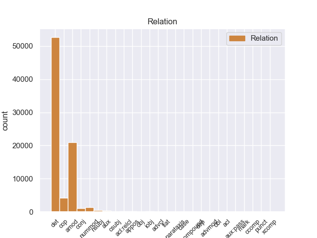
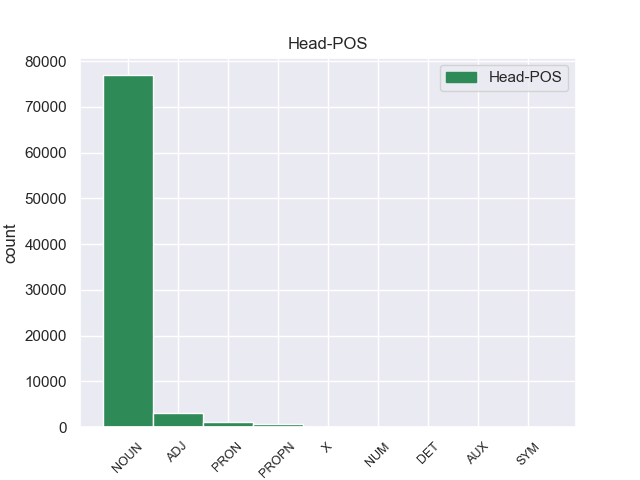
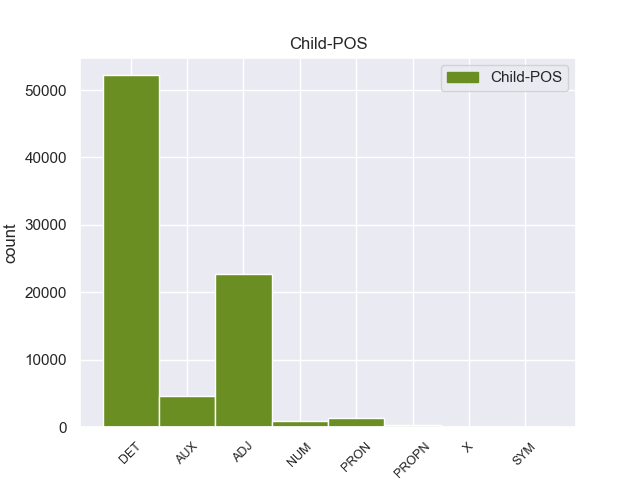

Distribution of features within this leaf



Agreement Rules sorted by frequency.
- When the dependent token is the determiner(det) of the head token, and the head token is NOUN and the dependent token is DET.
1 La _ _ _ _ 0 _ _ _
2 Isla _ _ _ _ 0 _ _ _
3 James _ _ _ _ 0 _ _ _
4 es _ _ _ _ 0 _ _ _
5 una _ _ _ _ 0 _ _ _
6 isla _ _ _ _ 0 _ _ _
7 de _ _ _ _ 0 _ _ _
8 el el DET _ Definite=Def|Gender=Masc|Number=Sing|PronType=Art 9 det _ _
9 archipiélago archipiélago NOUN _ Gender=Masc|Number=Sing 0 _ _ _
10 de _ _ _ _ 0 _ _ _
11 las _ _ _ _ 0 _ _ _
12 Islas _ _ _ _ 0 _ _ _
13 San _ _ _ _ 0 _ _ _
14 Juan _ _ _ _ 0 _ _ _
15 , _ _ _ _ 0 _ _ _
16 situadas _ _ _ _ 0 _ _ _
17 en _ _ _ _ 0 _ _ _
18 el _ _ _ _ 0 _ _ _
19 Estrecho _ _ _ _ 0 _ _ _
20 de _ _ _ _ 0 _ _ _
21 Georgia _ _ _ _ 0 _ _ _
22 . _ _ _ _ 0 _ _ _
1 Van _ _ _ _ 0 _ _ _
2 Damme _ _ _ _ 0 _ _ _
3 coreografió _ _ _ _ 0 _ _ _
4 de _ _ _ _ 0 _ _ _
5 la _ _ _ _ 0 _ _ _
6 pelea pelea NOUN _ Gender=Fem|Number=Sing 0 _ _ _
7 final final ADJ _ Number=Sing 6 amod _ _
8 entre _ _ _ _ 0 _ _ _
9 su _ _ _ _ 0 _ _ _
10 personaje _ _ _ _ 0 _ _ _
11 y _ _ _ _ 0 _ _ _
12 el _ _ _ _ 0 _ _ _
13 personaje _ _ _ _ 0 _ _ _
14 de _ _ _ _ 0 _ _ _
15 Stallone _ _ _ _ 0 _ _ _
16 . _ _ _ _ 0 _ _ _
1 De _ _ _ _ 0 _ _ _
2 los _ _ _ _ 0 _ _ _
3 1500 _ _ _ _ 0 _ _ _
4 habitantes _ _ _ _ 0 _ _ _
5 , _ _ _ _ 0 _ _ _
6 el _ _ _ _ 0 _ _ _
7 municipio _ _ _ _ 0 _ _ _
8 de _ _ _ _ 0 _ _ _
9 Lincoln _ _ _ _ 0 _ _ _
10 estaba _ _ _ _ 0 _ _ _
11 compuesto _ _ _ _ 0 _ _ _
12 por _ _ _ _ 0 _ _ _
13 el _ _ _ _ 0 _ _ _
14 97.6 _ _ _ _ 0 _ _ _
15 % _ _ _ _ 0 _ _ _
16 blancos _ _ _ _ 0 _ _ _
17 , _ _ _ _ 0 _ _ _
18 el _ _ _ _ 0 _ _ _
19 0.53 _ _ _ _ 0 _ _ _
20 % _ _ _ _ 0 _ _ _
21 eran _ _ _ _ 0 _ _ _
22 afroamericanos _ _ _ _ 0 _ _ _
23 , _ _ _ _ 0 _ _ _
24 el _ _ _ _ 0 _ _ _
25 0.33 _ _ _ _ 0 _ _ _
26 % _ _ _ _ 0 _ _ _
27 eran _ _ _ _ 0 _ _ _
28 amerindios _ _ _ _ 0 _ _ _
29 , _ _ _ _ 0 _ _ _
30 el _ _ _ _ 0 _ _ _
31 0.27 _ _ _ _ 0 _ _ _
32 % _ _ _ _ 0 _ _ _
33 eran _ _ _ _ 0 _ _ _
34 asiáticos _ _ _ _ 0 _ _ _
35 , _ _ _ _ 0 _ _ _
36 el _ _ _ _ 0 _ _ _
37 0 _ _ _ _ 0 _ _ _
38 % _ _ _ _ 0 _ _ _
39 eran ser AUX _ Mood=Ind|Number=Plur|Person=3|Tense=Imp|VerbForm=Fin 40 cop _ _
40 isleños isleño ADJ _ Gender=Masc|Number=Plur 0 _ _ _
41 de _ _ _ _ 0 _ _ _
42 el _ _ _ _ 0 _ _ _
43 Pacífico _ _ _ _ 0 _ _ _
44 , _ _ _ _ 0 _ _ _
45 el _ _ _ _ 0 _ _ _
46 0.07 _ _ _ _ 0 _ _ _
47 % _ _ _ _ 0 _ _ _
48 eran _ _ _ _ 0 _ _ _
49 de _ _ _ _ 0 _ _ _
50 otras _ _ _ _ 0 _ _ _
51 razas _ _ _ _ 0 _ _ _
52 y _ _ _ _ 0 _ _ _
53 el _ _ _ _ 0 _ _ _
54 1.2 _ _ _ _ 0 _ _ _
55 % _ _ _ _ 0 _ _ _
56 pertenecían _ _ _ _ 0 _ _ _
57 a _ _ _ _ 0 _ _ _
58 dos _ _ _ _ 0 _ _ _
59 o _ _ _ _ 0 _ _ _
60 más _ _ _ _ 0 _ _ _
61 razas _ _ _ _ 0 _ _ _
62 . _ _ _ _ 0 _ _ _
1 La _ _ _ _ 0 _ _ _
2 Isla _ _ _ _ 0 _ _ _
3 James _ _ _ _ 0 _ _ _
4 es ser AUX _ Mood=Ind|Number=Sing|Person=3|Tense=Pres|VerbForm=Fin 6 cop _ _
5 una _ _ _ _ 0 _ _ _
6 isla isla NOUN _ Gender=Fem|Number=Sing 0 _ _ _
7 de _ _ _ _ 0 _ _ _
8 el _ _ _ _ 0 _ _ _
9 archipiélago _ _ _ _ 0 _ _ _
10 de _ _ _ _ 0 _ _ _
11 las _ _ _ _ 0 _ _ _
12 Islas _ _ _ _ 0 _ _ _
13 San _ _ _ _ 0 _ _ _
14 Juan _ _ _ _ 0 _ _ _
15 , _ _ _ _ 0 _ _ _
16 situadas _ _ _ _ 0 _ _ _
17 en _ _ _ _ 0 _ _ _
18 el _ _ _ _ 0 _ _ _
19 Estrecho _ _ _ _ 0 _ _ _
20 de _ _ _ _ 0 _ _ _
21 Georgia _ _ _ _ 0 _ _ _
22 . _ _ _ _ 0 _ _ _
1 De _ _ _ _ 0 _ _ _
2 los _ _ _ _ 0 _ _ _
3 1500 _ _ _ _ 0 _ _ _
4 habitantes _ _ _ _ 0 _ _ _
5 , _ _ _ _ 0 _ _ _
6 el _ _ _ _ 0 _ _ _
7 municipio _ _ _ _ 0 _ _ _
8 de _ _ _ _ 0 _ _ _
9 Lincoln _ _ _ _ 0 _ _ _
10 estaba _ _ _ _ 0 _ _ _
11 compuesto _ _ _ _ 0 _ _ _
12 por _ _ _ _ 0 _ _ _
13 el _ _ _ _ 0 _ _ _
14 97.6 _ _ _ _ 0 _ _ _
15 % _ _ _ _ 0 _ _ _
16 blancos _ _ _ _ 0 _ _ _
17 , _ _ _ _ 0 _ _ _
18 el _ _ _ _ 0 _ _ _
19 0.53 _ _ _ _ 0 _ _ _
20 % _ _ _ _ 0 _ _ _
21 eran _ _ _ _ 0 _ _ _
22 afroamericanos _ _ _ _ 0 _ _ _
23 , _ _ _ _ 0 _ _ _
24 el _ _ _ _ 0 _ _ _
25 0.33 _ _ _ _ 0 _ _ _
26 % _ _ _ _ 0 _ _ _
27 eran _ _ _ _ 0 _ _ _
28 amerindios _ _ _ _ 0 _ _ _
29 , _ _ _ _ 0 _ _ _
30 el _ _ _ _ 0 _ _ _
31 0.27 _ _ _ _ 0 _ _ _
32 % _ _ _ _ 0 _ _ _
33 eran _ _ _ _ 0 _ _ _
34 asiáticos _ _ _ _ 0 _ _ _
35 , _ _ _ _ 0 _ _ _
36 el _ _ _ _ 0 _ _ _
37 0 _ _ _ _ 0 _ _ _
38 % _ _ _ _ 0 _ _ _
39 eran _ _ _ _ 0 _ _ _
40 isleños _ _ _ _ 0 _ _ _
41 de _ _ _ _ 0 _ _ _
42 el _ _ _ _ 0 _ _ _
43 Pacífico _ _ _ _ 0 _ _ _
44 , _ _ _ _ 0 _ _ _
45 el _ _ _ _ 0 _ _ _
46 0.07 _ _ _ _ 0 _ _ _
47 % _ _ _ _ 0 _ _ _
48 eran _ _ _ _ 0 _ _ _
49 de _ _ _ _ 0 _ _ _
50 otras _ _ _ _ 0 _ _ _
51 razas _ _ _ _ 0 _ _ _
52 y _ _ _ _ 0 _ _ _
53 el _ _ _ _ 0 _ _ _
54 1.2 _ _ _ _ 0 _ _ _
55 % _ _ _ _ 0 _ _ _
56 pertenecían _ _ _ _ 0 _ _ _
57 a _ _ _ _ 0 _ _ _
58 dos dos NUM _ Number=Plur|NumType=Card 61 nummod _ _
59 o _ _ _ _ 0 _ _ _
60 más _ _ _ _ 0 _ _ _
61 razas raza NOUN _ Gender=Fem|Number=Plur 0 _ _ _
62 . _ _ _ _ 0 _ _ _
1 Su _ _ _ _ 0 _ _ _
2 debut _ _ _ _ 0 _ _ _
3 en _ _ _ _ 0 _ _ _
4 la _ _ _ _ 0 _ _ _
5 Champions _ _ _ _ 0 _ _ _
6 League _ _ _ _ 0 _ _ _
7 se _ _ _ _ 0 _ _ _
8 produjo _ _ _ _ 0 _ _ _
9 en _ _ _ _ 0 _ _ _
10 un _ _ _ _ 0 _ _ _
11 partido _ _ _ _ 0 _ _ _
12 frente _ _ _ _ 0 _ _ _
13 a _ _ _ _ 0 _ _ _
14 el _ _ _ _ 0 _ _ _
15 FC _ _ _ _ 0 _ _ _
16 Oporto _ _ _ _ 0 _ _ _
17 , _ _ _ _ 0 _ _ _
18 donde _ _ _ _ 0 _ _ _
19 contribuyó _ _ _ _ 0 _ _ _
20 asistiendo _ _ _ _ 0 _ _ _
21 a _ _ _ _ 0 _ _ _
22 Santiago _ _ _ _ 0 _ _ _
23 Solari _ _ _ _ 0 _ _ _
24 con _ _ _ _ 0 _ _ _
25 un _ _ _ _ 0 _ _ _
26 centro _ _ _ _ 0 _ _ _
27 en _ _ _ _ 0 _ _ _
28 los _ _ _ _ 0 _ _ _
29 primeros primero ADJ _ Gender=Masc|Number=Plur|NumType=Ord 30 nummod _ _
30 minutos minuto NOUN _ Gender=Masc|Number=Plur 0 _ _ _
31 para _ _ _ _ 0 _ _ _
32 que _ _ _ _ 0 _ _ _
33 anotase _ _ _ _ 0 _ _ _
34 un _ _ _ _ 0 _ _ _
35 gol _ _ _ _ 0 _ _ _
36 . _ _ _ _ 0 _ _ _
1 La _ _ _ _ 0 _ _ _
2 Isla _ _ _ _ 0 _ _ _
3 James _ _ _ _ 0 _ _ _
4 es _ _ _ _ 0 _ _ _
5 una _ _ _ _ 0 _ _ _
6 isla _ _ _ _ 0 _ _ _
7 de _ _ _ _ 0 _ _ _
8 el _ _ _ _ 0 _ _ _
9 archipiélago _ _ _ _ 0 _ _ _
10 de _ _ _ _ 0 _ _ _
11 las _ _ _ _ 0 _ _ _
12 Islas _ _ _ _ 0 _ _ _
13 San _ _ _ _ 0 _ _ _
14 Juan _ _ _ _ 0 _ _ _
15 , _ _ _ _ 0 _ _ _
16 situadas _ _ _ _ 0 _ _ _
17 en _ _ _ _ 0 _ _ _
18 el el DET _ Definite=Def|Gender=Masc|Number=Sing|PronType=Art 19 det _ _
19 Estrecho estrecho PROPN _ Gender=Masc|Number=Sing 0 _ _ _
20 de _ _ _ _ 0 _ _ _
21 Georgia _ _ _ _ 0 _ _ _
22 . _ _ _ _ 0 _ _ _
1 De _ _ _ _ 0 _ _ _
2 los _ _ _ _ 0 _ _ _
3 1500 _ _ _ _ 0 _ _ _
4 habitantes _ _ _ _ 0 _ _ _
5 , _ _ _ _ 0 _ _ _
6 el _ _ _ _ 0 _ _ _
7 municipio _ _ _ _ 0 _ _ _
8 de _ _ _ _ 0 _ _ _
9 Lincoln _ _ _ _ 0 _ _ _
10 estaba _ _ _ _ 0 _ _ _
11 compuesto _ _ _ _ 0 _ _ _
12 por _ _ _ _ 0 _ _ _
13 el _ _ _ _ 0 _ _ _
14 97.6 _ _ _ _ 0 _ _ _
15 % _ _ _ _ 0 _ _ _
16 blancos _ _ _ _ 0 _ _ _
17 , _ _ _ _ 0 _ _ _
18 el _ _ _ _ 0 _ _ _
19 0.53 _ _ _ _ 0 _ _ _
20 % _ _ _ _ 0 _ _ _
21 eran _ _ _ _ 0 _ _ _
22 afroamericanos afroamericano ADJ _ Gender=Masc|Number=Plur 0 _ _ _
23 , _ _ _ _ 0 _ _ _
24 el _ _ _ _ 0 _ _ _
25 0.33 _ _ _ _ 0 _ _ _
26 % _ _ _ _ 0 _ _ _
27 eran _ _ _ _ 0 _ _ _
28 amerindios _ _ _ _ 0 _ _ _
29 , _ _ _ _ 0 _ _ _
30 el _ _ _ _ 0 _ _ _
31 0.27 _ _ _ _ 0 _ _ _
32 % _ _ _ _ 0 _ _ _
33 eran _ _ _ _ 0 _ _ _
34 asiáticos _ _ _ _ 0 _ _ _
35 , _ _ _ _ 0 _ _ _
36 el _ _ _ _ 0 _ _ _
37 0 _ _ _ _ 0 _ _ _
38 % _ _ _ _ 0 _ _ _
39 eran _ _ _ _ 0 _ _ _
40 isleños isleño ADJ _ Gender=Masc|Number=Plur 22 conj _ _
41 de _ _ _ _ 0 _ _ _
42 el _ _ _ _ 0 _ _ _
43 Pacífico _ _ _ _ 0 _ _ _
44 , _ _ _ _ 0 _ _ _
45 el _ _ _ _ 0 _ _ _
46 0.07 _ _ _ _ 0 _ _ _
47 % _ _ _ _ 0 _ _ _
48 eran _ _ _ _ 0 _ _ _
49 de _ _ _ _ 0 _ _ _
50 otras _ _ _ _ 0 _ _ _
51 razas _ _ _ _ 0 _ _ _
52 y _ _ _ _ 0 _ _ _
53 el _ _ _ _ 0 _ _ _
54 1.2 _ _ _ _ 0 _ _ _
55 % _ _ _ _ 0 _ _ _
56 pertenecían _ _ _ _ 0 _ _ _
57 a _ _ _ _ 0 _ _ _
58 dos _ _ _ _ 0 _ _ _
59 o _ _ _ _ 0 _ _ _
60 más _ _ _ _ 0 _ _ _
61 razas _ _ _ _ 0 _ _ _
62 . _ _ _ _ 0 _ _ _
1 La _ _ _ _ 0 _ _ _
2 publicación _ _ _ _ 0 _ _ _
3 estima _ _ _ _ 0 _ _ _
4 que _ _ _ _ 0 _ _ _
5 Stewart _ _ _ _ 0 _ _ _
6 , _ _ _ _ 0 _ _ _
7 que _ _ _ _ 0 _ _ _
8 además _ _ _ _ 0 _ _ _
9 es _ _ _ _ 0 _ _ _
10 la _ _ _ _ 0 _ _ _
11 actriz _ _ _ _ 0 _ _ _
12 más _ _ _ _ 0 _ _ _
13 joven _ _ _ _ 0 _ _ _
14 de _ _ _ _ 0 _ _ _
15 la _ _ _ _ 0 _ _ _
16 lista _ _ _ _ 0 _ _ _
17 , _ _ _ _ 0 _ _ _
18 ingresó _ _ _ _ 0 _ _ _
19 25 _ _ _ _ 0 _ _ _
20 millones _ _ _ _ 0 _ _ _
21 de _ _ _ _ 0 _ _ _
22 dólares _ _ _ _ 0 _ _ _
23 por _ _ _ _ 0 _ _ _
24 encarnar _ _ _ _ 0 _ _ _
25 a _ _ _ _ 0 _ _ _
26 Bella _ _ _ _ 0 _ _ _
27 Swan _ _ _ _ 0 _ _ _
28 en _ _ _ _ 0 _ _ _
29 las _ _ _ _ 0 _ _ _
30 últimas _ _ _ _ 0 _ _ _
31 dos _ _ _ _ 0 _ _ _
32 entregas _ _ _ _ 0 _ _ _
33 de _ _ _ _ 0 _ _ _
34 la _ _ _ _ 0 _ _ _
35 saga _ _ _ _ 0 _ _ _
36 ( _ _ _ _ 0 _ _ _
37 12,5 _ _ _ _ 0 _ _ _
38 millones _ _ _ _ 0 _ _ _
39 por _ _ _ _ 0 _ _ _
40 cada cada DET _ Number=Sing|PronType=Tot 41 det _ _
41 una uno PRON _ Gender=Fem|Number=Sing|PronType=Ind 0 _ _ _
42 ) _ _ _ _ 0 _ _ _
43 , _ _ _ _ 0 _ _ _
44 dirigidas _ _ _ _ 0 _ _ _
45 por _ _ _ _ 0 _ _ _
46 Bill _ _ _ _ 0 _ _ _
47 Condon _ _ _ _ 0 _ _ _
48 . _ _ _ _ 0 _ _ _
1 Admitía _ _ _ _ 0 _ _ _
2 que _ _ _ _ 0 _ _ _
3 a _ _ _ _ 0 _ _ _
4 lo él PRON _ Case=Acc|Gender=Masc|Number=Sing|Person=3|PrepCase=Npr|PronType=Prs 5 det _ _
5 largo largo NOUN _ Gender=Masc|Number=Sing 0 _ _ _
6 de _ _ _ _ 0 _ _ _
7 su _ _ _ _ 0 _ _ _
8 vida _ _ _ _ 0 _ _ _
9 había _ _ _ _ 0 _ _ _
10 luchado _ _ _ _ 0 _ _ _
11 contra _ _ _ _ 0 _ _ _
12 la _ _ _ _ 0 _ _ _
13 anorexia _ _ _ _ 0 _ _ _
14 nerviosa _ _ _ _ 0 _ _ _
15 , _ _ _ _ 0 _ _ _
16 la _ _ _ _ 0 _ _ _
17 depresión _ _ _ _ 0 _ _ _
18 y _ _ _ _ 0 _ _ _
19 el _ _ _ _ 0 _ _ _
20 alcoholismo _ _ _ _ 0 _ _ _
21 . _ _ _ _ 0 _ _ _
1 No _ _ _ _ 0 _ _ _
2 hace _ _ _ _ 0 _ _ _
3 falta _ _ _ _ 0 _ _ _
4 señalar _ _ _ _ 0 _ _ _
5 que _ _ _ _ 0 _ _ _
6 el _ _ _ _ 0 _ _ _
7 SilentWingsPURE _ _ _ _ 0 _ _ _
8 se _ _ _ _ 0 _ _ _
9 trata _ _ _ _ 0 _ _ _
10 de _ _ _ _ 0 _ _ _
11 un _ _ _ _ 0 _ _ _
12 ventilador _ _ _ _ 0 _ _ _
13 con _ _ _ _ 0 _ _ _
14 gran _ _ _ _ 0 _ _ _
15 durabilidad durabilidad NOUN _ Gender=Fem|Number=Sing 0 _ _ _
16 , _ _ _ _ 0 _ _ _
17 extremadamente _ _ _ _ 0 _ _ _
18 silencioso silencioso ADJ _ Gender=Masc|Number=Sing 15 conj _ _
19 y _ _ _ _ 0 _ _ _
20 con _ _ _ _ 0 _ _ _
21 grandes _ _ _ _ 0 _ _ _
22 prestaciones _ _ _ _ 0 _ _ _
23 en _ _ _ _ 0 _ _ _
24 refrigeración _ _ _ _ 0 _ _ _
25 . _ _ _ _ 0 _ _ _
1 Es ser AUX _ Mood=Ind|Number=Sing|Person=3|Tense=Pres|VerbForm=Fin 2 cop _ _
2 uno uno PRON _ Gender=Masc|Number=Sing|PronType=Ind 0 _ _ _
3 de _ _ _ _ 0 _ _ _
4 los _ _ _ _ 0 _ _ _
5 212 _ _ _ _ 0 _ _ _
6 municipios _ _ _ _ 0 _ _ _
7 de _ _ _ _ 0 _ _ _
8 la _ _ _ _ 0 _ _ _
9 entidad _ _ _ _ 0 _ _ _
10 y _ _ _ _ 0 _ _ _
11 tiene _ _ _ _ 0 _ _ _
12 su _ _ _ _ 0 _ _ _
13 ubicación _ _ _ _ 0 _ _ _
14 en _ _ _ _ 0 _ _ _
15 la _ _ _ _ 0 _ _ _
16 región _ _ _ _ 0 _ _ _
17 montañosa _ _ _ _ 0 _ _ _
18 de _ _ _ _ 0 _ _ _
19 la _ _ _ _ 0 _ _ _
20 zona _ _ _ _ 0 _ _ _
21 centro _ _ _ _ 0 _ _ _
22 de _ _ _ _ 0 _ _ _
23 el _ _ _ _ 0 _ _ _
24 estado _ _ _ _ 0 _ _ _
25 . _ _ _ _ 0 _ _ _
1 Este este PRON _ Gender=Masc|Number=Sing|PronType=Dem 4 nsubj _ _
2 fue _ _ _ _ 0 _ _ _
3 el _ _ _ _ 0 _ _ _
4 episodio episodio NOUN _ Gender=Masc|Number=Sing 0 _ _ _
5 número _ _ _ _ 0 _ _ _
6 100 _ _ _ _ 0 _ _ _
7 de _ _ _ _ 0 _ _ _
8 la _ _ _ _ 0 _ _ _
9 serie _ _ _ _ 0 _ _ _
10 , _ _ _ _ 0 _ _ _
11 que _ _ _ _ 0 _ _ _
12 fue _ _ _ _ 0 _ _ _
13 estrenado _ _ _ _ 0 _ _ _
14 el _ _ _ _ 0 _ _ _
15 9 _ _ _ _ 0 _ _ _
16 de _ _ _ _ 0 _ _ _
17 junio _ _ _ _ 0 _ _ _
18 de _ _ _ _ 0 _ _ _
19 2012 _ _ _ _ 0 _ _ _
20 , _ _ _ _ 0 _ _ _
21 en _ _ _ _ 0 _ _ _
22 Latinoamérica _ _ _ _ 0 _ _ _
23 y _ _ _ _ 0 _ _ _
24 España _ _ _ _ 0 _ _ _
25 aún _ _ _ _ 0 _ _ _
26 no _ _ _ _ 0 _ _ _
27 ha _ _ _ _ 0 _ _ _
28 sido _ _ _ _ 0 _ _ _
29 confirmado _ _ _ _ 0 _ _ _
30 el _ _ _ _ 0 _ _ _
31 estreno _ _ _ _ 0 _ _ _
32 . _ _ _ _ 0 _ _ _
1 El _ _ _ _ 0 _ _ _
2 sonido _ _ _ _ 0 _ _ _
3 cambia _ _ _ _ 0 _ _ _
4 a _ _ _ _ 0 _ _ _
5 algo algo PRON _ Number=Sing|PronType=Ind 0 _ _ _
6 más _ _ _ _ 0 _ _ _
7 electrónico electrónico ADJ _ Gender=Masc|Number=Sing 5 amod _ _
8 que _ _ _ _ 0 _ _ _
9 la _ _ _ _ 0 _ _ _
10 estructura _ _ _ _ 0 _ _ _
11 tradicional _ _ _ _ 0 _ _ _
12 , _ _ _ _ 0 _ _ _
13 cambio _ _ _ _ 0 _ _ _
14 que _ _ _ _ 0 _ _ _
15 se _ _ _ _ 0 _ _ _
16 hace _ _ _ _ 0 _ _ _
17 más _ _ _ _ 0 _ _ _
18 patente _ _ _ _ 0 _ _ _
19 en _ _ _ _ 0 _ _ _
20 el _ _ _ _ 0 _ _ _
21 siguiente _ _ _ _ 0 _ _ _
22 disco _ _ _ _ 0 _ _ _
23 . _ _ _ _ 0 _ _ _
1 " _ _ _ _ 0 _ _ _
2 Es _ _ _ _ 0 _ _ _
3 un _ _ _ _ 0 _ _ _
4 programa _ _ _ _ 0 _ _ _
5 que _ _ _ _ 0 _ _ _
6 va ir AUX _ Mood=Ind|Number=Sing|Person=3|Tense=Pres|VerbForm=Fin 9 aux _ _
7 a _ _ _ _ 0 _ _ _
8 ser _ _ _ _ 0 _ _ _
9 permanente permanente ADJ _ Number=Sing 0 _ _ _
10 de _ _ _ _ 0 _ _ _
11 la _ _ _ _ 0 _ _ _
12 política _ _ _ _ 0 _ _ _
13 de _ _ _ _ 0 _ _ _
14 inmigración _ _ _ _ 0 _ _ _
15 de _ _ _ _ 0 _ _ _
16 este _ _ _ _ 0 _ _ _
17 Gobierno _ _ _ _ 0 _ _ _
18 y _ _ _ _ 0 _ _ _
19 no _ _ _ _ 0 _ _ _
20 debe _ _ _ _ 0 _ _ _
21 ceñir _ _ _ _ 0 _ _ _
22 se _ _ _ _ 0 _ _ _
23 a _ _ _ _ 0 _ _ _
24 la _ _ _ _ 0 _ _ _
25 situación _ _ _ _ 0 _ _ _
26 económica _ _ _ _ 0 _ _ _
27 que _ _ _ _ 0 _ _ _
28 vivimos _ _ _ _ 0 _ _ _
29 . _ _ _ _ 0 _ _ _
1 Para _ _ _ _ 0 _ _ _
2 los _ _ _ _ 0 _ _ _
3 primeros _ _ _ _ 0 _ _ _
4 usuarios _ _ _ _ 0 _ _ _
5 de _ _ _ _ 0 _ _ _
6 el _ _ _ _ 0 _ _ _
7 ferrocarril _ _ _ _ 0 _ _ _
8 el _ _ _ _ 0 _ _ _
9 desaparecer _ _ _ _ 0 _ _ _
10 dentro _ _ _ _ 0 _ _ _
11 de _ _ _ _ 0 _ _ _
12 las _ _ _ _ 0 _ _ _
13 entrañas _ _ _ _ 0 _ _ _
14 de _ _ _ _ 0 _ _ _
15 la _ _ _ _ 0 _ _ _
16 tierra _ _ _ _ 0 _ _ _
17 metidos _ _ _ _ 0 _ _ _
18 en _ _ _ _ 0 _ _ _
19 un _ _ _ _ 0 _ _ _
20 ruidoso _ _ _ _ 0 _ _ _
21 y _ _ _ _ 0 _ _ _
22 humeante _ _ _ _ 0 _ _ _
23 tren _ _ _ _ 0 _ _ _
24 debe deber AUX _ Mood=Ind|Number=Sing|Person=3|Tense=Pres|VerbForm=Fin 28 aux _ _
25 haber _ _ _ _ 0 _ _ _
26 sido _ _ _ _ 0 _ _ _
27 una _ _ _ _ 0 _ _ _
28 experiencia experiencia NOUN _ Gender=Fem|Number=Sing 0 _ _ _
29 alarmante _ _ _ _ 0 _ _ _
30 . _ _ _ _ 0 _ _ _
1 Pujaló _ _ _ _ 0 _ _ _
2 negó _ _ _ _ 0 _ _ _
3 que _ _ _ _ 0 _ _ _
4 la _ _ _ _ 0 _ _ _
5 niña _ _ _ _ 0 _ _ _
6 fuese _ _ _ _ 0 _ _ _
7 suya _ _ _ _ 0 _ _ _
8 , _ _ _ _ 0 _ _ _
9 que _ _ _ _ 0 _ _ _
10 nunca _ _ _ _ 0 _ _ _
11 la _ _ _ _ 0 _ _ _
12 había _ _ _ _ 0 _ _ _
13 visto _ _ _ _ 0 _ _ _
14 y _ _ _ _ 0 _ _ _
15 que _ _ _ _ 0 _ _ _
16 Enriqueta _ _ _ _ 0 _ _ _
17 ya _ _ _ _ 0 _ _ _
18 le _ _ _ _ 0 _ _ _
19 había _ _ _ _ 0 _ _ _
20 mentido _ _ _ _ 0 _ _ _
21 en _ _ _ _ 0 _ _ _
22 el el DET _ Definite=Def|Gender=Masc|Number=Sing|PronType=Art 23 det _ _
23 pasado pasado ADJ _ Gender=Masc|Number=Sing 0 _ _ _
24 con _ _ _ _ 0 _ _ _
25 un _ _ _ _ 0 _ _ _
26 falso _ _ _ _ 0 _ _ _
27 embarazo _ _ _ _ 0 _ _ _
28 y _ _ _ _ 0 _ _ _
29 un _ _ _ _ 0 _ _ _
30 falso _ _ _ _ 0 _ _ _
31 parto _ _ _ _ 0 _ _ _
32 . _ _ _ _ 0 _ _ _
1 Cada _ _ _ _ 0 _ _ _
2 uno _ _ _ _ 0 _ _ _
3 presentará _ _ _ _ 0 _ _ _
4 todas _ _ _ _ 0 _ _ _
5 las _ _ _ _ 0 _ _ _
6 obras _ _ _ _ 0 _ _ _
7 que _ _ _ _ 0 _ _ _
8 considere _ _ _ _ 0 _ _ _
9 oportunas _ _ _ _ 0 _ _ _
10 , _ _ _ _ 0 _ _ _
11 siendo _ _ _ _ 0 _ _ _
12 condición _ _ _ _ 0 _ _ _
13 imprescindible _ _ _ _ 0 _ _ _
14 que _ _ _ _ 0 _ _ _
15 éstas este PRON _ Gender=Fem|Number=Plur|PronType=Dem 17 nsubj _ _
16 sean _ _ _ _ 0 _ _ _
17 inéditas inédito ADJ _ Gender=Fem|Number=Plur 0 _ _ _
18 . _ _ _ _ 0 _ _ _
1 " _ _ _ _ 0 _ _ _
2 Es _ _ _ _ 0 _ _ _
3 un _ _ _ _ 0 _ _ _
4 programa programa NOUN _ Gender=Masc|Number=Sing 0 _ _ _
5 que _ _ _ _ 0 _ _ _
6 va _ _ _ _ 0 _ _ _
7 a _ _ _ _ 0 _ _ _
8 ser _ _ _ _ 0 _ _ _
9 permanente permanente ADJ _ Number=Sing 4 acl:relcl _ _
10 de _ _ _ _ 0 _ _ _
11 la _ _ _ _ 0 _ _ _
12 política _ _ _ _ 0 _ _ _
13 de _ _ _ _ 0 _ _ _
14 inmigración _ _ _ _ 0 _ _ _
15 de _ _ _ _ 0 _ _ _
16 este _ _ _ _ 0 _ _ _
17 Gobierno _ _ _ _ 0 _ _ _
18 y _ _ _ _ 0 _ _ _
19 no _ _ _ _ 0 _ _ _
20 debe _ _ _ _ 0 _ _ _
21 ceñir _ _ _ _ 0 _ _ _
22 se _ _ _ _ 0 _ _ _
23 a _ _ _ _ 0 _ _ _
24 la _ _ _ _ 0 _ _ _
25 situación _ _ _ _ 0 _ _ _
26 económica _ _ _ _ 0 _ _ _
27 que _ _ _ _ 0 _ _ _
28 vivimos _ _ _ _ 0 _ _ _
29 . _ _ _ _ 0 _ _ _
1 La _ _ _ _ 0 _ _ _
2 Isla isla PROPN _ Gender=Fem|Number=Sing 6 nsubj _ _
3 James _ _ _ _ 0 _ _ _
4 es _ _ _ _ 0 _ _ _
5 una _ _ _ _ 0 _ _ _
6 isla isla NOUN _ Gender=Fem|Number=Sing 0 _ _ _
7 de _ _ _ _ 0 _ _ _
8 el _ _ _ _ 0 _ _ _
9 archipiélago _ _ _ _ 0 _ _ _
10 de _ _ _ _ 0 _ _ _
11 las _ _ _ _ 0 _ _ _
12 Islas _ _ _ _ 0 _ _ _
13 San _ _ _ _ 0 _ _ _
14 Juan _ _ _ _ 0 _ _ _
15 , _ _ _ _ 0 _ _ _
16 situadas _ _ _ _ 0 _ _ _
17 en _ _ _ _ 0 _ _ _
18 el _ _ _ _ 0 _ _ _
19 Estrecho _ _ _ _ 0 _ _ _
20 de _ _ _ _ 0 _ _ _
21 Georgia _ _ _ _ 0 _ _ _
22 . _ _ _ _ 0 _ _ _
1 Hay _ _ _ _ 0 _ _ _
2 cultivos _ _ _ _ 0 _ _ _
3 de _ _ _ _ 0 _ _ _
4 yerba yerba NOUN _ Gender=Fem|Number=Sing 0 _ _ _
5 mate _ _ _ _ 0 _ _ _
6 , _ _ _ _ 0 _ _ _
7 tung _ _ _ _ 0 _ _ _
8 o _ _ _ _ 0 _ _ _
9 aleurites _ _ _ _ 0 _ _ _
10 , _ _ _ _ 0 _ _ _
11 cítricos _ _ _ _ 0 _ _ _
12 , _ _ _ _ 0 _ _ _
13 hortalizas _ _ _ _ 0 _ _ _
14 y _ _ _ _ 0 _ _ _
15 algo algo PRON _ Number=Sing|PronType=Ind 4 conj _ _
16 de _ _ _ _ 0 _ _ _
17 mandioca _ _ _ _ 0 _ _ _
18 . _ _ _ _ 0 _ _ _
1 El _ _ _ _ 0 _ _ _
2 12 _ _ _ _ 0 _ _ _
3 de _ _ _ _ 0 _ _ _
4 noviembre _ _ _ _ 0 _ _ _
5 el _ _ _ _ 0 _ _ _
6 Instituto _ _ _ _ 0 _ _ _
7 Nacional _ _ _ _ 0 _ _ _
8 de _ _ _ _ 0 _ _ _
9 Migración _ _ _ _ 0 _ _ _
10 detuvo _ _ _ _ 0 _ _ _
11 a _ _ _ _ 0 _ _ _
12 164 _ _ _ _ 0 _ _ _
13 indocumentados _ _ _ _ 0 _ _ _
14 centroamericanos _ _ _ _ 0 _ _ _
15 ( _ _ _ _ 0 _ _ _
16 159 _ _ _ _ 0 _ _ _
17 guatemaltecos _ _ _ _ 0 _ _ _
18 y _ _ _ _ 0 _ _ _
19 5 _ _ _ _ 0 _ _ _
20 hondureños _ _ _ _ 0 _ _ _
21 ) _ _ _ _ 0 _ _ _
22 a _ _ _ _ 0 _ _ _
23 bordo _ _ _ _ 0 _ _ _
24 de _ _ _ _ 0 _ _ _
25 un _ _ _ _ 0 _ _ _
26 tráiler _ _ _ _ 0 _ _ _
27 procedente _ _ _ _ 0 _ _ _
28 de _ _ _ _ 0 _ _ _
29 Comitán _ _ _ _ 0 _ _ _
30 de _ _ _ _ 0 _ _ _
31 Domínguez _ _ _ _ 0 _ _ _
32 , _ _ _ _ 0 _ _ _
33 que _ _ _ _ 0 _ _ _
34 transportaba _ _ _ _ 0 _ _ _
35 500 _ _ _ _ 0 _ _ _
36 cajas _ _ _ _ 0 _ _ _
37 de _ _ _ _ 0 _ _ _
38 sopa _ _ _ _ 0 _ _ _
39 instantánea _ _ _ _ 0 _ _ _
40 y _ _ _ _ 0 _ _ _
41 que _ _ _ _ 0 _ _ _
42 circulaba _ _ _ _ 0 _ _ _
43 con _ _ _ _ 0 _ _ _
44 la _ _ _ _ 0 _ _ _
45 leyenda leyenda NOUN _ Gender=Fem|Number=Sing 0 _ _ _
46 : _ _ _ _ 0 _ _ _
47 " _ _ _ _ 0 _ _ _
48 Ayuda ayuda PROPN _ Gender=Fem|Number=Sing 45 appos _ _
49 para _ _ _ _ 0 _ _ _
50 nuestros _ _ _ _ 0 _ _ _
51 hermanos _ _ _ _ 0 _ _ _
52 de _ _ _ _ 0 _ _ _
53 Tabasco _ _ _ _ 0 _ _ _
54 " _ _ _ _ 0 _ _ _
55 . _ _ _ _ 0 _ _ _
1 El _ _ _ _ 0 _ _ _
2 año _ _ _ _ 0 _ _ _
3 2010 _ _ _ _ 0 _ _ _
4 culminó _ _ _ _ 0 _ _ _
5 con _ _ _ _ 0 _ _ _
6 Soto _ _ _ _ 0 _ _ _
7 coronándo _ _ _ _ 0 _ _ _
8 se _ _ _ _ 0 _ _ _
9 Campeón campeón PROPN _ Gender=Masc|Number=Sing 0 _ _ _
10 Nacional nacional PROPN _ Number=Sing 9 amod _ _
11 Contrarreloj _ _ _ _ 0 _ _ _
12 . _ _ _ _ 0 _ _ _
1 También _ _ _ _ 0 _ _ _
2 puede _ _ _ _ 0 _ _ _
3 ser _ _ _ _ 0 _ _ _
4 resultado _ _ _ _ 0 _ _ _
5 de _ _ _ _ 0 _ _ _
6 el _ _ _ _ 0 _ _ _
7 deseo _ _ _ _ 0 _ _ _
8 de _ _ _ _ 0 _ _ _
9 lograr _ _ _ _ 0 _ _ _
10 la _ _ _ _ 0 _ _ _
11 homogeneidad _ _ _ _ 0 _ _ _
12 religiosa _ _ _ _ 0 _ _ _
13 en _ _ _ _ 0 _ _ _
14 un _ _ _ _ 0 _ _ _
15 determinado _ _ _ _ 0 _ _ _
16 territorio _ _ _ _ 0 _ _ _
17 , _ _ _ _ 0 _ _ _
18 lo él PRON _ Case=Acc|Gender=Masc|Number=Sing|Person=3|PrepCase=Npr|PronType=Prs 19 det _ _
19 cual cual PRON _ Number=Sing|PronType=Int,Rel 0 _ _ _
20 lleva _ _ _ _ 0 _ _ _
21 a _ _ _ _ 0 _ _ _
22 algunos _ _ _ _ 0 _ _ _
23 miembros _ _ _ _ 0 _ _ _
24 de _ _ _ _ 0 _ _ _
25 los _ _ _ _ 0 _ _ _
26 grupos _ _ _ _ 0 _ _ _
27 mayoritarios _ _ _ _ 0 _ _ _
28 a _ _ _ _ 0 _ _ _
29 despreciar _ _ _ _ 0 _ _ _
30 o _ _ _ _ 0 _ _ _
31 atacar _ _ _ _ 0 _ _ _
32 a _ _ _ _ 0 _ _ _
33 los _ _ _ _ 0 _ _ _
34 cristianos _ _ _ _ 0 _ _ _
35 si _ _ _ _ 0 _ _ _
36 son _ _ _ _ 0 _ _ _
37 minoritarios _ _ _ _ 0 _ _ _
38 . _ _ _ _ 0 _ _ _
1 Charito _ _ _ _ 0 _ _ _
2 , _ _ _ _ 0 _ _ _
3 su _ _ _ _ 0 _ _ _
4 hija _ _ _ _ 0 _ _ _
5 menor _ _ _ _ 0 _ _ _
6 , _ _ _ _ 0 _ _ _
7 a _ _ _ _ 0 _ _ _
8 la _ _ _ _ 0 _ _ _
9 que _ _ _ _ 0 _ _ _
10 llaman _ _ _ _ 0 _ _ _
11 la _ _ _ _ 0 _ _ _
12 Niña _ _ _ _ 0 _ _ _
13 Chica _ _ _ _ 0 _ _ _
14 , _ _ _ _ 0 _ _ _
15 es _ _ _ _ 0 _ _ _
16 deficiente deficiente ADJ _ Number=Sing 0 _ _ _
17 mental mental ADJ _ Number=Sing 16 amod _ _
18 y _ _ _ _ 0 _ _ _
19 permanece _ _ _ _ 0 _ _ _
20 siempre _ _ _ _ 0 _ _ _
21 en _ _ _ _ 0 _ _ _
22 una _ _ _ _ 0 _ _ _
23 cuna _ _ _ _ 0 _ _ _
24 . _ _ _ _ 0 _ _ _
1 Si _ _ _ _ 0 _ _ _
2 me _ _ _ _ 0 _ _ _
3 vuelven _ _ _ _ 0 _ _ _
4 a _ _ _ _ 0 _ _ _
5 dar _ _ _ _ 0 _ _ _
6 una _ _ _ _ 0 _ _ _
7 beca _ _ _ _ 0 _ _ _
8 y _ _ _ _ 0 _ _ _
9 me yo PRON _ Case=Acc,Dat|Number=Sing|Person=1|PrepCase=Npr|PronType=Prs 10 iobj _ _
10 desplazo despla NOUN _ Number=Sing 0 _ _ _
11 a _ _ _ _ 0 _ _ _
12 Sevilla _ _ _ _ 0 _ _ _
13 seguro _ _ _ _ 0 _ _ _
14 que _ _ _ _ 0 _ _ _
15 vuelvo _ _ _ _ 0 _ _ _
16 . _ _ _ _ 0 _ _ _
1 El _ _ _ _ 0 _ _ _
2 INI _ _ _ _ 0 _ _ _
3 cumplía _ _ _ _ 0 _ _ _
4 así _ _ _ _ 0 _ _ _
5 con _ _ _ _ 0 _ _ _
6 una _ _ _ _ 0 _ _ _
7 doble _ _ _ _ 0 _ _ _
8 función función NOUN _ Gender=Fem|Number=Sing 0 _ _ _
9 : _ _ _ _ 0 _ _ _
10 la él PRON _ Case=Acc|Gender=Fem|Number=Sing|Person=3|PrepCase=Npr|PronType=Prs 8 appos _ _
11 de _ _ _ _ 0 _ _ _
12 llevar _ _ _ _ 0 _ _ _
13 el _ _ _ _ 0 _ _ _
14 desarrollo _ _ _ _ 0 _ _ _
15 a _ _ _ _ 0 _ _ _
16 las _ _ _ _ 0 _ _ _
17 zonas _ _ _ _ 0 _ _ _
18 rurales _ _ _ _ 0 _ _ _
19 y _ _ _ _ 0 _ _ _
20 la _ _ _ _ 0 _ _ _
21 de _ _ _ _ 0 _ _ _
22 recuperar _ _ _ _ 0 _ _ _
23 a _ _ _ _ 0 _ _ _
24 las _ _ _ _ 0 _ _ _
25 culturas _ _ _ _ 0 _ _ _
26 indígenas _ _ _ _ 0 _ _ _
27 aquellas _ _ _ _ 0 _ _ _
28 características _ _ _ _ 0 _ _ _
29 que _ _ _ _ 0 _ _ _
30 pudieran _ _ _ _ 0 _ _ _
31 ser _ _ _ _ 0 _ _ _
32 integradas _ _ _ _ 0 _ _ _
33 a _ _ _ _ 0 _ _ _
34 el _ _ _ _ 0 _ _ _
35 patrimonio _ _ _ _ 0 _ _ _
36 cultural _ _ _ _ 0 _ _ _
37 de _ _ _ _ 0 _ _ _
38 la _ _ _ _ 0 _ _ _
39 nación _ _ _ _ 0 _ _ _
40 . _ _ _ _ 0 _ _ _
1 Esto este PRON _ Number=Sing|PronType=Dem 3 nsubj _ _
2 es _ _ _ _ 0 _ _ _
3 lo él PRON _ Case=Acc|Gender=Masc|Number=Sing|Person=3|PrepCase=Npr|PronType=Prs 0 _ _ _
4 que _ _ _ _ 0 _ _ _
5 nos _ _ _ _ 0 _ _ _
6 enseñó _ _ _ _ 0 _ _ _
7 el _ _ _ _ 0 _ _ _
8 gran _ _ _ _ 0 _ _ _
9 fundador _ _ _ _ 0 _ _ _
10 de _ _ _ _ 0 _ _ _
11 nuestro _ _ _ _ 0 _ _ _
12 Estado _ _ _ _ 0 _ _ _
13 , _ _ _ _ 0 _ _ _
14 Vladimir _ _ _ _ 0 _ _ _
15 Lenin _ _ _ _ 0 _ _ _
16 . _ _ _ _ 0 _ _ _
1 El _ _ _ _ 0 _ _ _
2 cráneo _ _ _ _ 0 _ _ _
3 más _ _ _ _ 0 _ _ _
4 largo _ _ _ _ 0 _ _ _
5 representado _ _ _ _ 0 _ _ _
6 es ser AUX _ Mood=Ind|Number=Sing|Person=3|Tense=Pres|VerbForm=Fin 7 cop _ _
7 el el DET _ Definite=Def|Gender=Masc|Number=Sing|PronType=Art 0 _ _ _
8 de _ _ _ _ 0 _ _ _
9 Nemegtosaurus _ _ _ _ 0 _ _ _
10 , _ _ _ _ 0 _ _ _
11 de _ _ _ _ 0 _ _ _
12 el _ _ _ _ 0 _ _ _
13 que _ _ _ _ 0 _ _ _
14 no _ _ _ _ 0 _ _ _
15 se _ _ _ _ 0 _ _ _
16 piensa _ _ _ _ 0 _ _ _
17 que _ _ _ _ 0 _ _ _
18 sea _ _ _ _ 0 _ _ _
19 un _ _ _ _ 0 _ _ _
20 saurópodo _ _ _ _ 0 _ _ _
21 particularmente _ _ _ _ 0 _ _ _
22 grande _ _ _ _ 0 _ _ _
23 . _ _ _ _ 0 _ _ _
1 Esto _ _ _ _ 0 _ _ _
2 me _ _ _ _ 0 _ _ _
3 recordaría _ _ _ _ 0 _ _ _
4 un _ _ _ _ 0 _ _ _
5 refrán _ _ _ _ 0 _ _ _
6 griego _ _ _ _ 0 _ _ _
7 que _ _ _ _ 0 _ _ _
8 dice _ _ _ _ 0 _ _ _
9 que _ _ _ _ 0 _ _ _
10 no _ _ _ _ 0 _ _ _
11 te _ _ _ _ 0 _ _ _
12 puedes _ _ _ _ 0 _ _ _
13 cortar _ _ _ _ 0 _ _ _
14 la _ _ _ _ 0 _ _ _
15 cabeza _ _ _ _ 0 _ _ _
16 si _ _ _ _ 0 _ _ _
17 lo él PRON _ Case=Acc|Gender=Masc|Number=Sing|Person=3|PrepCase=Npr|PronType=Prs 0 _ _ _
18 que _ _ _ _ 0 _ _ _
19 te _ _ _ _ 0 _ _ _
20 duele duele ADJ _ Number=Sing 17 acl:relcl _ _
21 es _ _ _ _ 0 _ _ _
22 un _ _ _ _ 0 _ _ _
23 diente _ _ _ _ 0 _ _ _
24 . _ _ _ _ 0 _ _ _
1 La _ _ _ _ 0 _ _ _
2 totalidad _ _ _ _ 0 _ _ _
3 de _ _ _ _ 0 _ _ _
4 los _ _ _ _ 0 _ _ _
5 libros _ _ _ _ 0 _ _ _
6 de _ _ _ _ 0 _ _ _
7 cuentos _ _ _ _ 0 _ _ _
8 , _ _ _ _ 0 _ _ _
9 y _ _ _ _ 0 _ _ _
10 casi _ _ _ _ 0 _ _ _
11 todas _ _ _ _ 0 _ _ _
12 sus _ _ _ _ 0 _ _ _
13 novelas _ _ _ _ 0 _ _ _
14 ( _ _ _ _ 0 _ _ _
15 salvo _ _ _ _ 0 _ _ _
16 La _ _ _ _ 0 _ _ _
17 literatura literatura PROPN _ Gender=Fem|Number=Sing 0 _ _ _
18 nazi nazi ADJ _ Number=Sing 17 amod _ _
19 en _ _ _ _ 0 _ _ _
20 América _ _ _ _ 0 _ _ _
21 , _ _ _ _ 0 _ _ _
22 publicada _ _ _ _ 0 _ _ _
23 por _ _ _ _ 0 _ _ _
24 la _ _ _ _ 0 _ _ _
25 editorial _ _ _ _ 0 _ _ _
26 Seix _ _ _ _ 0 _ _ _
27 Barral _ _ _ _ 0 _ _ _
28 , _ _ _ _ 0 _ _ _
29 y _ _ _ _ 0 _ _ _
30 Consejos _ _ _ _ 0 _ _ _
31 de _ _ _ _ 0 _ _ _
32 un _ _ _ _ 0 _ _ _
33 discípulo _ _ _ _ 0 _ _ _
34 ... _ _ _ _ 0 _ _ _
35 , _ _ _ _ 0 _ _ _
36 reeditada _ _ _ _ 0 _ _ _
37 por _ _ _ _ 0 _ _ _
38 la _ _ _ _ 0 _ _ _
39 Editorial _ _ _ _ 0 _ _ _
40 Acantilado _ _ _ _ 0 _ _ _
41 ) _ _ _ _ 0 _ _ _
42 , _ _ _ _ 0 _ _ _
43 fue _ _ _ _ 0 _ _ _
44 publicada _ _ _ _ 0 _ _ _
45 por _ _ _ _ 0 _ _ _
46 Anagrama _ _ _ _ 0 _ _ _
47 . _ _ _ _ 0 _ _ _
1 Zoila zoila PROPN _ Gender=Fem|Number=Sing 0 _ _ _
2 Rosa rosa PROPN _ Gender=Fem|Number=Sing 1 flat _ _
3 Guevara _ _ _ _ 0 _ _ _
4 Muñoz _ _ _ _ 0 _ _ _
5 , _ _ _ _ 0 _ _ _
6 has _ _ _ _ 0 _ _ _
7 que _ _ _ _ 0 _ _ _
8 se _ _ _ _ 0 _ _ _
9 realice _ _ _ _ 0 _ _ _
10 el _ _ _ _ 0 _ _ _
11 proceso _ _ _ _ 0 _ _ _
12 eleccionario _ _ _ _ 0 _ _ _
13 . _ _ _ _ 0 _ _ _
1 En _ _ _ _ 0 _ _ _
2 la _ _ _ _ 0 _ _ _
3 comarca _ _ _ _ 0 _ _ _
4 de _ _ _ _ 0 _ _ _
5 La _ _ _ _ 0 _ _ _
6 Valdivia _ _ _ _ 0 _ _ _
7 , _ _ _ _ 0 _ _ _
8 junto _ _ _ _ 0 _ _ _
9 a _ _ _ _ 0 _ _ _
10 el _ _ _ _ 0 _ _ _
11 embalse _ _ _ _ 0 _ _ _
12 de _ _ _ _ 0 _ _ _
13 Aguilar _ _ _ _ 0 _ _ _
14 , _ _ _ _ 0 _ _ _
15 2 _ _ _ _ 0 _ _ _
16 km _ _ _ _ 0 _ _ _
17 a _ _ _ _ 0 _ _ _
18 el el DET _ Definite=Def|Gender=Masc|Number=Sing|PronType=Art 19 det _ _
19 al al X _ Gender=Masc|Number=Sing 0 _ _ _
20 oeste _ _ _ _ 0 _ _ _
21 de _ _ _ _ 0 _ _ _
22 Corvoeste _ _ _ _ 0 _ _ _
23 de _ _ _ _ 0 _ _ _
24 Matamorisca _ _ _ _ 0 _ _ _
25 y _ _ _ _ 0 _ _ _
26 3 _ _ _ _ 0 _ _ _
27 a _ _ _ _ 0 _ _ _
28 el _ _ _ _ 0 _ _ _
29 oeste _ _ _ _ 0 _ _ _
30 de _ _ _ _ 0 _ _ _
31 Corvio _ _ _ _ 0 _ _ _
32 , _ _ _ _ 0 _ _ _
33 a _ _ _ _ 0 _ _ _
34 el _ _ _ _ 0 _ _ _
35 pie _ _ _ _ 0 _ _ _
36 de _ _ _ _ 0 _ _ _
37 Peña _ _ _ _ 0 _ _ _
38 de _ _ _ _ 0 _ _ _
39 el _ _ _ _ 0 _ _ _
40 Cuervo _ _ _ _ 0 _ _ _
41 . _ _ _ _ 0 _ _ _
1 El _ _ _ _ 0 _ _ _
2 FC _ _ _ _ 0 _ _ _
3 Barcelona _ _ _ _ 0 _ _ _
4 de _ _ _ _ 0 _ _ _
5 Pep _ _ _ _ 0 _ _ _
6 va _ _ _ _ 0 _ _ _
7 dando _ _ _ _ 0 _ _ _
8 pasos _ _ _ _ 0 _ _ _
9 agigantados _ _ _ _ 0 _ _ _
10 a _ _ _ _ 0 _ _ _
11 su _ _ _ _ 0 _ _ _
12 último _ _ _ _ 0 _ _ _
13 fichaje _ _ _ _ 0 _ _ _
14 , _ _ _ _ 0 _ _ _
15 a _ _ _ _ 0 _ _ _
16 el _ _ _ _ 0 _ _ _
17 de _ _ _ _ 0 _ _ _
18 el _ _ _ _ 0 _ _ _
19 central central NOUN _ Gender=Masc|Number=Sing 0 _ _ _
20 o _ _ _ _ 0 _ _ _
21 lateral _ _ _ _ 0 _ _ _
22 que _ _ _ _ 0 _ _ _
23 es _ _ _ _ 0 _ _ _
24 lo él PRON _ Case=Acc|Gender=Masc|Number=Sing|Person=3|PrepCase=Npr|PronType=Prs 19 acl:relcl _ _
25 que _ _ _ _ 0 _ _ _
26 ha _ _ _ _ 0 _ _ _
27 pedido _ _ _ _ 0 _ _ _
28 el _ _ _ _ 0 _ _ _
29 técnico _ _ _ _ 0 _ _ _
30 como _ _ _ _ 0 _ _ _
31 último _ _ _ _ 0 _ _ _
32 esfuerzo _ _ _ _ 0 _ _ _
33 y _ _ _ _ 0 _ _ _
34 se _ _ _ _ 0 _ _ _
35 gastará _ _ _ _ 0 _ _ _
36 un _ _ _ _ 0 _ _ _
37 máximo _ _ _ _ 0 _ _ _
38 de _ _ _ _ 0 _ _ _
39 10 _ _ _ _ 0 _ _ _
40 millones _ _ _ _ 0 _ _ _
41 de _ _ _ _ 0 _ _ _
42 euros _ _ _ _ 0 _ _ _
43 que _ _ _ _ 0 _ _ _
44 es _ _ _ _ 0 _ _ _
45 lo _ _ _ _ 0 _ _ _
46 que _ _ _ _ 0 _ _ _
47 podría _ _ _ _ 0 _ _ _
48 haber _ _ _ _ 0 _ _ _
49 en _ _ _ _ 0 _ _ _
50 caja _ _ _ _ 0 _ _ _
51 . _ _ _ _ 0 _ _ _
1 House _ _ _ _ 0 _ _ _
2 se _ _ _ _ 0 _ _ _
3 dispone _ _ _ _ 0 _ _ _
4 a _ _ _ _ 0 _ _ _
5 encontrar _ _ _ _ 0 _ _ _
6 un _ _ _ _ 0 _ _ _
7 paciente _ _ _ _ 0 _ _ _
8 a _ _ _ _ 0 _ _ _
9 punto _ _ _ _ 0 _ _ _
10 de _ _ _ _ 0 _ _ _
11 morir _ _ _ _ 0 _ _ _
12 pero _ _ _ _ 0 _ _ _
13 que _ _ _ _ 0 _ _ _
14 padezca _ _ _ _ 0 _ _ _
15 alguna _ _ _ _ 0 _ _ _
16 afección _ _ _ _ 0 _ _ _
17 que _ _ _ _ 0 _ _ _
18 lo él PRON _ Case=Acc|Gender=Masc|Number=Sing|Person=3|PrepCase=Npr|PronType=Prs 20 obj _ _
19 vuelva _ _ _ _ 0 _ _ _
20 inelegible inelegible ADJ _ Number=Sing 0 _ _ _
21 para _ _ _ _ 0 _ _ _
22 el _ _ _ _ 0 _ _ _
23 sistema _ _ _ _ 0 _ _ _
24 oficial _ _ _ _ 0 _ _ _
25 de _ _ _ _ 0 _ _ _
26 trasplantes _ _ _ _ 0 _ _ _
27 . _ _ _ _ 0 _ _ _
1 Así _ _ _ _ 0 _ _ _
2 , _ _ _ _ 0 _ _ _
3 pues _ _ _ _ 0 _ _ _
4 , _ _ _ _ 0 _ _ _
5 es _ _ _ _ 0 _ _ _
6 concebible _ _ _ _ 0 _ _ _
7 -aunque _ _ _ _ 0 _ _ _
8 en _ _ _ _ 0 _ _ _
9 este _ _ _ _ 0 _ _ _
10 momento _ _ _ _ 0 _ _ _
11 no _ _ _ _ 0 _ _ _
12 puedo _ _ _ _ 0 _ _ _
13 decir _ _ _ _ 0 _ _ _
14 lo _ _ _ _ 0 _ _ _
15 con _ _ _ _ 0 _ _ _
16 absoluta _ _ _ _ 0 _ _ _
17 certeza- _ _ _ _ 0 _ _ _
18 que _ _ _ _ 0 _ _ _
19 en _ _ _ _ 0 _ _ _
20 esta _ _ _ _ 0 _ _ _
21 fase _ _ _ _ 0 _ _ _
22 de _ _ _ _ 0 _ _ _
23 el _ _ _ _ 0 _ _ _
24 procedimiento _ _ _ _ 0 _ _ _
25 presupuestario _ _ _ _ 0 _ _ _
26 y _ _ _ _ 0 _ _ _
27 en _ _ _ _ 0 _ _ _
28 el _ _ _ _ 0 _ _ _
29 ciclo _ _ _ _ 0 _ _ _
30 en _ _ _ _ 0 _ _ _
31 que _ _ _ _ 0 _ _ _
32 el _ _ _ _ 0 _ _ _
33 Parlamento _ _ _ _ 0 _ _ _
34 se _ _ _ _ 0 _ _ _
35 encuentra _ _ _ _ 0 _ _ _
36 podría poder AUX _ Mood=Cnd|Number=Sing|Person=3|VerbForm=Fin 38 aux _ _
37 ser _ _ _ _ 0 _ _ _
38 -subrayo -subrayo PRON _ Case=Nom|Number=Sing|Person=1|PronType=Prs 0 _ _ _
39 con _ _ _ _ 0 _ _ _
40 mucha _ _ _ _ 0 _ _ _
41 insistencia _ _ _ _ 0 _ _ _
42 el _ _ _ _ 0 _ _ _
43 condicional- _ _ _ _ 0 _ _ _
44 que _ _ _ _ 0 _ _ _
45 hubiéramos _ _ _ _ 0 _ _ _
46 de _ _ _ _ 0 _ _ _
47 acudir _ _ _ _ 0 _ _ _
48 a _ _ _ _ 0 _ _ _
49 el _ _ _ _ 0 _ _ _
50 Parlamento _ _ _ _ 0 _ _ _
51 con _ _ _ _ 0 _ _ _
52 algunas _ _ _ _ 0 _ _ _
53 conclusiones _ _ _ _ 0 _ _ _
54 y _ _ _ _ 0 _ _ _
55 examinar _ _ _ _ 0 _ _ _
56 la _ _ _ _ 0 _ _ _
57 posibilidad _ _ _ _ 0 _ _ _
58 de _ _ _ _ 0 _ _ _
59 una _ _ _ _ 0 _ _ _
60 revisión _ _ _ _ 0 _ _ _
61 . _ _ _ _ 0 _ _ _
1 El _ _ _ _ 0 _ _ _
2 aspecto _ _ _ _ 0 _ _ _
3 que _ _ _ _ 0 _ _ _
4 quisiera _ _ _ _ 0 _ _ _
5 pedir _ _ _ _ 0 _ _ _
6 a _ _ _ _ 0 _ _ _
7 el _ _ _ _ 0 _ _ _
8 Comisario _ _ _ _ 0 _ _ _
9 que _ _ _ _ 0 _ _ _
10 considerara _ _ _ _ 0 _ _ _
11 en _ _ _ _ 0 _ _ _
12 particular _ _ _ _ 0 _ _ _
13 es _ _ _ _ 0 _ _ _
14 el el DET _ Definite=Def|Gender=Masc|Number=Sing|PronType=Art 0 _ _ _
15 de _ _ _ _ 0 _ _ _
16 que _ _ _ _ 0 _ _ _
17 la _ _ _ _ 0 _ _ _
18 única _ _ _ _ 0 _ _ _
19 prueba _ _ _ _ 0 _ _ _
20 establecida _ _ _ _ 0 _ _ _
21 en _ _ _ _ 0 _ _ _
22 la _ _ _ _ 0 _ _ _
23 UE _ _ _ _ 0 _ _ _
24 y _ _ _ _ 0 _ _ _
25 conforme _ _ _ _ 0 _ _ _
26 a _ _ _ _ 0 _ _ _
27 la _ _ _ _ 0 _ _ _
28 legislación _ _ _ _ 0 _ _ _
29 irlandesa _ _ _ _ 0 _ _ _
30 es _ _ _ _ 0 _ _ _
31 la _ _ _ _ 0 _ _ _
32 prueba _ _ _ _ 0 _ _ _
33 intracutánea _ _ _ _ 0 _ _ _
34 comparativa _ _ _ _ 0 _ _ _
35 única único ADJ _ Gender=Fem|Number=Sing 14 amod _ SpaceAfter=No
36 , _ _ _ _ 0 _ _ _
37 prescrita _ _ _ _ 0 _ _ _
38 en _ _ _ _ 0 _ _ _
39 la _ _ _ _ 0 _ _ _
40 Directiva _ _ _ _ 0 _ _ _
41 64/ _ _ _ _ 0 _ _ _
42 432 _ _ _ _ 0 _ _ _
43 de _ _ _ _ 0 _ _ _
44 la _ _ _ _ 0 _ _ _
45 CE _ _ _ _ 0 _ _ _
46 . _ _ _ _ 0 _ _ _
47 Tengo _ _ _ _ 0 _ _ _
48 entendido _ _ _ _ 0 _ _ _
49 que _ _ _ _ 0 _ _ _
50 se _ _ _ _ 0 _ _ _
51 ha _ _ _ _ 0 _ _ _
52 llevado _ _ _ _ 0 _ _ _
53 una _ _ _ _ 0 _ _ _
54 labor _ _ _ _ 0 _ _ _
55 considerable _ _ _ _ 0 _ _ _
56 en _ _ _ _ 0 _ _ _
57 materia _ _ _ _ 0 _ _ _
58 de _ _ _ _ 0 _ _ _
59 análisis _ _ _ _ 0 _ _ _
60 de _ _ _ _ 0 _ _ _
61 sangre _ _ _ _ 0 _ _ _
62 en _ _ _ _ 0 _ _ _
63 laboratorio _ _ _ _ 0 _ _ _
64 para _ _ _ _ 0 _ _ _
65 detectar _ _ _ _ 0 _ _ _
66 la _ _ _ _ 0 _ _ _
67 tuberculosis _ _ _ _ 0 _ _ _
68 . _ _ _ _ 0 _ _ _
1 El _ _ _ _ 0 _ _ _
2 INI _ _ _ _ 0 _ _ _
3 cumplía _ _ _ _ 0 _ _ _
4 así _ _ _ _ 0 _ _ _
5 con _ _ _ _ 0 _ _ _
6 una _ _ _ _ 0 _ _ _
7 doble _ _ _ _ 0 _ _ _
8 función _ _ _ _ 0 _ _ _
9 : _ _ _ _ 0 _ _ _
10 la él PRON _ Case=Acc|Gender=Fem|Number=Sing|Person=3|PrepCase=Npr|PronType=Prs 0 _ _ _
11 de _ _ _ _ 0 _ _ _
12 llevar _ _ _ _ 0 _ _ _
13 el _ _ _ _ 0 _ _ _
14 desarrollo _ _ _ _ 0 _ _ _
15 a _ _ _ _ 0 _ _ _
16 las _ _ _ _ 0 _ _ _
17 zonas _ _ _ _ 0 _ _ _
18 rurales _ _ _ _ 0 _ _ _
19 y _ _ _ _ 0 _ _ _
20 la él PRON _ Case=Acc|Gender=Fem|Number=Sing|Person=3|PrepCase=Npr|PronType=Prs 10 conj _ _
21 de _ _ _ _ 0 _ _ _
22 recuperar _ _ _ _ 0 _ _ _
23 a _ _ _ _ 0 _ _ _
24 las _ _ _ _ 0 _ _ _
25 culturas _ _ _ _ 0 _ _ _
26 indígenas _ _ _ _ 0 _ _ _
27 aquellas _ _ _ _ 0 _ _ _
28 características _ _ _ _ 0 _ _ _
29 que _ _ _ _ 0 _ _ _
30 pudieran _ _ _ _ 0 _ _ _
31 ser _ _ _ _ 0 _ _ _
32 integradas _ _ _ _ 0 _ _ _
33 a _ _ _ _ 0 _ _ _
34 el _ _ _ _ 0 _ _ _
35 patrimonio _ _ _ _ 0 _ _ _
36 cultural _ _ _ _ 0 _ _ _
37 de _ _ _ _ 0 _ _ _
38 la _ _ _ _ 0 _ _ _
39 nación _ _ _ _ 0 _ _ _
40 . _ _ _ _ 0 _ _ _
1 El _ _ _ _ 0 _ _ _
2 nombre _ _ _ _ 0 _ _ _
3 de _ _ _ _ 0 _ _ _
4 el _ _ _ _ 0 _ _ _
5 género _ _ _ _ 0 _ _ _
6 se _ _ _ _ 0 _ _ _
7 deriva _ _ _ _ 0 _ _ _
8 de _ _ _ _ 0 _ _ _
9 las _ _ _ _ 0 _ _ _
10 palabras palabra NOUN _ Gender=Fem|Number=Plur 0 _ _ _
11 griegas _ _ _ _ 0 _ _ _
12 melas mela X _ Gender=Fem|Number=Plur 10 appos _ SpaceAfter=No
13 , _ _ _ _ 0 _ _ _
14 que _ _ _ _ 0 _ _ _
15 significa _ _ _ _ 0 _ _ _
16 " _ _ _ _ 0 _ _ _
17 negro _ _ _ _ 0 _ _ _
18 " _ _ _ _ 0 _ _ _
19 , _ _ _ _ 0 _ _ _
20 y _ _ _ _ 0 _ _ _
21 sphaerulos _ _ _ _ 0 _ _ _
22 , _ _ _ _ 0 _ _ _
23 que _ _ _ _ 0 _ _ _
24 significa _ _ _ _ 0 _ _ _
25 " _ _ _ _ 0 _ _ _
26 pequeña _ _ _ _ 0 _ _ _
27 esfera _ _ _ _ 0 _ _ _
28 " _ _ _ _ 0 _ _ _
29 . _ _ _ _ 0 _ _ _
1 La _ _ _ _ 0 _ _ _
2 población _ _ _ _ 0 _ _ _
3 total _ _ _ _ 0 _ _ _
4 supera _ _ _ _ 0 _ _ _
5 el el DET _ Definite=Def|Gender=Masc|Number=Sing|PronType=Art 7 det _ _
6 medio _ _ _ _ 0 _ _ _
7 millón millón NUM _ Gender=Masc|Number=Sing|NumType=Card 0 _ _ _
8 de _ _ _ _ 0 _ _ _
9 habitantes _ _ _ _ 0 _ _ _
10 . _ _ _ _ 0 _ _ _
1 En _ _ _ _ 0 _ _ _
2 la _ _ _ _ 0 _ _ _
3 comarca _ _ _ _ 0 _ _ _
4 de _ _ _ _ 0 _ _ _
5 La _ _ _ _ 0 _ _ _
6 Valdivia _ _ _ _ 0 _ _ _
7 , _ _ _ _ 0 _ _ _
8 junto junto ADJ _ Gender=Masc|Number=Sing 11 case _ _
9 a _ _ _ _ 0 _ _ _
10 el _ _ _ _ 0 _ _ _
11 embalse embalse NOUN _ Gender=Masc|Number=Sing 0 _ _ _
12 de _ _ _ _ 0 _ _ _
13 Aguilar _ _ _ _ 0 _ _ _
14 , _ _ _ _ 0 _ _ _
15 2 _ _ _ _ 0 _ _ _
16 km _ _ _ _ 0 _ _ _
17 a _ _ _ _ 0 _ _ _
18 el _ _ _ _ 0 _ _ _
19 al _ _ _ _ 0 _ _ _
20 oeste _ _ _ _ 0 _ _ _
21 de _ _ _ _ 0 _ _ _
22 Corvoeste _ _ _ _ 0 _ _ _
23 de _ _ _ _ 0 _ _ _
24 Matamorisca _ _ _ _ 0 _ _ _
25 y _ _ _ _ 0 _ _ _
26 3 _ _ _ _ 0 _ _ _
27 a _ _ _ _ 0 _ _ _
28 el _ _ _ _ 0 _ _ _
29 oeste _ _ _ _ 0 _ _ _
30 de _ _ _ _ 0 _ _ _
31 Corvio _ _ _ _ 0 _ _ _
32 , _ _ _ _ 0 _ _ _
33 a _ _ _ _ 0 _ _ _
34 el _ _ _ _ 0 _ _ _
35 pie _ _ _ _ 0 _ _ _
36 de _ _ _ _ 0 _ _ _
37 Peña _ _ _ _ 0 _ _ _
38 de _ _ _ _ 0 _ _ _
39 el _ _ _ _ 0 _ _ _
40 Cuervo _ _ _ _ 0 _ _ _
41 . _ _ _ _ 0 _ _ _
1 A _ _ _ _ 0 _ _ _
2 mi _ _ _ _ 0 _ _ _
3 me _ _ _ _ 0 _ _ _
4 va _ _ _ _ 0 _ _ _
5 bien _ _ _ _ 0 _ _ _
6 y _ _ _ _ 0 _ _ _
7 lo _ _ _ _ 0 _ _ _
8 digo _ _ _ _ 0 _ _ _
9 , _ _ _ _ 0 _ _ _
10 pero _ _ _ _ 0 _ _ _
11 no _ _ _ _ 0 _ _ _
12 me _ _ _ _ 0 _ _ _
13 meto _ _ _ _ 0 _ _ _
14 con _ _ _ _ 0 _ _ _
15 el _ _ _ _ 0 _ _ _
16 resto _ _ _ _ 0 _ _ _
17 , _ _ _ _ 0 _ _ _
18 que _ _ _ _ 0 _ _ _
19 seguro seguro ADJ _ Gender=Masc|Number=Sing 0 _ _ _
20 que _ _ _ _ 0 _ _ _
21 a _ _ _ _ 0 _ _ _
22 el _ _ _ _ 0 _ _ _
23 que _ _ _ _ 0 _ _ _
24 le _ _ _ _ 0 _ _ _
25 vaya _ _ _ _ 0 _ _ _
26 bien _ _ _ _ 0 _ _ _
27 estará _ _ _ _ 0 _ _ _
28 encantado encantado ADJ _ Gender=Masc|Number=Sing|VerbForm=Part 19 csubj _ SpaceAfter=No
29 . _ _ _ _ 0 _ _ _
1 Ahora _ _ _ _ 0 _ _ _
2 tenemos _ _ _ _ 0 _ _ _
3 una _ _ _ _ 0 _ _ _
4 legislación _ _ _ _ 0 _ _ _
5 que _ _ _ _ 0 _ _ _
6 amenaza _ _ _ _ 0 _ _ _
7 con _ _ _ _ 0 _ _ _
8 desatar _ _ _ _ 0 _ _ _
9 otra _ _ _ _ 0 _ _ _
10 guerra _ _ _ _ 0 _ _ _
11 comercial _ _ _ _ 0 _ _ _
12 transatlántica _ _ _ _ 0 _ _ _
13 - _ _ _ _ 0 _ _ _
14 aunque _ _ _ _ 0 _ _ _
15 ése ése ADJ _ Number=Sing 18 nsubj _ _
16 es _ _ _ _ 0 _ _ _
17 otro _ _ _ _ 0 _ _ _
18 problema problema NOUN _ Gender=Masc|Number=Sing 0 _ _ _
19 - _ _ _ _ 0 _ _ _
20 que _ _ _ _ 0 _ _ _
21 no _ _ _ _ 0 _ _ _
22 respeta _ _ _ _ 0 _ _ _
23 la _ _ _ _ 0 _ _ _
24 mejor _ _ _ _ 0 _ _ _
25 práctica _ _ _ _ 0 _ _ _
26 ambiental _ _ _ _ 0 _ _ _
27 con _ _ _ _ 0 _ _ _
28 unos _ _ _ _ 0 _ _ _
29 criterios _ _ _ _ 0 _ _ _
30 de _ _ _ _ 0 _ _ _
31 funcionamiento _ _ _ _ 0 _ _ _
32 y _ _ _ _ 0 _ _ _
33 que _ _ _ _ 0 _ _ _
34 - _ _ _ _ 0 _ _ _
35 oh _ _ _ _ 0 _ _ _
36 sorpresa _ _ _ _ 0 _ _ _
37 - _ _ _ _ 0 _ _ _
38 excluye _ _ _ _ 0 _ _ _
39 a _ _ _ _ 0 _ _ _
40 los _ _ _ _ 0 _ _ _
41 aviones _ _ _ _ 0 _ _ _
42 que _ _ _ _ 0 _ _ _
43 utilizan _ _ _ _ 0 _ _ _
44 un _ _ _ _ 0 _ _ _
45 reactor _ _ _ _ 0 _ _ _
46 moderno _ _ _ _ 0 _ _ _
47 de _ _ _ _ 0 _ _ _
48 fabricación _ _ _ _ 0 _ _ _
49 norteamericana _ _ _ _ 0 _ _ _
50 , _ _ _ _ 0 _ _ _
51 a _ _ _ _ 0 _ _ _
52 el _ _ _ _ 0 _ _ _
53 tiempo _ _ _ _ 0 _ _ _
54 que _ _ _ _ 0 _ _ _
55 permite _ _ _ _ 0 _ _ _
56 que _ _ _ _ 0 _ _ _
57 se _ _ _ _ 0 _ _ _
58 sigan _ _ _ _ 0 _ _ _
59 utilizando _ _ _ _ 0 _ _ _
60 los _ _ _ _ 0 _ _ _
61 motores _ _ _ _ 0 _ _ _
62 Rolls _ _ _ _ 0 _ _ _
63 Royce _ _ _ _ 0 _ _ _
64 que _ _ _ _ 0 _ _ _
65 , _ _ _ _ 0 _ _ _
66 muy _ _ _ _ 0 _ _ _
67 oportunamente _ _ _ _ 0 _ _ _
68 , _ _ _ _ 0 _ _ _
69 tienen _ _ _ _ 0 _ _ _
70 una _ _ _ _ 0 _ _ _
71 relación _ _ _ _ 0 _ _ _
72 de _ _ _ _ 0 _ _ _
73 derivación _ _ _ _ 0 _ _ _
74 de _ _ _ _ 0 _ _ _
75 3,1 _ _ _ _ 0 _ _ _
76 . _ _ _ _ 0 _ _ _
1 Una _ _ _ _ 0 _ _ _
2 refrescante _ _ _ _ 0 _ _ _
3 escapada _ _ _ _ 0 _ _ _
4 que _ _ _ _ 0 _ _ _
5 le _ _ _ _ 0 _ _ _
6 permitirá _ _ _ _ 0 _ _ _
7 disfrutar _ _ _ _ 0 _ _ _
8 de _ _ _ _ 0 _ _ _
9 el _ _ _ _ 0 _ _ _
10 campo _ _ _ _ 0 _ _ _
11 para _ _ _ _ 0 _ _ _
12 hacer _ _ _ _ 0 _ _ _
13 senderismo senderismo NOUN _ Gender=Masc|Number=Sing 0 _ _ _
14 , _ _ _ _ 0 _ _ _
15 rutas _ _ _ _ 0 _ _ _
16 en _ _ _ _ 0 _ _ _
17 quad _ _ _ _ 0 _ _ _
18 o _ _ _ _ 0 _ _ _
19 car car X _ Gender=Masc|Number=Sing 13 conj _ _
20 - _ _ _ _ 0 _ _ _
21 cross _ _ _ _ 0 _ _ _
22 . _ _ _ _ 0 _ _ _
1 El _ _ _ _ 0 _ _ _
2 medio _ _ _ _ 0 _ _ _
3 ambiente _ _ _ _ 0 _ _ _
4 es _ _ _ _ 0 _ _ _
5 una _ _ _ _ 0 _ _ _
6 cuestión _ _ _ _ 0 _ _ _
7 clave _ _ _ _ 0 _ _ _
8 en _ _ _ _ 0 _ _ _
9 el _ _ _ _ 0 _ _ _
10 desarrollo _ _ _ _ 0 _ _ _
11 de _ _ _ _ 0 _ _ _
12 la _ _ _ _ 0 _ _ _
13 aviación _ _ _ _ 0 _ _ _
14 y _ _ _ _ 0 _ _ _
15 desde _ _ _ _ 0 _ _ _
16 luego _ _ _ _ 0 _ _ _
17 la _ _ _ _ 0 _ _ _
18 eficiencia _ _ _ _ 0 _ _ _
19 en _ _ _ _ 0 _ _ _
20 el _ _ _ _ 0 _ _ _
21 consumo _ _ _ _ 0 _ _ _
22 de _ _ _ _ 0 _ _ _
23 combustible _ _ _ _ 0 _ _ _
24 por _ _ _ _ 0 _ _ _
25 pasajero _ _ _ _ 0 _ _ _
26 aumenta _ _ _ _ 0 _ _ _
27 día _ _ _ _ 0 _ _ _
28 tras _ _ _ _ 0 _ _ _
29 día _ _ _ _ 0 _ _ _
30 , _ _ _ _ 0 _ _ _
31 aunque _ _ _ _ 0 _ _ _
32 es ser AUX _ Mood=Ind|Number=Sing|Person=3|Tense=Pres|VerbForm=Fin 33 cop _ _
33 verdad verdad X _ Gender=Fem|Number=Sing 0 _ _ _
34 que _ _ _ _ 0 _ _ _
35 el _ _ _ _ 0 _ _ _
36 incremento _ _ _ _ 0 _ _ _
37 de _ _ _ _ 0 _ _ _
38 el _ _ _ _ 0 _ _ _
39 transporte _ _ _ _ 0 _ _ _
40 aéreo _ _ _ _ 0 _ _ _
41 es _ _ _ _ 0 _ _ _
42 mayor _ _ _ _ 0 _ _ _
43 que _ _ _ _ 0 _ _ _
44 la _ _ _ _ 0 _ _ _
45 eficiencia _ _ _ _ 0 _ _ _
46 que _ _ _ _ 0 _ _ _
47 se _ _ _ _ 0 _ _ _
48 va _ _ _ _ 0 _ _ _
49 consiguiendo _ _ _ _ 0 _ _ _
50 . _ _ _ _ 0 _ _ _
1 Segundo _ _ _ _ 0 _ _ _
2 , _ _ _ _ 0 _ _ _
3 algunas _ _ _ _ 0 _ _ _
4 reacciones _ _ _ _ 0 _ _ _
5 son _ _ _ _ 0 _ _ _
6 exotérmicas _ _ _ _ 0 _ _ _
7 y _ _ _ _ 0 _ _ _
8 otras _ _ _ _ 0 _ _ _
9 son _ _ _ _ 0 _ _ _
10 endotérmicas _ _ _ _ 0 _ _ _
11 , _ _ _ _ 0 _ _ _
12 pero _ _ _ _ 0 _ _ _
13 , _ _ _ _ 0 _ _ _
14 cuando _ _ _ _ 0 _ _ _
15 ΔH _ _ _ _ 0 _ _ _
16 is _ _ _ _ 0 _ _ _
17 negative negative ADJ _ Number=Sing 22 advcl _ _
18 - _ _ _ _ 0 _ _ _
19 TΔS _ _ _ _ 0 _ _ _
20 es _ _ _ _ 0 _ _ _
21 el _ _ _ _ 0 _ _ _
22 factor factor NOUN _ Gender=Masc|Number=Sing 0 _ _ _
23 dominante _ _ _ _ 0 _ _ _
24 , _ _ _ _ 0 _ _ _
25 el _ _ _ _ 0 _ _ _
26 cual _ _ _ _ 0 _ _ _
27 determina _ _ _ _ 0 _ _ _
28 que _ _ _ _ 0 _ _ _
29 ΔG _ _ _ _ 0 _ _ _
30 sea _ _ _ _ 0 _ _ _
31 positivo _ _ _ _ 0 _ _ _
32 . _ _ _ _ 0 _ _ _
1 Esto _ _ _ _ 0 _ _ _
2 se _ _ _ _ 0 _ _ _
3 debe _ _ _ _ 0 _ _ _
4 a _ _ _ _ 0 _ _ _
5 que _ _ _ _ 0 _ _ _
6 en _ _ _ _ 0 _ _ _
7 el _ _ _ _ 0 _ _ _
8 álbum _ _ _ _ 0 _ _ _
9 se _ _ _ _ 0 _ _ _
10 incluyeron _ _ _ _ 0 _ _ _
11 cuatro _ _ _ _ 0 _ _ _
12 temas _ _ _ _ 0 _ _ _
13 - _ _ _ _ 0 _ _ _
14 que _ _ _ _ 0 _ _ _
15 aparecen _ _ _ _ 0 _ _ _
16 en _ _ _ _ 0 _ _ _
17 el _ _ _ _ 0 _ _ _
18 lado _ _ _ _ 0 _ _ _
19 B _ _ _ _ 0 _ _ _
20 de _ _ _ _ 0 _ _ _
21 el _ _ _ _ 0 _ _ _
22 disco _ _ _ _ 0 _ _ _
23 1 _ _ _ _ 0 _ _ _
24 , _ _ _ _ 0 _ _ _
25 en _ _ _ _ 0 _ _ _
26 el _ _ _ _ 0 _ _ _
27 formato _ _ _ _ 0 _ _ _
28 original _ _ _ _ 0 _ _ _
29 - _ _ _ _ 0 _ _ _
30 que _ _ _ _ 0 _ _ _
31 fueron _ _ _ _ 0 _ _ _
32 grabados _ _ _ _ 0 _ _ _
33 durante _ _ _ _ 0 _ _ _
34 otra _ _ _ _ 0 _ _ _
35 célebre _ _ _ _ 0 _ _ _
36 presentación presentación NOUN _ Gender=Fem|Number=Sing 0 _ _ _
37 , _ _ _ _ 0 _ _ _
38 pero _ _ _ _ 0 _ _ _
39 en _ _ _ _ 0 _ _ _
40 el _ _ _ _ 0 _ _ _
41 Apollo apollo PROPN _ Gender=Masc|Number=Sing 36 conj _ _
42 Theatre _ _ _ _ 0 _ _ _
43 de _ _ _ _ 0 _ _ _
44 Glasgow _ _ _ _ 0 _ _ _
45 , _ _ _ _ 0 _ _ _
46 Reino _ _ _ _ 0 _ _ _
47 Unido _ _ _ _ 0 _ _ _
48 , _ _ _ _ 0 _ _ _
49 los _ _ _ _ 0 _ _ _
50 días _ _ _ _ 0 _ _ _
51 10 _ _ _ _ 0 _ _ _
52 y _ _ _ _ 0 _ _ _
53 11 _ _ _ _ 0 _ _ _
54 de _ _ _ _ 0 _ _ _
55 junio _ _ _ _ 0 _ _ _
56 de _ _ _ _ 0 _ _ _
57 1980 _ _ _ _ 0 _ _ _
58 , _ _ _ _ 0 _ _ _
59 durante _ _ _ _ 0 _ _ _
60 la _ _ _ _ 0 _ _ _
61 gira _ _ _ _ 0 _ _ _
62 promocional _ _ _ _ 0 _ _ _
63 de _ _ _ _ 0 _ _ _
64 el _ _ _ _ 0 _ _ _
65 álbum _ _ _ _ 0 _ _ _
66 " _ _ _ _ 0 _ _ _
67 Permanent _ _ _ _ 0 _ _ _
68 Waves _ _ _ _ 0 _ _ _
69 " _ _ _ _ 0 _ _ _
70 . _ _ _ _ 0 _ _ _
1 Los _ _ _ _ 0 _ _ _
2 derechos _ _ _ _ 0 _ _ _
3 humanos _ _ _ _ 0 _ _ _
4 son _ _ _ _ 0 _ _ _
5 únicos único ADJ _ Gender=Masc|Number=Plur 0 _ _ _
6 , _ _ _ _ 0 _ _ _
7 los _ _ _ _ 0 _ _ _
8 derechos _ _ _ _ 0 _ _ _
9 humanos _ _ _ _ 0 _ _ _
10 son _ _ _ _ 0 _ _ _
11 iguales igual ADJ _ Number=Plur 5 parataxis _ _
12 en _ _ _ _ 0 _ _ _
13 todo _ _ _ _ 0 _ _ _
14 el _ _ _ _ 0 _ _ _
15 mundo _ _ _ _ 0 _ _ _
16 , _ _ _ _ 0 _ _ _
17 y _ _ _ _ 0 _ _ _
18 Turquía _ _ _ _ 0 _ _ _
19 también _ _ _ _ 0 _ _ _
20 debe _ _ _ _ 0 _ _ _
21 ser _ _ _ _ 0 _ _ _
22 consciente _ _ _ _ 0 _ _ _
23 de _ _ _ _ 0 _ _ _
24 ello _ _ _ _ 0 _ _ _
25 , _ _ _ _ 0 _ _ _
26 ya _ _ _ _ 0 _ _ _
27 que _ _ _ _ 0 _ _ _
28 , _ _ _ _ 0 _ _ _
29 en _ _ _ _ 0 _ _ _
30 caso _ _ _ _ 0 _ _ _
31 contrario _ _ _ _ 0 _ _ _
32 , _ _ _ _ 0 _ _ _
33 nunca _ _ _ _ 0 _ _ _
34 será _ _ _ _ 0 _ _ _
35 miembro _ _ _ _ 0 _ _ _
36 de _ _ _ _ 0 _ _ _
37 la _ _ _ _ 0 _ _ _
38 Unión _ _ _ _ 0 _ _ _
39 Europea _ _ _ _ 0 _ _ _
40 . _ _ _ _ 0 _ _ _
1 La _ _ _ _ 0 _ _ _
2 hidrocefalia _ _ _ _ 0 _ _ _
3 comunicante _ _ _ _ 0 _ _ _
4 ocurre _ _ _ _ 0 _ _ _
5 cuando _ _ _ _ 0 _ _ _
6 el _ _ _ _ 0 _ _ _
7 flujo _ _ _ _ 0 _ _ _
8 de _ _ _ _ 0 _ _ _
9 el _ _ _ _ 0 _ _ _
10 líquido _ _ _ _ 0 _ _ _
11 cefaloraquídeo _ _ _ _ 0 _ _ _
12 se _ _ _ _ 0 _ _ _
13 ve _ _ _ _ 0 _ _ _
14 bloqueado _ _ _ _ 0 _ _ _
15 después _ _ _ _ 0 _ _ _
16 de _ _ _ _ 0 _ _ _
17 salir _ _ _ _ 0 _ _ _
18 de _ _ _ _ 0 _ _ _
19 los _ _ _ _ 0 _ _ _
20 ventrículos _ _ _ _ 0 _ _ _
21 a _ _ _ _ 0 _ _ _
22 el _ _ _ _ 0 _ _ _
23 espacio espacio NOUN _ Gender=Masc|Number=Sing 0 _ _ _
24 subaracnoideo subaracnoideo PROPN _ Gender=Masc|Number=Sing 23 amod _ SpaceAfter=No
25 . _ _ _ _ 0 _ _ _
1 Germán germán PROPN _ Gender=Masc|Number=Sing 13 nsubj _ _
2 Leguía _ _ _ _ 0 _ _ _
3 y _ _ _ _ 0 _ _ _
4 Martínez _ _ _ _ 0 _ _ _
5 , _ _ _ _ 0 _ _ _
6 denodado _ _ _ _ 0 _ _ _
7 opositor _ _ _ _ 0 _ _ _
8 de _ _ _ _ 0 _ _ _
9 el _ _ _ _ 0 _ _ _
10 reeleccionismo _ _ _ _ 0 _ _ _
11 , _ _ _ _ 0 _ _ _
12 fue _ _ _ _ 0 _ _ _
13 apresado apresar ADJ _ Gender=Masc|Number=Sing|VerbForm=Part 0 _ _ _
14 y _ _ _ _ 0 _ _ _
15 luego _ _ _ _ 0 _ _ _
16 deportado _ _ _ _ 0 _ _ _
17 ( _ _ _ _ 0 _ _ _
18 15 _ _ _ _ 0 _ _ _
19 de _ _ _ _ 0 _ _ _
20 noviembre _ _ _ _ 0 _ _ _
21 de _ _ _ _ 0 _ _ _
22 1923 _ _ _ _ 0 _ _ _
23 ) _ _ _ _ 0 _ _ _
24 . _ _ _ _ 0 _ _ _
1 Como _ _ _ _ 0 _ _ _
2 parte _ _ _ _ 0 _ _ _
3 de _ _ _ _ 0 _ _ _
4 la _ _ _ _ 0 _ _ _
5 acumulación _ _ _ _ 0 _ _ _
6 de _ _ _ _ 0 _ _ _
7 estos _ _ _ _ 0 _ _ _
8 residuos _ _ _ _ 0 _ _ _
9 en _ _ _ _ 0 _ _ _
10 el _ _ _ _ 0 _ _ _
11 hígado _ _ _ _ 0 _ _ _
12 , _ _ _ _ 0 _ _ _
13 se _ _ _ _ 0 _ _ _
14 originan _ _ _ _ 0 _ _ _
15 los _ _ _ _ 0 _ _ _
16 síntomas _ _ _ _ 0 _ _ _
17 que _ _ _ _ 0 _ _ _
18 suelen _ _ _ _ 0 _ _ _
19 estar _ _ _ _ 0 _ _ _
20 presentes _ _ _ _ 0 _ _ _
21 en _ _ _ _ 0 _ _ _
22 estos _ _ _ _ 0 _ _ _
23 pacientes _ _ _ _ 0 _ _ _
24 , _ _ _ _ 0 _ _ _
25 como _ _ _ _ 0 _ _ _
26 son _ _ _ _ 0 _ _ _
27 las _ _ _ _ 0 _ _ _
28 cefaleas cefalea NOUN _ Gender=Fem|Number=Plur 0 _ _ _
29 , _ _ _ _ 0 _ _ _
30 dolores _ _ _ _ 0 _ _ _
31 abdominales _ _ _ _ 0 _ _ _
32 , _ _ _ _ 0 _ _ _
33 desgano _ _ _ _ 0 _ _ _
34 , _ _ _ _ 0 _ _ _
35 depresión _ _ _ _ 0 _ _ _
36 , _ _ _ _ 0 _ _ _
37 y _ _ _ _ 0 _ _ _
38 picazón _ _ _ _ 0 _ _ _
39 en _ _ _ _ 0 _ _ _
40 zonas _ _ _ _ 0 _ _ _
41 de _ _ _ _ 0 _ _ _
42 las _ _ _ _ 0 _ _ _
43 lesiones _ _ _ _ 0 _ _ _
44 , _ _ _ _ 0 _ _ _
45 hipoacusia _ _ _ _ 0 _ _ _
46 ( _ _ _ _ 0 _ _ _
47 pueden _ _ _ _ 0 _ _ _
48 estar _ _ _ _ 0 _ _ _
49 todos _ _ _ _ 0 _ _ _
50 presentes presente ADJ _ Number=Plur 28 parataxis _ _
51 como _ _ _ _ 0 _ _ _
52 sólo _ _ _ _ 0 _ _ _
53 alguno _ _ _ _ 0 _ _ _
54 de _ _ _ _ 0 _ _ _
55 ellos _ _ _ _ 0 _ _ _
56 ) _ _ _ _ 0 _ _ _
57 . _ _ _ _ 0 _ _ _
1 El _ _ _ _ 0 _ _ _
2 reconocimiento _ _ _ _ 0 _ _ _
3 internacional _ _ _ _ 0 _ _ _
4 de _ _ _ _ 0 _ _ _
5 Kalatózov _ _ _ _ 0 _ _ _
6 llegó _ _ _ _ 0 _ _ _
7 con _ _ _ _ 0 _ _ _
8 el _ _ _ _ 0 _ _ _
9 estreno _ _ _ _ 0 _ _ _
10 de _ _ _ _ 0 _ _ _
11 el _ _ _ _ 0 _ _ _
12 melodrama _ _ _ _ 0 _ _ _
13 Cuando _ _ _ _ 0 _ _ _
14 pasan _ _ _ _ 0 _ _ _
15 las _ _ _ _ 0 _ _ _
16 cigüeñas _ _ _ _ 0 _ _ _
17 ( _ _ _ _ 0 _ _ _
18 Letyat _ _ _ _ 0 _ _ _
19 zhuravlí _ _ _ _ 0 _ _ _
20 , _ _ _ _ 0 _ _ _
21 1957 _ _ _ _ 0 _ _ _
22 ) _ _ _ _ 0 _ _ _
23 considerada considerar ADJ _ Gender=Fem|Number=Sing|VerbForm=Part 0 _ _ _
24 la _ _ _ _ 0 _ _ _
25 primera _ _ _ _ 0 _ _ _
26 de _ _ _ _ 0 _ _ _
27 sus _ _ _ _ 0 _ _ _
28 obras _ _ _ _ 0 _ _ _
29 maestras _ _ _ _ 0 _ _ _
30 y _ _ _ _ 0 _ _ _
31 uno uno PRON _ Gender=Masc|Number=Sing|PronType=Ind 23 conj _ _
32 de _ _ _ _ 0 _ _ _
33 los _ _ _ _ 0 _ _ _
34 hitos _ _ _ _ 0 _ _ _
35 de _ _ _ _ 0 _ _ _
36 el _ _ _ _ 0 _ _ _
37 cine _ _ _ _ 0 _ _ _
38 soviético _ _ _ _ 0 _ _ _
39 . _ _ _ _ 0 _ _ _
1 Estas _ _ _ _ 0 _ _ _
2 parameras _ _ _ _ 0 _ _ _
3 se _ _ _ _ 0 _ _ _
4 inician _ _ _ _ 0 _ _ _
5 en _ _ _ _ 0 _ _ _
6 la _ _ _ _ 0 _ _ _
7 zona _ _ _ _ 0 _ _ _
8 de _ _ _ _ 0 _ _ _
9 contacto _ _ _ _ 0 _ _ _
10 de _ _ _ _ 0 _ _ _
11 la _ _ _ _ 0 _ _ _
12 Cordillera _ _ _ _ 0 _ _ _
13 Central _ _ _ _ 0 _ _ _
14 con _ _ _ _ 0 _ _ _
15 la _ _ _ _ 0 _ _ _
16 Ibérica _ _ _ _ 0 _ _ _
17 en _ _ _ _ 0 _ _ _
18 la _ _ _ _ 0 _ _ _
19 Sierra _ _ _ _ 0 _ _ _
20 de _ _ _ _ 0 _ _ _
21 Pela _ _ _ _ 0 _ _ _
22 , _ _ _ _ 0 _ _ _
23 prolongándo _ _ _ _ 0 _ _ _
24 se _ _ _ _ 0 _ _ _
25 hacia _ _ _ _ 0 _ _ _
26 el _ _ _ _ 0 _ _ _
27 Este _ _ _ _ 0 _ _ _
28 en _ _ _ _ 0 _ _ _
29 amplias _ _ _ _ 0 _ _ _
30 extensiones _ _ _ _ 0 _ _ _
31 de _ _ _ _ 0 _ _ _
32 topografía _ _ _ _ 0 _ _ _
33 arrasada _ _ _ _ 0 _ _ _
34 y _ _ _ _ 0 _ _ _
35 plana _ _ _ _ 0 _ _ _
36 , _ _ _ _ 0 _ _ _
37 con _ _ _ _ 0 _ _ _
38 áreas _ _ _ _ 0 _ _ _
39 de _ _ _ _ 0 _ _ _
40 pliegues _ _ _ _ 0 _ _ _
41 suaves _ _ _ _ 0 _ _ _
42 cortados _ _ _ _ 0 _ _ _
43 por _ _ _ _ 0 _ _ _
44 lapenillanura lapenillanura X _ Gender=Fem|Number=Sing 0 _ _ _
45 fundamental fundamental ADJ _ Number=Sing 44 amod _ _
46 de _ _ _ _ 0 _ _ _
47 la _ _ _ _ 0 _ _ _
48 Meseta _ _ _ _ 0 _ _ _
49 , _ _ _ _ 0 _ _ _
50 por _ _ _ _ 0 _ _ _
51 lo _ _ _ _ 0 _ _ _
52 que _ _ _ _ 0 _ _ _
53 sus _ _ _ _ 0 _ _ _
54 relieves _ _ _ _ 0 _ _ _
55 son _ _ _ _ 0 _ _ _
56 en _ _ _ _ 0 _ _ _
57 buena _ _ _ _ 0 _ _ _
58 parte _ _ _ _ 0 _ _ _
59 una _ _ _ _ 0 _ _ _
60 superficie _ _ _ _ 0 _ _ _
61 de _ _ _ _ 0 _ _ _
62 erosión _ _ _ _ 0 _ _ _
63 , _ _ _ _ 0 _ _ _
64 horizontal _ _ _ _ 0 _ _ _
65 o _ _ _ _ 0 _ _ _
66 ligeramente _ _ _ _ 0 _ _ _
67 deformada _ _ _ _ 0 _ _ _
68 , _ _ _ _ 0 _ _ _
69 donde _ _ _ _ 0 _ _ _
70 los _ _ _ _ 0 _ _ _
71 niveles _ _ _ _ 0 _ _ _
72 aflorantes _ _ _ _ 0 _ _ _
73 corresponden _ _ _ _ 0 _ _ _
74 a _ _ _ _ 0 _ _ _
75 materiales _ _ _ _ 0 _ _ _
76 calcáreos _ _ _ _ 0 _ _ _
77 que _ _ _ _ 0 _ _ _
78 se _ _ _ _ 0 _ _ _
79 depositaron _ _ _ _ 0 _ _ _
80 durante _ _ _ _ 0 _ _ _
81 el _ _ _ _ 0 _ _ _
82 Triásico _ _ _ _ 0 _ _ _
83 , _ _ _ _ 0 _ _ _
84 desarrollándo _ _ _ _ 0 _ _ _
85 se _ _ _ _ 0 _ _ _
86 un _ _ _ _ 0 _ _ _
87 gran _ _ _ _ 0 _ _ _
88 número _ _ _ _ 0 _ _ _
89 de _ _ _ _ 0 _ _ _
90 formas _ _ _ _ 0 _ _ _
91 kársticas _ _ _ _ 0 _ _ _
92 ( _ _ _ _ 0 _ _ _
93 dolinas _ _ _ _ 0 _ _ _
94 , _ _ _ _ 0 _ _ _
95 cuevas _ _ _ _ 0 _ _ _
96 , _ _ _ _ 0 _ _ _
97 lapiaces _ _ _ _ 0 _ _ _
98 ) _ _ _ _ 0 _ _ _
99 , _ _ _ _ 0 _ _ _
100 y _ _ _ _ 0 _ _ _
101 con _ _ _ _ 0 _ _ _
102 una _ _ _ _ 0 _ _ _
103 altitud _ _ _ _ 0 _ _ _
104 media _ _ _ _ 0 _ _ _
105 que _ _ _ _ 0 _ _ _
106 se _ _ _ _ 0 _ _ _
107 sitúa _ _ _ _ 0 _ _ _
108 en _ _ _ _ 0 _ _ _
109 torno _ _ _ _ 0 _ _ _
110 a _ _ _ _ 0 _ _ _
111 los _ _ _ _ 0 _ _ _
112 1.000 _ _ _ _ 0 _ _ _
113 - _ _ _ _ 0 _ _ _
114 1.200m _ _ _ _ 0 _ _ _
115 . _ _ _ _ 0 _ _ _
1 Cuanto _ _ _ _ 0 _ _ _
2 más _ _ _ _ 0 _ _ _
3 repartida repartido ADJ _ Gender=Fem|Number=Sing|VerbForm=Part 15 advcl _ _
4 esté _ _ _ _ 0 _ _ _
5 la _ _ _ _ 0 _ _ _
6 libertad _ _ _ _ 0 _ _ _
7 entre _ _ _ _ 0 _ _ _
8 los _ _ _ _ 0 _ _ _
9 individuos _ _ _ _ 0 _ _ _
10 de _ _ _ _ 0 _ _ _
11 una _ _ _ _ 0 _ _ _
12 sociedad _ _ _ _ 0 _ _ _
13 , _ _ _ _ 0 _ _ _
14 más _ _ _ _ 0 _ _ _
15 libre libre ADJ _ Number=Sing 0 _ _ _
16 será _ _ _ _ 0 _ _ _
17 en _ _ _ _ 0 _ _ _
18 conjunto _ _ _ _ 0 _ _ _
19 dicha _ _ _ _ 0 _ _ _
20 sociedad _ _ _ _ 0 _ _ _
21 . _ _ _ _ 0 _ _ _
1 Aunque _ _ _ _ 0 _ _ _
2 en _ _ _ _ 0 _ _ _
3 sus _ _ _ _ 0 _ _ _
4 Memorias _ _ _ _ 0 _ _ _
5 no _ _ _ _ 0 _ _ _
6 menciona _ _ _ _ 0 _ _ _
7 escrito _ _ _ _ 0 _ _ _
8 alguno _ _ _ _ 0 _ _ _
9 , _ _ _ _ 0 _ _ _
10 Casanova _ _ _ _ 0 _ _ _
11 escribió _ _ _ _ 0 _ _ _
12 cuarenta cuarenta NUM _ Number=Plur|NumType=Card 0 _ _ _
13 y _ _ _ _ 0 _ _ _
14 tres tres NUM _ Number=Plur|NumType=Card 12 conj _ _
15 obras _ _ _ _ 0 _ _ _
16 entre _ _ _ _ 0 _ _ _
17 novelas _ _ _ _ 0 _ _ _
18 , _ _ _ _ 0 _ _ _
19 libelos _ _ _ _ 0 _ _ _
20 , _ _ _ _ 0 _ _ _
21 poesías _ _ _ _ 0 _ _ _
22 , _ _ _ _ 0 _ _ _
23 epistolarios _ _ _ _ 0 _ _ _
24 y _ _ _ _ 0 _ _ _
25 memorias _ _ _ _ 0 _ _ _
26 . _ _ _ _ 0 _ _ _
1 Hay _ _ _ _ 0 _ _ _
2 otros _ _ _ _ 0 _ _ _
3 diputados _ _ _ _ 0 _ _ _
4 que _ _ _ _ 0 _ _ _
5 solicitan _ _ _ _ 0 _ _ _
6 intervenir _ _ _ _ 0 _ _ _
7 , _ _ _ _ 0 _ _ _
8 sin _ _ _ _ 0 _ _ _
9 embargo _ _ _ _ 0 _ _ _
10 , _ _ _ _ 0 _ _ _
11 a _ _ _ _ 0 _ _ _
12 estas _ _ _ _ 0 _ _ _
13 alturas _ _ _ _ 0 _ _ _
14 se _ _ _ _ 0 _ _ _
15 abriría _ _ _ _ 0 _ _ _
16 un _ _ _ _ 0 _ _ _
17 debate debate NOUN _ Gender=Masc|Number=Sing 0 _ _ _
18 que _ _ _ _ 0 _ _ _
19 estaría estar AUX _ Mood=Cnd|Number=Sing|Person=3|VerbForm=Fin 17 acl:relcl _ _
20 totalmente _ _ _ _ 0 _ _ _
21 fuera _ _ _ _ 0 _ _ _
22 de _ _ _ _ 0 _ _ _
23 lugar _ _ _ _ 0 _ _ _
24 . _ _ _ _ 0 _ _ _
1 En _ _ _ _ 0 _ _ _
2 la _ _ _ _ 0 _ _ _
3 comarca _ _ _ _ 0 _ _ _
4 de _ _ _ _ 0 _ _ _
5 La _ _ _ _ 0 _ _ _
6 Valdivia _ _ _ _ 0 _ _ _
7 , _ _ _ _ 0 _ _ _
8 junto _ _ _ _ 0 _ _ _
9 a _ _ _ _ 0 _ _ _
10 el _ _ _ _ 0 _ _ _
11 embalse _ _ _ _ 0 _ _ _
12 de _ _ _ _ 0 _ _ _
13 Aguilar _ _ _ _ 0 _ _ _
14 , _ _ _ _ 0 _ _ _
15 2 _ _ _ _ 0 _ _ _
16 km _ _ _ _ 0 _ _ _
17 a _ _ _ _ 0 _ _ _
18 el _ _ _ _ 0 _ _ _
19 al al X _ Gender=Masc|Number=Sing 20 dep _ _
20 oeste oeste NOUN _ Gender=Masc|Number=Sing 0 _ _ _
21 de _ _ _ _ 0 _ _ _
22 Corvoeste _ _ _ _ 0 _ _ _
23 de _ _ _ _ 0 _ _ _
24 Matamorisca _ _ _ _ 0 _ _ _
25 y _ _ _ _ 0 _ _ _
26 3 _ _ _ _ 0 _ _ _
27 a _ _ _ _ 0 _ _ _
28 el _ _ _ _ 0 _ _ _
29 oeste _ _ _ _ 0 _ _ _
30 de _ _ _ _ 0 _ _ _
31 Corvio _ _ _ _ 0 _ _ _
32 , _ _ _ _ 0 _ _ _
33 a _ _ _ _ 0 _ _ _
34 el _ _ _ _ 0 _ _ _
35 pie _ _ _ _ 0 _ _ _
36 de _ _ _ _ 0 _ _ _
37 Peña _ _ _ _ 0 _ _ _
38 de _ _ _ _ 0 _ _ _
39 el _ _ _ _ 0 _ _ _
40 Cuervo _ _ _ _ 0 _ _ _
41 . _ _ _ _ 0 _ _ _
1 El _ _ _ _ 0 _ _ _
2 afelia _ _ _ _ 0 _ _ _
3 ( _ _ _ _ 0 _ _ _
4 en _ _ _ _ 0 _ _ _
5 griego _ _ _ _ 0 _ _ _
6 αφέλια _ _ _ _ 0 _ _ _
7 ) _ _ _ _ 0 _ _ _
8 es _ _ _ _ 0 _ _ _
9 un _ _ _ _ 0 _ _ _
10 plato _ _ _ _ 0 _ _ _
11 popular _ _ _ _ 0 _ _ _
12 de _ _ _ _ 0 _ _ _
13 la _ _ _ _ 0 _ _ _
14 cocina _ _ _ _ 0 _ _ _
15 chipriota _ _ _ _ 0 _ _ _
16 consistente consistente X _ Number=Sing 18 case _ _
17 un _ _ _ _ 0 _ _ _
18 guiso guiso NOUN _ Gender=Masc|Number=Sing 0 _ _ _
19 de _ _ _ _ 0 _ _ _
20 cerdo _ _ _ _ 0 _ _ _
21 marinado _ _ _ _ 0 _ _ _
22 en _ _ _ _ 0 _ _ _
23 vino _ _ _ _ 0 _ _ _
24 tinto _ _ _ _ 0 _ _ _
25 con _ _ _ _ 0 _ _ _
26 semillas _ _ _ _ 0 _ _ _
27 de _ _ _ _ 0 _ _ _
28 cilantro _ _ _ _ 0 _ _ _
29 . _ _ _ _ 0 _ _ _
1 Yo yo PRON _ Case=Nom|Number=Sing|Person=1|PronType=Prs 0 _ _ _
2 tengo tengo PRON _ Number=Sing|PronType=Ind 1 obj _ _
3 que _ _ _ _ 0 _ _ _
4 decir _ _ _ _ 0 _ _ _
5 que _ _ _ _ 0 _ _ _
6 hay _ _ _ _ 0 _ _ _
7 que _ _ _ _ 0 _ _ _
8 condenar _ _ _ _ 0 _ _ _
9 a _ _ _ _ 0 _ _ _
10 los _ _ _ _ 0 _ _ _
11 que _ _ _ _ 0 _ _ _
12 matan _ _ _ _ 0 _ _ _
13 , _ _ _ _ 0 _ _ _
14 a _ _ _ _ 0 _ _ _
15 la _ _ _ _ 0 _ _ _
16 organización _ _ _ _ 0 _ _ _
17 terrorista _ _ _ _ 0 _ _ _
18 ETA _ _ _ _ 0 _ _ _
19 , _ _ _ _ 0 _ _ _
20 pero _ _ _ _ 0 _ _ _
21 también _ _ _ _ 0 _ _ _
22 hay _ _ _ _ 0 _ _ _
23 que _ _ _ _ 0 _ _ _
24 condenar _ _ _ _ 0 _ _ _
25 a _ _ _ _ 0 _ _ _
26 los _ _ _ _ 0 _ _ _
27 que _ _ _ _ 0 _ _ _
28 apoyan _ _ _ _ 0 _ _ _
29 y _ _ _ _ 0 _ _ _
30 comprenden _ _ _ _ 0 _ _ _
31 estos _ _ _ _ 0 _ _ _
32 atentados _ _ _ _ 0 _ _ _
33 . _ _ _ _ 0 _ _ _
1 El _ _ _ _ 0 _ _ _
2 contrato _ _ _ _ 0 _ _ _
3 de _ _ _ _ 0 _ _ _
4 aprendizaje _ _ _ _ 0 _ _ _
5 fijaba _ _ _ _ 0 _ _ _
6 las _ _ _ _ 0 _ _ _
7 habituales _ _ _ _ 0 _ _ _
8 condiciones _ _ _ _ 0 _ _ _
9 de _ _ _ _ 0 _ _ _
10 servidumbre _ _ _ _ 0 _ _ _
11 : _ _ _ _ 0 _ _ _
12 el _ _ _ _ 0 _ _ _
13 joven _ _ _ _ 0 _ _ _
14 aprendiz _ _ _ _ 0 _ _ _
15 , _ _ _ _ 0 _ _ _
16 instalado _ _ _ _ 0 _ _ _
17 en _ _ _ _ 0 _ _ _
18 la _ _ _ _ 0 _ _ _
19 casa _ _ _ _ 0 _ _ _
20 de _ _ _ _ 0 _ _ _
21 el _ _ _ _ 0 _ _ _
22 maestro _ _ _ _ 0 _ _ _
23 , _ _ _ _ 0 _ _ _
24 debía _ _ _ _ 0 _ _ _
25 servir _ _ _ _ 0 _ _ _
26 le _ _ _ _ 0 _ _ _
27 « _ _ _ _ 0 _ _ _
28 en _ _ _ _ 0 _ _ _
29 la _ _ _ _ 0 _ _ _
30 dicha _ _ _ _ 0 _ _ _
31 vuestra _ _ _ _ 0 _ _ _
32 casa _ _ _ _ 0 _ _ _
33 y _ _ _ _ 0 _ _ _
34 en _ _ _ _ 0 _ _ _
35 todo _ _ _ _ 0 _ _ _
36 lo _ _ _ _ 0 _ _ _
37 demás _ _ _ _ 0 _ _ _
38 que _ _ _ _ 0 _ _ _
39 le _ _ _ _ 0 _ _ _
40 dixéredes _ _ _ _ 0 _ _ _
41 e _ _ _ _ 0 _ _ _
42 mandáredes _ _ _ _ 0 _ _ _
43 que _ _ _ _ 0 _ _ _
44 le él PRON _ Case=Dat|Number=Sing|Person=3|PronType=Prs 45 iobj _ _
45 sea ser AUX _ Mood=Sub|Number=Sing|Person=3|Tense=Pres|VerbForm=Fin 0 _ _ _
46 onesto _ _ _ _ 0 _ _ _
47 e _ _ _ _ 0 _ _ _
48 pusible _ _ _ _ 0 _ _ _
49 de _ _ _ _ 0 _ _ _
50 hazer _ _ _ _ 0 _ _ _
51 » _ _ _ _ 0 _ _ _
52 , _ _ _ _ 0 _ _ _
53 mandatos _ _ _ _ 0 _ _ _
54 que _ _ _ _ 0 _ _ _
55 solían _ _ _ _ 0 _ _ _
56 incluir _ _ _ _ 0 _ _ _
57 moler _ _ _ _ 0 _ _ _
58 los _ _ _ _ 0 _ _ _
59 colores _ _ _ _ 0 _ _ _
60 , _ _ _ _ 0 _ _ _
61 calentar _ _ _ _ 0 _ _ _
62 las _ _ _ _ 0 _ _ _
63 colas _ _ _ _ 0 _ _ _
64 , _ _ _ _ 0 _ _ _
65 decantar _ _ _ _ 0 _ _ _
66 los _ _ _ _ 0 _ _ _
67 barnices _ _ _ _ 0 _ _ _
68 , _ _ _ _ 0 _ _ _
69 tensar _ _ _ _ 0 _ _ _
70 los _ _ _ _ 0 _ _ _
71 lienzos _ _ _ _ 0 _ _ _
72 y _ _ _ _ 0 _ _ _
73 armar _ _ _ _ 0 _ _ _
74 bastidores _ _ _ _ 0 _ _ _
75 entre _ _ _ _ 0 _ _ _
76 otras _ _ _ _ 0 _ _ _
77 obligaciones _ _ _ _ 0 _ _ _
78 . _ _ _ _ 0 _ _ _
1 El _ _ _ _ 0 _ _ _
2 martín martín PROPN _ Gender=Masc|Number=Sing 0 _ _ _
3 pescador pescador PROPN _ Gender=Masc|Number=Sing 2 appos _ _
4 verdirrufo _ _ _ _ 0 _ _ _
5 ( _ _ _ _ 0 _ _ _
6 Chloroceryle _ _ _ _ 0 _ _ _
7 inda _ _ _ _ 0 _ _ _
8 ) _ _ _ _ 0 _ _ _
9 es _ _ _ _ 0 _ _ _
10 una _ _ _ _ 0 _ _ _
11 especie _ _ _ _ 0 _ _ _
12 de _ _ _ _ 0 _ _ _
13 ave _ _ _ _ 0 _ _ _
14 de _ _ _ _ 0 _ _ _
15 la _ _ _ _ 0 _ _ _
16 familia _ _ _ _ 0 _ _ _
17 Cerylidae _ _ _ _ 0 _ _ _
18 , _ _ _ _ 0 _ _ _
19 residente _ _ _ _ 0 _ _ _
20 en _ _ _ _ 0 _ _ _
21 las _ _ _ _ 0 _ _ _
22 tierras _ _ _ _ 0 _ _ _
23 bajas _ _ _ _ 0 _ _ _
24 de _ _ _ _ 0 _ _ _
25 los _ _ _ _ 0 _ _ _
26 trópicos _ _ _ _ 0 _ _ _
27 americanos _ _ _ _ 0 _ _ _
28 desde _ _ _ _ 0 _ _ _
29 el _ _ _ _ 0 _ _ _
30 sureste _ _ _ _ 0 _ _ _
31 de _ _ _ _ 0 _ _ _
32 Nicaragua _ _ _ _ 0 _ _ _
33 hacia _ _ _ _ 0 _ _ _
34 el _ _ _ _ 0 _ _ _
35 sur _ _ _ _ 0 _ _ _
36 , _ _ _ _ 0 _ _ _
37 hasta _ _ _ _ 0 _ _ _
38 el _ _ _ _ 0 _ _ _
39 sur _ _ _ _ 0 _ _ _
40 de _ _ _ _ 0 _ _ _
41 Brasil _ _ _ _ 0 _ _ _
42 . _ _ _ _ 0 _ _ _
1 Segundo _ _ _ _ 0 _ _ _
2 , _ _ _ _ 0 _ _ _
3 algunas _ _ _ _ 0 _ _ _
4 reacciones _ _ _ _ 0 _ _ _
5 son _ _ _ _ 0 _ _ _
6 exotérmicas _ _ _ _ 0 _ _ _
7 y _ _ _ _ 0 _ _ _
8 otras _ _ _ _ 0 _ _ _
9 son _ _ _ _ 0 _ _ _
10 endotérmicas _ _ _ _ 0 _ _ _
11 , _ _ _ _ 0 _ _ _
12 pero _ _ _ _ 0 _ _ _
13 , _ _ _ _ 0 _ _ _
14 cuando _ _ _ _ 0 _ _ _
15 ΔH _ _ _ _ 0 _ _ _
16 is _ _ _ _ 0 _ _ _
17 negative _ _ _ _ 0 _ _ _
18 - _ _ _ _ 0 _ _ _
19 TΔS _ _ _ _ 0 _ _ _
20 es _ _ _ _ 0 _ _ _
21 el _ _ _ _ 0 _ _ _
22 factor _ _ _ _ 0 _ _ _
23 dominante _ _ _ _ 0 _ _ _
24 , _ _ _ _ 0 _ _ _
25 el _ _ _ _ 0 _ _ _
26 cual _ _ _ _ 0 _ _ _
27 determina _ _ _ _ 0 _ _ _
28 que _ _ _ _ 0 _ _ _
29 ΔG δg X _ Foreign=Yes|Number=Sing 31 nsubj _ _
30 sea _ _ _ _ 0 _ _ _
31 positivo positivo ADJ _ Gender=Masc|Number=Sing 0 _ _ _
32 . _ _ _ _ 0 _ _ _
1 El _ _ _ _ 0 _ _ _
2 modelo _ _ _ _ 0 _ _ _
3 adecuado _ _ _ _ 0 _ _ _
4 para _ _ _ _ 0 _ _ _
5 responder _ _ _ _ 0 _ _ _
6 con _ _ _ _ 0 _ _ _
7 éxito _ _ _ _ 0 _ _ _
8 a _ _ _ _ 0 _ _ _
9 los _ _ _ _ 0 _ _ _
10 retos _ _ _ _ 0 _ _ _
11 de _ _ _ _ 0 _ _ _
12 la _ _ _ _ 0 _ _ _
13 globalización _ _ _ _ 0 _ _ _
14 es _ _ _ _ 0 _ _ _
15 la _ _ _ _ 0 _ _ _
16 competencia _ _ _ _ 0 _ _ _
17 por _ _ _ _ 0 _ _ _
18 ofrecer _ _ _ _ 0 _ _ _
19 la _ _ _ _ 0 _ _ _
20 política _ _ _ _ 0 _ _ _
21 económica _ _ _ _ 0 _ _ _
22 , _ _ _ _ 0 _ _ _
23 de _ _ _ _ 0 _ _ _
24 empleo _ _ _ _ 0 _ _ _
25 , _ _ _ _ 0 _ _ _
26 de _ _ _ _ 0 _ _ _
27 investigación _ _ _ _ 0 _ _ _
28 , _ _ _ _ 0 _ _ _
29 educativa educativo AUX _ Mood=Ind|Number=Sing|Person=3|Tense=Pres|VerbForm=Fin 0 _ _ _
30 y _ _ _ _ 0 _ _ _
31 social social ADJ _ Number=Sing 29 conj _ _
32 más _ _ _ _ 0 _ _ _
33 exitosa _ _ _ _ 0 _ _ _
34 , _ _ _ _ 0 _ _ _
35 y _ _ _ _ 0 _ _ _
36 no _ _ _ _ 0 _ _ _
37 la _ _ _ _ 0 _ _ _
38 nivelación _ _ _ _ 0 _ _ _
39 europea _ _ _ _ 0 _ _ _
40 . _ _ _ _ 0 _ _ _
1 Sin _ _ _ _ 0 _ _ _
2 embargo _ _ _ _ 0 _ _ _
3 , _ _ _ _ 0 _ _ _
4 algunos _ _ _ _ 0 _ _ _
5 de _ _ _ _ 0 _ _ _
6 nosotros _ _ _ _ 0 _ _ _
7 están _ _ _ _ 0 _ _ _
8 hartos _ _ _ _ 0 _ _ _
9 de _ _ _ _ 0 _ _ _
10 esperar _ _ _ _ 0 _ _ _
11 -no _ _ _ _ 0 _ _ _
12 olvidemos _ _ _ _ 0 _ _ _
13 que _ _ _ _ 0 _ _ _
14 la _ _ _ _ 0 _ _ _
15 Comisión _ _ _ _ 0 _ _ _
16 lleva _ _ _ _ 0 _ _ _
17 gestionando _ _ _ _ 0 _ _ _
18 este _ _ _ _ 0 _ _ _
19 proyecto _ _ _ _ 0 _ _ _
20 unos uno DET _ Definite=Ind|Gender=Masc|Number=Plur|PronType=Art 21 advmod _ _
21 diez diez NUM _ Number=Plur|NumType=Card 0 _ _ _
22 años- _ _ _ _ 0 _ _ _
23 y _ _ _ _ 0 _ _ _
24 desean _ _ _ _ 0 _ _ _
25 dar _ _ _ _ 0 _ _ _
26 un _ _ _ _ 0 _ _ _
27 paso _ _ _ _ 0 _ _ _
28 a _ _ _ _ 0 _ _ _
29 el _ _ _ _ 0 _ _ _
30 frente _ _ _ _ 0 _ _ _
31 ahora _ _ _ _ 0 _ _ _
32 mismo _ _ _ _ 0 _ _ _
33 . _ _ _ _ 0 _ _ _
1 Otro _ _ _ _ 0 _ _ _
2 fue ser AUX _ Mood=Ind|Number=Sing|Person=3|Tense=Past|VerbForm=Fin 4 cop _ _
3 '79 _ _ _ _ 0 _ _ _
4 Wistful wistful PROPN _ Number=Sing 0 _ _ _
5 Vista _ _ _ _ 0 _ _ _
6 , _ _ _ _ 0 _ _ _
7 ' _ _ _ _ 0 _ _ _
8 que _ _ _ _ 0 _ _ _
9 fue _ _ _ _ 0 _ _ _
10 la _ _ _ _ 0 _ _ _
11 dirección _ _ _ _ 0 _ _ _
12 de _ _ _ _ 0 _ _ _
13 los _ _ _ _ 0 _ _ _
14 protagonistas _ _ _ _ 0 _ _ _
15 de _ _ _ _ 0 _ _ _
16 Fibber _ _ _ _ 0 _ _ _
17 McGee _ _ _ _ 0 _ _ _
18 and _ _ _ _ 0 _ _ _
19 Molly _ _ _ _ 0 _ _ _
20 . _ _ _ _ 0 _ _ _
1 Me yo PRON _ Case=Acc,Dat|Number=Sing|Person=1|PrepCase=Npr|PronType=Prs 4 iobj _ _
2 ha _ _ _ _ 0 _ _ _
3 sido _ _ _ _ 0 _ _ _
4 posible posible ADJ _ Number=Sing 0 _ _ _
5 exponer _ _ _ _ 0 _ _ _
6 mi _ _ _ _ 0 _ _ _
7 postura _ _ _ _ 0 _ _ _
8 en _ _ _ _ 0 _ _ _
9 dos _ _ _ _ 0 _ _ _
10 ocasiones _ _ _ _ 0 _ _ _
11 a _ _ _ _ 0 _ _ _
12 el _ _ _ _ 0 _ _ _
13 Sr _ _ _ _ 0 _ _ _
14 . _ _ _ _ 0 _ _ _
15 Ringholm _ _ _ _ 0 _ _ _
16 , _ _ _ _ 0 _ _ _
17 ministro _ _ _ _ 0 _ _ _
18 sueco _ _ _ _ 0 _ _ _
19 de _ _ _ _ 0 _ _ _
20 Finanzas _ _ _ _ 0 _ _ _
21 . _ _ _ _ 0 _ _ _
1 Pero _ _ _ _ 0 _ _ _
2 desde _ _ _ _ 0 _ _ _
3 su _ _ _ _ 0 _ _ _
4 caducidad caducidad NOUN _ Gender=Fem|Number=Sing 0 _ _ _
5 , _ _ _ _ 0 _ _ _
6 o _ _ _ _ 0 _ _ _
7 sea _ _ _ _ 0 _ _ _
8 a _ _ _ _ 0 _ _ _
9 partir _ _ _ _ 0 _ _ _
10 de _ _ _ _ 0 _ _ _
11 el _ _ _ _ 0 _ _ _
12 31 _ _ _ _ 0 _ _ _
13 de _ _ _ _ 0 _ _ _
14 julio _ _ _ _ 0 _ _ _
15 , _ _ _ _ 0 _ _ _
16 ¿ _ _ _ _ 0 _ _ _
17 qué _ _ _ _ 0 _ _ _
18 es _ _ _ _ 0 _ _ _
19 lo él PRON _ Case=Acc|Gender=Masc|Number=Sing|Person=3|PrepCase=Npr|PronType=Prs 4 parataxis _ _
20 que _ _ _ _ 0 _ _ _
21 vamos _ _ _ _ 0 _ _ _
22 a _ _ _ _ 0 _ _ _
23 hacer _ _ _ _ 0 _ _ _
24 hasta _ _ _ _ 0 _ _ _
25 que _ _ _ _ 0 _ _ _
26 sean _ _ _ _ 0 _ _ _
27 aprobadas _ _ _ _ 0 _ _ _
28 las _ _ _ _ 0 _ _ _
29 nuevas _ _ _ _ 0 _ _ _
30 reformas _ _ _ _ 0 _ _ _
31 con _ _ _ _ 0 _ _ _
32 las _ _ _ _ 0 _ _ _
33 ayudas _ _ _ _ 0 _ _ _
34 a _ _ _ _ 0 _ _ _
35 la _ _ _ _ 0 _ _ _
36 transformación _ _ _ _ 0 _ _ _
37 de _ _ _ _ 0 _ _ _
38 las _ _ _ _ 0 _ _ _
39 uvas _ _ _ _ 0 _ _ _
40 de _ _ _ _ 0 _ _ _
41 mesa _ _ _ _ 0 _ _ _
42 ? _ _ _ _ 0 _ _ _
1 De _ _ _ _ 0 _ _ _
2 origen _ _ _ _ 0 _ _ _
3 desconocido _ _ _ _ 0 _ _ _
4 la _ _ _ _ 0 _ _ _
5 danza _ _ _ _ 0 _ _ _
6 está _ _ _ _ 0 _ _ _
7 incluida _ _ _ _ 0 _ _ _
8 en _ _ _ _ 0 _ _ _
9 las _ _ _ _ 0 _ _ _
10 denominadas _ _ _ _ 0 _ _ _
11 danzas danza NOUN _ Gender=Fem|Number=Plur 0 _ _ _
12 guerreras guerrera ADJ _ Gender=Fem|Number=Plur 11 acl _ SpaceAfter=No
13 , _ _ _ _ 0 _ _ _
14 de _ _ _ _ 0 _ _ _
15 paloteo _ _ _ _ 0 _ _ _
16 , _ _ _ _ 0 _ _ _
17 agrarias _ _ _ _ 0 _ _ _
18 y _ _ _ _ 0 _ _ _
19 de _ _ _ _ 0 _ _ _
20 fertilidad _ _ _ _ 0 _ _ _
21 . _ _ _ _ 0 _ _ _
1 Otro _ _ _ _ 0 _ _ _
2 personaje _ _ _ _ 0 _ _ _
3 menos _ _ _ _ 0 _ _ _
4 conocido _ _ _ _ 0 _ _ _
5 pero _ _ _ _ 0 _ _ _
6 que _ _ _ _ 0 _ _ _
7 aportó _ _ _ _ 0 _ _ _
8 datos _ _ _ _ 0 _ _ _
9 de _ _ _ _ 0 _ _ _
10 interés _ _ _ _ 0 _ _ _
11 a _ _ _ _ 0 _ _ _
12 la _ _ _ _ 0 _ _ _
13 psiquiatría _ _ _ _ 0 _ _ _
14 de _ _ _ _ 0 _ _ _
15 este _ _ _ _ 0 _ _ _
16 siglo _ _ _ _ 0 _ _ _
17 fue _ _ _ _ 0 _ _ _
18 Pierre _ _ _ _ 0 _ _ _
19 Janet _ _ _ _ 0 _ _ _
20 , _ _ _ _ 0 _ _ _
21 autor _ _ _ _ 0 _ _ _
22 de _ _ _ _ 0 _ _ _
23 Contribution _ _ _ _ 0 _ _ _
24 a _ _ _ _ 0 _ _ _
25 l' _ _ _ _ 0 _ _ _
26 étude _ _ _ _ 0 _ _ _
27 des _ _ _ _ 0 _ _ _
28 accidenta _ _ _ _ 0 _ _ _
29 mentaux _ _ _ _ 0 _ _ _
30 des _ _ _ _ 0 _ _ _
31 hystériques _ _ _ _ 0 _ _ _
32 ( _ _ _ _ 0 _ _ _
33 tesis _ _ _ _ 0 _ _ _
34 doctoral _ _ _ _ 0 _ _ _
35 dirigda _ _ _ _ 0 _ _ _
36 por _ _ _ _ 0 _ _ _
37 el _ _ _ _ 0 _ _ _
38 propio _ _ _ _ 0 _ _ _
39 Charcot _ _ _ _ 0 _ _ _
40 ) _ _ _ _ 0 _ _ _
41 y _ _ _ _ 0 _ _ _
42 de _ _ _ _ 0 _ _ _
43 varios _ _ _ _ 0 _ _ _
44 trabajos _ _ _ _ 0 _ _ _
45 sobre _ _ _ _ 0 _ _ _
46 automatismos _ _ _ _ 0 _ _ _
47 , _ _ _ _ 0 _ _ _
48 sonambulismo _ _ _ _ 0 _ _ _
49 , _ _ _ _ 0 _ _ _
50 recopilados _ _ _ _ 0 _ _ _
51 y _ _ _ _ 0 _ _ _
52 publicados _ _ _ _ 0 _ _ _
53 a _ _ _ _ 0 _ _ _
54 principios _ _ _ _ 0 _ _ _
55 de _ _ _ _ 0 _ _ _
56 el _ _ _ _ 0 _ _ _
57 siglo _ _ _ _ 0 _ _ _
58 XX _ _ _ _ 0 _ _ _
59 en _ _ _ _ 0 _ _ _
60 su _ _ _ _ 0 _ _ _
61 obra _ _ _ _ 0 _ _ _
62 más _ _ _ _ 0 _ _ _
63 trascendente _ _ _ _ 0 _ _ _
64 Les él PRON _ Case=Dat|Number=Plur|Person=3|PronType=Prs 65 det _ _
65 médications médications PROPN _ Gender=Masc|Number=Plur 0 _ _ _
66 psychologiques _ _ _ _ 0 _ _ _
67 . _ _ _ _ 0 _ _ _
1 En _ _ _ _ 0 _ _ _
2 consecuencia _ _ _ _ 0 _ _ _
3 , _ _ _ _ 0 _ _ _
4 no _ _ _ _ 0 _ _ _
5 puede _ _ _ _ 0 _ _ _
6 dejar _ _ _ _ 0 _ _ _
7 me yo PRON _ Case=Acc,Dat|Number=Sing|Person=1|PrepCase=Npr|PronType=Prs 8 iobj _ _
8 satisfecho satisfecho PROPN _ Number=Sing 0 _ _ _
9 . _ _ _ _ 0 _ _ _
1 Del _ _ _ _ 0 _ _ _
2 shuar _ _ _ _ 0 _ _ _
3 : _ _ _ _ 0 _ _ _
4 kumba kumba X _ Gender=Fem|Number=Sing 5 compound _ _
5 pez pez NOUN _ Gender=Fem|Number=Sing 0 _ _ _
6 y _ _ _ _ 0 _ _ _
7 atza _ _ _ _ 0 _ _ _
8 quebrada _ _ _ _ 0 _ _ _
9 , _ _ _ _ 0 _ _ _
10 que _ _ _ _ 0 _ _ _
11 significa _ _ _ _ 0 _ _ _
12 pez _ _ _ _ 0 _ _ _
13 en _ _ _ _ 0 _ _ _
14 la _ _ _ _ 0 _ _ _
15 quebrada _ _ _ _ 0 _ _ _
16 . _ _ _ _ 0 _ _ _
1 Graba _ _ _ _ 0 _ _ _
2 el _ _ _ _ 0 _ _ _
3 disco _ _ _ _ 0 _ _ _
4 " _ _ _ _ 0 _ _ _
5 Jalisco _ _ _ _ 0 _ _ _
6 " _ _ _ _ 0 _ _ _
7 con _ _ _ _ 0 _ _ _
8 excelentes _ _ _ _ 0 _ _ _
9 temas _ _ _ _ 0 _ _ _
10 como _ _ _ _ 0 _ _ _
11 son _ _ _ _ 0 _ _ _
12 : _ _ _ _ 0 _ _ _
13 " _ _ _ _ 0 _ _ _
14 La _ _ _ _ 0 _ _ _
15 veintiuna _ _ _ _ 0 _ _ _
16 " _ _ _ _ 0 _ _ _
17 , _ _ _ _ 0 _ _ _
18 " _ _ _ _ 0 _ _ _
19 Jalisco _ _ _ _ 0 _ _ _
20 " _ _ _ _ 0 _ _ _
21 , _ _ _ _ 0 _ _ _
22 " _ _ _ _ 0 _ _ _
23 Pobre _ _ _ _ 0 _ _ _
24 triste _ _ _ _ 0 _ _ _
25 y _ _ _ _ 0 _ _ _
26 olvidado _ _ _ _ 0 _ _ _
27 " _ _ _ _ 0 _ _ _
28 , _ _ _ _ 0 _ _ _
29 " _ _ _ _ 0 _ _ _
30 Es _ _ _ _ 0 _ _ _
31 mentira _ _ _ _ 0 _ _ _
32 , _ _ _ _ 0 _ _ _
33 es _ _ _ _ 0 _ _ _
34 mentira _ _ _ _ 0 _ _ _
35 " _ _ _ _ 0 _ _ _
36 , _ _ _ _ 0 _ _ _
37 y _ _ _ _ 0 _ _ _
38 también _ _ _ _ 0 _ _ _
39 graba _ _ _ _ 0 _ _ _
40 el _ _ _ _ 0 _ _ _
41 disco _ _ _ _ 0 _ _ _
42 " _ _ _ _ 0 _ _ _
43 Alberto _ _ _ _ 0 _ _ _
44 Vazquez _ _ _ _ 0 _ _ _
45 con _ _ _ _ 0 _ _ _
46 mariachi _ _ _ _ 0 _ _ _
47 " _ _ _ _ 0 _ _ _
48 con _ _ _ _ 0 _ _ _
49 te _ _ _ _ 0 _ _ _
50 más _ _ _ _ 0 _ _ _
51 como _ _ _ _ 0 _ _ _
52 : _ _ _ _ 0 _ _ _
53 " _ _ _ _ 0 _ _ _
54 De _ _ _ _ 0 _ _ _
55 que _ _ _ _ 0 _ _ _
56 te _ _ _ _ 0 _ _ _
57 quiero _ _ _ _ 0 _ _ _
58 , _ _ _ _ 0 _ _ _
59 te tú PRON _ Case=Acc,Dat|Number=Sing|Person=2|PrepCase=Npr|PronType=Prs 60 obj _ _
60 quiero querer PROPN _ Number=Sing 0 _ _ _
61 " _ _ _ _ 0 _ _ _
62 , _ _ _ _ 0 _ _ _
63 " _ _ _ _ 0 _ _ _
64 Ella _ _ _ _ 0 _ _ _
65 " _ _ _ _ 0 _ _ _
66 , _ _ _ _ 0 _ _ _
67 " _ _ _ _ 0 _ _ _
68 Anoche _ _ _ _ 0 _ _ _
69 me _ _ _ _ 0 _ _ _
70 acosté _ _ _ _ 0 _ _ _
71 con _ _ _ _ 0 _ _ _
72 tu _ _ _ _ 0 _ _ _
73 recuerdo _ _ _ _ 0 _ _ _
74 " _ _ _ _ 0 _ _ _
75 la _ _ _ _ 0 _ _ _
76 cual _ _ _ _ 0 _ _ _
77 le _ _ _ _ 0 _ _ _
78 pedían _ _ _ _ 0 _ _ _
79 mucho _ _ _ _ 0 _ _ _
80 en _ _ _ _ 0 _ _ _
81 presentaciones _ _ _ _ 0 _ _ _
82 en _ _ _ _ 0 _ _ _
83 televisión _ _ _ _ 0 _ _ _
84 así _ _ _ _ 0 _ _ _
85 como _ _ _ _ 0 _ _ _
86 en _ _ _ _ 0 _ _ _
87 conciertos _ _ _ _ 0 _ _ _
88 , _ _ _ _ 0 _ _ _
89 a _ _ _ _ 0 _ _ _
90 finales _ _ _ _ 0 _ _ _
91 de _ _ _ _ 0 _ _ _
92 ese _ _ _ _ 0 _ _ _
93 año _ _ _ _ 0 _ _ _
94 es _ _ _ _ 0 _ _ _
95 internado _ _ _ _ 0 _ _ _
96 en _ _ _ _ 0 _ _ _
97 el _ _ _ _ 0 _ _ _
98 hostipal _ _ _ _ 0 _ _ _
99 muy _ _ _ _ 0 _ _ _
100 grabe _ _ _ _ 0 _ _ _
101 por _ _ _ _ 0 _ _ _
102 una _ _ _ _ 0 _ _ _
103 pancreatitis _ _ _ _ 0 _ _ _
104 , _ _ _ _ 0 _ _ _
105 ( _ _ _ _ 0 _ _ _
106 inflamación _ _ _ _ 0 _ _ _
107 de _ _ _ _ 0 _ _ _
108 el _ _ _ _ 0 _ _ _
109 pancreas _ _ _ _ 0 _ _ _
110 ) _ _ _ _ 0 _ _ _
111 de _ _ _ _ 0 _ _ _
112 el _ _ _ _ 0 _ _ _
113 cual _ _ _ _ 0 _ _ _
114 se _ _ _ _ 0 _ _ _
115 recupero _ _ _ _ 0 _ _ _
116 y _ _ _ _ 0 _ _ _
117 regresó _ _ _ _ 0 _ _ _
118 a _ _ _ _ 0 _ _ _
119 los _ _ _ _ 0 _ _ _
120 escenarios _ _ _ _ 0 _ _ _
121 . _ _ _ _ 0 _ _ _
1 Quizás _ _ _ _ 0 _ _ _
2 debería _ _ _ _ 0 _ _ _
3 preguntar _ _ _ _ 0 _ _ _
4 a _ _ _ _ 0 _ _ _
5 el _ _ _ _ 0 _ _ _
6 antiguo _ _ _ _ 0 _ _ _
7 Presidente _ _ _ _ 0 _ _ _
8 de _ _ _ _ 0 _ _ _
9 el _ _ _ _ 0 _ _ _
10 Consejo _ _ _ _ 0 _ _ _
11 , _ _ _ _ 0 _ _ _
12 quien _ _ _ _ 0 _ _ _
13 no _ _ _ _ 0 _ _ _
14 está _ _ _ _ 0 _ _ _
15 muy _ _ _ _ 0 _ _ _
16 alejado _ _ _ _ 0 _ _ _
17 de _ _ _ _ 0 _ _ _
18 usted _ _ _ _ 0 _ _ _
19 , _ _ _ _ 0 _ _ _
20 cómo _ _ _ _ 0 _ _ _
21 se _ _ _ _ 0 _ _ _
22 ha _ _ _ _ 0 _ _ _
23 llegado _ _ _ _ 0 _ _ _
24 a _ _ _ _ 0 _ _ _
25 esta _ _ _ _ 0 _ _ _
26 falta falta NOUN _ Gender=Fem|Number=Sing 0 _ _ _
27 de _ _ _ _ 0 _ _ _
28 coherencia _ _ _ _ 0 _ _ _
29 que _ _ _ _ 0 _ _ _
30 usted usted X _ Gender=Fem|Number=Sing 26 acl:relcl _ _
31 sospecha _ _ _ _ 0 _ _ _
32 . _ _ _ _ 0 _ _ _
1 Yo yo PRON _ Case=Nom|Number=Sing|Person=1|PronType=Prs 2 iobj _ _
2 vengo vengo PRON _ Number=Sing|PronType=Ind 0 _ _ _
3 luchando _ _ _ _ 0 _ _ _
4 desde _ _ _ _ 0 _ _ _
5 hace _ _ _ _ 0 _ _ _
6 casi _ _ _ _ 0 _ _ _
7 diez _ _ _ _ 0 _ _ _
8 años _ _ _ _ 0 _ _ _
9 desde _ _ _ _ 0 _ _ _
10 esta _ _ _ _ 0 _ _ _
11 Asamblea _ _ _ _ 0 _ _ _
12 a _ _ _ _ 0 _ _ _
13 favor _ _ _ _ 0 _ _ _
14 de _ _ _ _ 0 _ _ _
15 la _ _ _ _ 0 _ _ _
16 creación _ _ _ _ 0 _ _ _
17 de _ _ _ _ 0 _ _ _
18 una _ _ _ _ 0 _ _ _
19 guardia _ _ _ _ 0 _ _ _
20 costera _ _ _ _ 0 _ _ _
21 medioambiental _ _ _ _ 0 _ _ _
22 europea _ _ _ _ 0 _ _ _
23 . _ _ _ _ 0 _ _ _
1 Le _ _ _ _ 0 _ _ _
2 doy _ _ _ _ 0 _ _ _
3 las _ _ _ _ 0 _ _ _
4 gracias _ _ _ _ 0 _ _ _
5 , _ _ _ _ 0 _ _ _
6 señor _ _ _ _ 0 _ _ _
7 Presidente _ _ _ _ 0 _ _ _
8 de _ _ _ _ 0 _ _ _
9 el _ _ _ _ 0 _ _ _
10 Consejo _ _ _ _ 0 _ _ _
11 , _ _ _ _ 0 _ _ _
12 por _ _ _ _ 0 _ _ _
13 su _ _ _ _ 0 _ _ _
14 respuesta _ _ _ _ 0 _ _ _
15 , _ _ _ _ 0 _ _ _
16 que _ _ _ _ 0 _ _ _
17 completa completa NOUN _ Number=Sing 0 _ _ _
18 todo _ _ _ _ 0 _ _ _
19 lo él PRON _ Case=Acc|Gender=Masc|Number=Sing|Person=3|PrepCase=Npr|PronType=Prs 17 obj _ _
20 que _ _ _ _ 0 _ _ _
21 sobre _ _ _ _ 0 _ _ _
22 el _ _ _ _ 0 _ _ _
23 asunto _ _ _ _ 0 _ _ _
24 dijo _ _ _ _ 0 _ _ _
25 ayer _ _ _ _ 0 _ _ _
26 el _ _ _ _ 0 _ _ _
27 Comisario _ _ _ _ 0 _ _ _
28 Sr _ _ _ _ 0 _ _ _
29 . _ _ _ _ 0 _ _ _
1 Es _ _ _ _ 0 _ _ _
2 verdad _ _ _ _ 0 _ _ _
3 que _ _ _ _ 0 _ _ _
4 el _ _ _ _ 0 _ _ _
5 mercado _ _ _ _ 0 _ _ _
6 interior _ _ _ _ 0 _ _ _
7 es _ _ _ _ 0 _ _ _
8 una _ _ _ _ 0 _ _ _
9 realidad _ _ _ _ 0 _ _ _
10 y _ _ _ _ 0 _ _ _
11 que _ _ _ _ 0 _ _ _
12 se _ _ _ _ 0 _ _ _
13 han _ _ _ _ 0 _ _ _
14 logrado _ _ _ _ 0 _ _ _
15 las _ _ _ _ 0 _ _ _
16 libertades _ _ _ _ 0 _ _ _
17 fundamentales _ _ _ _ 0 _ _ _
18 que _ _ _ _ 0 _ _ _
19 el _ _ _ _ 0 _ _ _
20 Tratado _ _ _ _ 0 _ _ _
21 de _ _ _ _ 0 _ _ _
22 Roma _ _ _ _ 0 _ _ _
23 marcaba _ _ _ _ 0 _ _ _
24 como _ _ _ _ 0 _ _ _
25 objetivos _ _ _ _ 0 _ _ _
26 a _ _ _ _ 0 _ _ _
27 alcanzar _ _ _ _ 0 _ _ _
28 , _ _ _ _ 0 _ _ _
29 pero _ _ _ _ 0 _ _ _
30 no _ _ _ _ 0 _ _ _
31 lo él PRON _ Case=Acc|Gender=Masc|Number=Sing|Person=3|PrepCase=Npr|PronType=Prs 32 obj _ _
32 es ser AUX _ Mood=Ind|Number=Sing|Person=3|Tense=Pres|VerbForm=Fin 0 _ _ _
33 menos _ _ _ _ 0 _ _ _
34 que _ _ _ _ 0 _ _ _
35 , _ _ _ _ 0 _ _ _
36 aunque _ _ _ _ 0 _ _ _
37 en _ _ _ _ 0 _ _ _
38 el _ _ _ _ 0 _ _ _
39 pasado _ _ _ _ 0 _ _ _
40 la _ _ _ _ 0 _ _ _
41 construcción _ _ _ _ 0 _ _ _
42 de _ _ _ _ 0 _ _ _
43 el _ _ _ _ 0 _ _ _
44 mercado _ _ _ _ 0 _ _ _
45 interior _ _ _ _ 0 _ _ _
46 era _ _ _ _ 0 _ _ _
47 de _ _ _ _ 0 _ _ _
48 por _ _ _ _ 0 _ _ _
49 sí _ _ _ _ 0 _ _ _
50 una _ _ _ _ 0 _ _ _
51 finalidad _ _ _ _ 0 _ _ _
52 directa _ _ _ _ 0 _ _ _
53 para _ _ _ _ 0 _ _ _
54 permitir _ _ _ _ 0 _ _ _
55 el _ _ _ _ 0 _ _ _
56 desarrollo _ _ _ _ 0 _ _ _
57 económico _ _ _ _ 0 _ _ _
58 , _ _ _ _ 0 _ _ _
59 hoy _ _ _ _ 0 _ _ _
60 se _ _ _ _ 0 _ _ _
61 plantean _ _ _ _ 0 _ _ _
62 nuevos _ _ _ _ 0 _ _ _
63 retos _ _ _ _ 0 _ _ _
64 ante _ _ _ _ 0 _ _ _
65 un _ _ _ _ 0 _ _ _
66 mercado _ _ _ _ 0 _ _ _
67 que _ _ _ _ 0 _ _ _
68 la _ _ _ _ 0 _ _ _
69 globalización _ _ _ _ 0 _ _ _
70 de _ _ _ _ 0 _ _ _
71 la _ _ _ _ 0 _ _ _
72 economía _ _ _ _ 0 _ _ _
73 enfrenta _ _ _ _ 0 _ _ _
74 con _ _ _ _ 0 _ _ _
75 el _ _ _ _ 0 _ _ _
76 resto _ _ _ _ 0 _ _ _
77 de _ _ _ _ 0 _ _ _
78 el _ _ _ _ 0 _ _ _
79 planeta _ _ _ _ 0 _ _ _
80 . _ _ _ _ 0 _ _ _
1 Tras _ _ _ _ 0 _ _ _
2 el _ _ _ _ 0 _ _ _
3 éxito _ _ _ _ 0 _ _ _
4 de _ _ _ _ 0 _ _ _
5 " _ _ _ _ 0 _ _ _
6 The _ _ _ _ 0 _ _ _
7 Man _ _ _ _ 0 _ _ _
8 Who _ _ _ _ 0 _ _ _
9 Can _ _ _ _ 0 _ _ _
10 not _ _ _ _ 0 _ _ _
11 Be _ _ _ _ 0 _ _ _
12 Moved _ _ _ _ 0 _ _ _
13 " _ _ _ _ 0 _ _ _
14 , _ _ _ _ 0 _ _ _
15 el _ _ _ _ 0 _ _ _
16 álbum _ _ _ _ 0 _ _ _
17 entró _ _ _ _ 0 _ _ _
18 a _ _ _ _ 0 _ _ _
19 UK _ _ _ _ 0 _ _ _
20 Album _ _ _ _ 0 _ _ _
21 Chart _ _ _ _ 0 _ _ _
22 en _ _ _ _ 0 _ _ _
23 el _ _ _ _ 0 _ _ _
24 número número NOUN _ Gender=Masc|Number=Sing 0 _ _ _
25 uno uno NUM _ Gender=Masc|Number=Sing|NumType=Card 24 appos _ _
26 con _ _ _ _ 0 _ _ _
27 ventas _ _ _ _ 0 _ _ _
28 de _ _ _ _ 0 _ _ _
29 20,240 _ _ _ _ 0 _ _ _
30 copias _ _ _ _ 0 _ _ _
31 dónde _ _ _ _ 0 _ _ _
32 se _ _ _ _ 0 _ _ _
33 quedaron _ _ _ _ 0 _ _ _
34 por _ _ _ _ 0 _ _ _
35 once _ _ _ _ 0 _ _ _
36 semanas _ _ _ _ 0 _ _ _
37 . _ _ _ _ 0 _ _ _
1 Junto _ _ _ _ 0 _ _ _
2 con _ _ _ _ 0 _ _ _
3 el _ _ _ _ 0 _ _ _
4 hotel _ _ _ _ 0 _ _ _
5 , _ _ _ _ 0 _ _ _
6 el _ _ _ _ 0 _ _ _
7 complejo _ _ _ _ 0 _ _ _
8 tiene _ _ _ _ 0 _ _ _
9 una _ _ _ _ 0 _ _ _
10 sala _ _ _ _ 0 _ _ _
11 de _ _ _ _ 0 _ _ _
12 convenciones _ _ _ _ 0 _ _ _
13 y _ _ _ _ 0 _ _ _
14 congresos _ _ _ _ 0 _ _ _
15 para _ _ _ _ 0 _ _ _
16 800 _ _ _ _ 0 _ _ _
17 personas _ _ _ _ 0 _ _ _
18 ( _ _ _ _ 0 _ _ _
19 con _ _ _ _ 0 _ _ _
20 este _ _ _ _ 0 _ _ _
21 , _ _ _ _ 0 _ _ _
22 Mendoza _ _ _ _ 0 _ _ _
23 se _ _ _ _ 0 _ _ _
24 ubica _ _ _ _ 0 _ _ _
25 como _ _ _ _ 0 _ _ _
26 la _ _ _ _ 0 _ _ _
27 primera _ _ _ _ 0 _ _ _
28 plaza _ _ _ _ 0 _ _ _
29 de _ _ _ _ 0 _ _ _
30 el _ _ _ _ 0 _ _ _
31 interior _ _ _ _ 0 _ _ _
32 de _ _ _ _ 0 _ _ _
33 el _ _ _ _ 0 _ _ _
34 país _ _ _ _ 0 _ _ _
35 por _ _ _ _ 0 _ _ _
36 su _ _ _ _ 0 _ _ _
37 capacidad _ _ _ _ 0 _ _ _
38 para _ _ _ _ 0 _ _ _
39 realizar _ _ _ _ 0 _ _ _
40 congresos _ _ _ _ 0 _ _ _
41 ) _ _ _ _ 0 _ _ _
42 y _ _ _ _ 0 _ _ _
43 un _ _ _ _ 0 _ _ _
44 business business X _ Gender=Masc|Number=Sing 45 compound _ _
45 center center X _ Gender=Masc|Number=Sing 0 _ _ _
46 para _ _ _ _ 0 _ _ _
47 otras _ _ _ _ 0 _ _ _
48 250 _ _ _ _ 0 _ _ _
49 personas _ _ _ _ 0 _ _ _
50 . _ _ _ _ 0 _ _ _
1 Fue ser AUX _ Mood=Ind|Number=Sing|Person=3|Tense=Past|VerbForm=Fin 3 aux:pass _ _
2 nombrado _ _ _ _ 0 _ _ _
3 jefe jefe NOUN _ Gender=Masc|Number=Sing 0 _ _ _
4 de _ _ _ _ 0 _ _ _
5 la _ _ _ _ 0 _ _ _
6 Policía _ _ _ _ 0 _ _ _
7 Federal _ _ _ _ 0 _ _ _
8 Argentina _ _ _ _ 0 _ _ _
9 por _ _ _ _ 0 _ _ _
10 la _ _ _ _ 0 _ _ _
11 presidenta _ _ _ _ 0 _ _ _
12 María _ _ _ _ 0 _ _ _
13 Estela _ _ _ _ 0 _ _ _
14 Martínez _ _ _ _ 0 _ _ _
15 de _ _ _ _ 0 _ _ _
16 Perón _ _ _ _ 0 _ _ _
17 , _ _ _ _ 0 _ _ _
18 en _ _ _ _ 0 _ _ _
19 cuyo _ _ _ _ 0 _ _ _
20 derrocamiento _ _ _ _ 0 _ _ _
21 participó _ _ _ _ 0 _ _ _
22 . _ _ _ _ 0 _ _ _
1 Graba _ _ _ _ 0 _ _ _
2 el _ _ _ _ 0 _ _ _
3 disco _ _ _ _ 0 _ _ _
4 " _ _ _ _ 0 _ _ _
5 Jalisco _ _ _ _ 0 _ _ _
6 " _ _ _ _ 0 _ _ _
7 con _ _ _ _ 0 _ _ _
8 excelentes _ _ _ _ 0 _ _ _
9 temas _ _ _ _ 0 _ _ _
10 como _ _ _ _ 0 _ _ _
11 son _ _ _ _ 0 _ _ _
12 : _ _ _ _ 0 _ _ _
13 " _ _ _ _ 0 _ _ _
14 La _ _ _ _ 0 _ _ _
15 veintiuna _ _ _ _ 0 _ _ _
16 " _ _ _ _ 0 _ _ _
17 , _ _ _ _ 0 _ _ _
18 " _ _ _ _ 0 _ _ _
19 Jalisco _ _ _ _ 0 _ _ _
20 " _ _ _ _ 0 _ _ _
21 , _ _ _ _ 0 _ _ _
22 " _ _ _ _ 0 _ _ _
23 Pobre _ _ _ _ 0 _ _ _
24 triste _ _ _ _ 0 _ _ _
25 y _ _ _ _ 0 _ _ _
26 olvidado _ _ _ _ 0 _ _ _
27 " _ _ _ _ 0 _ _ _
28 , _ _ _ _ 0 _ _ _
29 " _ _ _ _ 0 _ _ _
30 Es _ _ _ _ 0 _ _ _
31 mentira _ _ _ _ 0 _ _ _
32 , _ _ _ _ 0 _ _ _
33 es _ _ _ _ 0 _ _ _
34 mentira _ _ _ _ 0 _ _ _
35 " _ _ _ _ 0 _ _ _
36 , _ _ _ _ 0 _ _ _
37 y _ _ _ _ 0 _ _ _
38 también _ _ _ _ 0 _ _ _
39 graba _ _ _ _ 0 _ _ _
40 el _ _ _ _ 0 _ _ _
41 disco _ _ _ _ 0 _ _ _
42 " _ _ _ _ 0 _ _ _
43 Alberto _ _ _ _ 0 _ _ _
44 Vazquez _ _ _ _ 0 _ _ _
45 con _ _ _ _ 0 _ _ _
46 mariachi _ _ _ _ 0 _ _ _
47 " _ _ _ _ 0 _ _ _
48 con _ _ _ _ 0 _ _ _
49 te _ _ _ _ 0 _ _ _
50 más _ _ _ _ 0 _ _ _
51 como _ _ _ _ 0 _ _ _
52 : _ _ _ _ 0 _ _ _
53 " _ _ _ _ 0 _ _ _
54 De _ _ _ _ 0 _ _ _
55 que _ _ _ _ 0 _ _ _
56 te _ _ _ _ 0 _ _ _
57 quiero _ _ _ _ 0 _ _ _
58 , _ _ _ _ 0 _ _ _
59 te _ _ _ _ 0 _ _ _
60 quiero querer PROPN _ Number=Sing 0 _ _ _
61 " _ _ _ _ 0 _ _ _
62 , _ _ _ _ 0 _ _ _
63 " _ _ _ _ 0 _ _ _
64 Ella _ _ _ _ 0 _ _ _
65 " _ _ _ _ 0 _ _ _
66 , _ _ _ _ 0 _ _ _
67 " _ _ _ _ 0 _ _ _
68 Anoche _ _ _ _ 0 _ _ _
69 me _ _ _ _ 0 _ _ _
70 acosté acostar PROPN _ Number=Sing 60 conj _ _
71 con _ _ _ _ 0 _ _ _
72 tu _ _ _ _ 0 _ _ _
73 recuerdo _ _ _ _ 0 _ _ _
74 " _ _ _ _ 0 _ _ _
75 la _ _ _ _ 0 _ _ _
76 cual _ _ _ _ 0 _ _ _
77 le _ _ _ _ 0 _ _ _
78 pedían _ _ _ _ 0 _ _ _
79 mucho _ _ _ _ 0 _ _ _
80 en _ _ _ _ 0 _ _ _
81 presentaciones _ _ _ _ 0 _ _ _
82 en _ _ _ _ 0 _ _ _
83 televisión _ _ _ _ 0 _ _ _
84 así _ _ _ _ 0 _ _ _
85 como _ _ _ _ 0 _ _ _
86 en _ _ _ _ 0 _ _ _
87 conciertos _ _ _ _ 0 _ _ _
88 , _ _ _ _ 0 _ _ _
89 a _ _ _ _ 0 _ _ _
90 finales _ _ _ _ 0 _ _ _
91 de _ _ _ _ 0 _ _ _
92 ese _ _ _ _ 0 _ _ _
93 año _ _ _ _ 0 _ _ _
94 es _ _ _ _ 0 _ _ _
95 internado _ _ _ _ 0 _ _ _
96 en _ _ _ _ 0 _ _ _
97 el _ _ _ _ 0 _ _ _
98 hostipal _ _ _ _ 0 _ _ _
99 muy _ _ _ _ 0 _ _ _
100 grabe _ _ _ _ 0 _ _ _
101 por _ _ _ _ 0 _ _ _
102 una _ _ _ _ 0 _ _ _
103 pancreatitis _ _ _ _ 0 _ _ _
104 , _ _ _ _ 0 _ _ _
105 ( _ _ _ _ 0 _ _ _
106 inflamación _ _ _ _ 0 _ _ _
107 de _ _ _ _ 0 _ _ _
108 el _ _ _ _ 0 _ _ _
109 pancreas _ _ _ _ 0 _ _ _
110 ) _ _ _ _ 0 _ _ _
111 de _ _ _ _ 0 _ _ _
112 el _ _ _ _ 0 _ _ _
113 cual _ _ _ _ 0 _ _ _
114 se _ _ _ _ 0 _ _ _
115 recupero _ _ _ _ 0 _ _ _
116 y _ _ _ _ 0 _ _ _
117 regresó _ _ _ _ 0 _ _ _
118 a _ _ _ _ 0 _ _ _
119 los _ _ _ _ 0 _ _ _
120 escenarios _ _ _ _ 0 _ _ _
121 . _ _ _ _ 0 _ _ _
1 Deben _ _ _ _ 0 _ _ _
2 apostar _ _ _ _ 0 _ _ _
3 por _ _ _ _ 0 _ _ _
4 el _ _ _ _ 0 _ _ _
5 servicio _ _ _ _ 0 _ _ _
6 a _ _ _ _ 0 _ _ _
7 las _ _ _ _ 0 _ _ _
8 personas _ _ _ _ 0 _ _ _
9 y _ _ _ _ 0 _ _ _
10 por _ _ _ _ 0 _ _ _
11 el _ _ _ _ 0 _ _ _
12 compromiso _ _ _ _ 0 _ _ _
13 en _ _ _ _ 0 _ _ _
14 pos _ _ _ _ 0 _ _ _
15 de _ _ _ _ 0 _ _ _
16 la _ _ _ _ 0 _ _ _
17 maduración _ _ _ _ 0 _ _ _
18 de _ _ _ _ 0 _ _ _
19 las _ _ _ _ 0 _ _ _
20 libertades _ _ _ _ 0 _ _ _
21 de _ _ _ _ 0 _ _ _
22 cada _ _ _ _ 0 _ _ _
23 uno _ _ _ _ 0 _ _ _
24 , _ _ _ _ 0 _ _ _
25 sin _ _ _ _ 0 _ _ _
26 olvidar _ _ _ _ 0 _ _ _
27 , _ _ _ _ 0 _ _ _
28 como _ _ _ _ 0 _ _ _
29 es _ _ _ _ 0 _ _ _
30 obvio _ _ _ _ 0 _ _ _
31 , _ _ _ _ 0 _ _ _
32 que _ _ _ _ 0 _ _ _
33 todo _ _ _ _ 0 _ _ _
34 esto este PRON _ Number=Sing|PronType=Dem 36 nsubj _ _
35 no _ _ _ _ 0 _ _ _
36 puede poder AUX _ Mood=Ind|Number=Sing|Person=3|Tense=Pres|VerbForm=Fin 0 _ _ _
37 y _ _ _ _ 0 _ _ _
38 no _ _ _ _ 0 _ _ _
39 debe _ _ _ _ 0 _ _ _
40 ir _ _ _ _ 0 _ _ _
41 en _ _ _ _ 0 _ _ _
42 contra _ _ _ _ 0 _ _ _
43 de _ _ _ _ 0 _ _ _
44 la _ _ _ _ 0 _ _ _
45 necesidad _ _ _ _ 0 _ _ _
46 de _ _ _ _ 0 _ _ _
47 crear _ _ _ _ 0 _ _ _
48 empresas _ _ _ _ 0 _ _ _
49 , _ _ _ _ 0 _ _ _
50 de _ _ _ _ 0 _ _ _
51 invertir _ _ _ _ 0 _ _ _
52 y _ _ _ _ 0 _ _ _
53 de _ _ _ _ 0 _ _ _
54 arriesgar _ _ _ _ 0 _ _ _
55 , _ _ _ _ 0 _ _ _
56 y _ _ _ _ 0 _ _ _
57 en _ _ _ _ 0 _ _ _
58 un _ _ _ _ 0 _ _ _
59 sistema _ _ _ _ 0 _ _ _
60 ordenado _ _ _ _ 0 _ _ _
61 y _ _ _ _ 0 _ _ _
62 orientado _ _ _ _ 0 _ _ _
63 , _ _ _ _ 0 _ _ _
64 los _ _ _ _ 0 _ _ _
65 empresarios _ _ _ _ 0 _ _ _
66 pueden _ _ _ _ 0 _ _ _
67 contribuir _ _ _ _ 0 _ _ _
68 de _ _ _ _ 0 _ _ _
69 manera _ _ _ _ 0 _ _ _
70 considerable _ _ _ _ 0 _ _ _
71 a _ _ _ _ 0 _ _ _
72 el _ _ _ _ 0 _ _ _
73 crecimiento _ _ _ _ 0 _ _ _
74 social _ _ _ _ 0 _ _ _
75 y _ _ _ _ 0 _ _ _
76 a _ _ _ _ 0 _ _ _
77 la _ _ _ _ 0 _ _ _
78 solidaridad _ _ _ _ 0 _ _ _
79 . _ _ _ _ 0 _ _ _
1 No _ _ _ _ 0 _ _ _
2 éramos _ _ _ _ 0 _ _ _
3 muchos _ _ _ _ 0 _ _ _
4 , _ _ _ _ 0 _ _ _
5 muchos mucho PRON _ Gender=Masc|Number=Plur|NumType=Card|PronType=Ind 0 _ _ _
6 menos _ _ _ _ 0 _ _ _
7 que _ _ _ _ 0 _ _ _
8 los él PRON _ Case=Acc|Gender=Masc|Number=Plur|Person=3|PrepCase=Npr|PronType=Prs 5 acl:relcl _ _
9 que _ _ _ _ 0 _ _ _
10 hoy _ _ _ _ 0 _ _ _
11 nos _ _ _ _ 0 _ _ _
12 encontramos _ _ _ _ 0 _ _ _
13 presentes _ _ _ _ 0 _ _ _
14 , _ _ _ _ 0 _ _ _
15 los _ _ _ _ 0 _ _ _
16 que _ _ _ _ 0 _ _ _
17 asistimos _ _ _ _ 0 _ _ _
18 a _ _ _ _ 0 _ _ _
19 la _ _ _ _ 0 _ _ _
20 presentación _ _ _ _ 0 _ _ _
21 de _ _ _ _ 0 _ _ _
22 este _ _ _ _ 0 _ _ _
23 nuevo _ _ _ _ 0 _ _ _
24 reglamento _ _ _ _ 0 _ _ _
25 . _ _ _ _ 0 _ _ _
1 Philadelphia _ _ _ _ 0 _ _ _
2 Warriors _ _ _ _ 0 _ _ _
3 ganó _ _ _ _ 0 _ _ _
4 la _ _ _ _ 0 _ _ _
5 División _ _ _ _ 0 _ _ _
6 Este _ _ _ _ 0 _ _ _
7 , _ _ _ _ 0 _ _ _
8 y _ _ _ _ 0 _ _ _
9 St. _ _ _ _ 0 _ _ _
10 Louis _ _ _ _ 0 _ _ _
11 Bombers _ _ _ _ 0 _ _ _
12 hizo _ _ _ _ 0 _ _ _
13 lo él PRON _ Case=Acc|Gender=Masc|Number=Sing|Person=3|PrepCase=Npr|PronType=Prs 14 det _ _
14 propio propio ADJ _ Gender=Masc|Number=Sing 0 _ _ _
15 en _ _ _ _ 0 _ _ _
16 la _ _ _ _ 0 _ _ _
17 Oeste _ _ _ _ 0 _ _ _
18 . _ _ _ _ 0 _ _ _
1 Lo _ _ _ _ 0 _ _ _
2 que _ _ _ _ 0 _ _ _
3 no _ _ _ _ 0 _ _ _
4 puede poder AUX _ Mood=Ind|Number=Sing|Person=3|Tense=Pres|VerbForm=Fin 6 aux _ _
5 ser _ _ _ _ 0 _ _ _
6 es ser AUX _ Mood=Ind|Number=Sing|Person=3|Tense=Pres|VerbForm=Fin 0 _ _ _
7 que _ _ _ _ 0 _ _ _
8 nos _ _ _ _ 0 _ _ _
9 pidan _ _ _ _ 0 _ _ _
10 que _ _ _ _ 0 _ _ _
11 aplacemos _ _ _ _ 0 _ _ _
12 unilateralmente _ _ _ _ 0 _ _ _
13 los _ _ _ _ 0 _ _ _
14 reglamentos _ _ _ _ 0 _ _ _
15 . _ _ _ _ 0 _ _ _
1 Y _ _ _ _ 0 _ _ _
2 además _ _ _ _ 0 _ _ _
3 de _ _ _ _ 0 _ _ _
4 eso ese PRON _ Number=Sing|PronType=Dem 0 _ _ _
5 , _ _ _ _ 0 _ _ _
6 y _ _ _ _ 0 _ _ _
7 esto _ _ _ _ 0 _ _ _
8 es _ _ _ _ 0 _ _ _
9 más _ _ _ _ 0 _ _ _
10 prosaico prosaico ADJ _ Gender=Masc|Number=Sing 4 conj _ SpaceAfter=No
11 , _ _ _ _ 0 _ _ _
12 señora _ _ _ _ 0 _ _ _
13 Presidenta _ _ _ _ 0 _ _ _
14 , _ _ _ _ 0 _ _ _
15 significa _ _ _ _ 0 _ _ _
16 que _ _ _ _ 0 _ _ _
17 tenemos _ _ _ _ 0 _ _ _
18 la _ _ _ _ 0 _ _ _
19 capacidad _ _ _ _ 0 _ _ _
20 de _ _ _ _ 0 _ _ _
21 aprender _ _ _ _ 0 _ _ _
22 de _ _ _ _ 0 _ _ _
23 iniciativas _ _ _ _ 0 _ _ _
24 políticas _ _ _ _ 0 _ _ _
25 anteriores _ _ _ _ 0 _ _ _
26 y _ _ _ _ 0 _ _ _
27 de _ _ _ _ 0 _ _ _
28 poner _ _ _ _ 0 _ _ _
29 lo _ _ _ _ 0 _ _ _
30 en _ _ _ _ 0 _ _ _
31 práctica _ _ _ _ 0 _ _ _
32 en _ _ _ _ 0 _ _ _
33 nuevos _ _ _ _ 0 _ _ _
34 programas _ _ _ _ 0 _ _ _
35 que _ _ _ _ 0 _ _ _
36 sean _ _ _ _ 0 _ _ _
37 amplios _ _ _ _ 0 _ _ _
38 , _ _ _ _ 0 _ _ _
39 que _ _ _ _ 0 _ _ _
40 sean _ _ _ _ 0 _ _ _
41 transversales _ _ _ _ 0 _ _ _
42 y _ _ _ _ 0 _ _ _
43 que _ _ _ _ 0 _ _ _
44 beneficien _ _ _ _ 0 _ _ _
45 a _ _ _ _ 0 _ _ _
46 nuestras _ _ _ _ 0 _ _ _
47 industrias _ _ _ _ 0 _ _ _
48 creativas _ _ _ _ 0 _ _ _
49 en _ _ _ _ 0 _ _ _
50 la _ _ _ _ 0 _ _ _
51 medida _ _ _ _ 0 _ _ _
52 que _ _ _ _ 0 _ _ _
53 sea _ _ _ _ 0 _ _ _
54 necesario _ _ _ _ 0 _ _ _
55 . _ _ _ _ 0 _ _ _
1 Es _ _ _ _ 0 _ _ _
2 tanto _ _ _ _ 0 _ _ _
3 el _ _ _ _ 0 _ _ _
4 peso peso NOUN _ Gender=Masc|Number=Sing 0 _ _ _
5 de _ _ _ _ 0 _ _ _
6 lo _ _ _ _ 0 _ _ _
7 político _ _ _ _ 0 _ _ _
8 que _ _ _ _ 0 _ _ _
9 ello _ _ _ _ 0 _ _ _
10 podría _ _ _ _ 0 _ _ _
11 contribuir _ _ _ _ 0 _ _ _
12 a _ _ _ _ 0 _ _ _
13 desanimar _ _ _ _ 0 _ _ _
14 nos _ _ _ _ 0 _ _ _
15 a _ _ _ _ 0 _ _ _
16 la _ _ _ _ 0 _ _ _
17 hora _ _ _ _ 0 _ _ _
18 de _ _ _ _ 0 _ _ _
19 considerar _ _ _ _ 0 _ _ _
20 un _ _ _ _ 0 _ _ _
21 obstáculo _ _ _ _ 0 _ _ _
22 , _ _ _ _ 0 _ _ _
23 en _ _ _ _ 0 _ _ _
24 principio _ _ _ _ 0 _ _ _
25 tan _ _ _ _ 0 _ _ _
26 sólo _ _ _ _ 0 _ _ _
27 jurídico _ _ _ _ 0 _ _ _
28 , _ _ _ _ 0 _ _ _
29 como _ _ _ _ 0 _ _ _
30 es _ _ _ _ 0 _ _ _
31 el el DET _ Definite=Def|Gender=Masc|Number=Sing|PronType=Art 4 parataxis _ _
32 de _ _ _ _ 0 _ _ _
33 la _ _ _ _ 0 _ _ _
34 incorrecta _ _ _ _ 0 _ _ _
35 aplicación _ _ _ _ 0 _ _ _
36 de _ _ _ _ 0 _ _ _
37 el _ _ _ _ 0 _ _ _
38 acuerdo _ _ _ _ 0 _ _ _
39 comercial _ _ _ _ 0 _ _ _
40 de _ _ _ _ 0 _ _ _
41 el _ _ _ _ 0 _ _ _
42 que _ _ _ _ 0 _ _ _
43 estamos _ _ _ _ 0 _ _ _
44 hablando _ _ _ _ 0 _ _ _
45 . _ _ _ _ 0 _ _ _
1 No _ _ _ _ 0 _ _ _
2 debemos _ _ _ _ 0 _ _ _
3 pintar _ _ _ _ 0 _ _ _
4 la _ _ _ _ 0 _ _ _
5 realidad _ _ _ _ 0 _ _ _
6 más _ _ _ _ 0 _ _ _
7 de _ _ _ _ 0 _ _ _
8 color _ _ _ _ 0 _ _ _
9 de _ _ _ _ 0 _ _ _
10 rosa _ _ _ _ 0 _ _ _
11 de _ _ _ _ 0 _ _ _
12 lo él PRON _ Case=Acc|Gender=Masc|Number=Sing|Person=3|PrepCase=Npr|PronType=Prs 0 _ _ _
13 que _ _ _ _ 0 _ _ _
14 realmente _ _ _ _ 0 _ _ _
15 es ser AUX _ Mood=Ind|Number=Sing|Person=3|Tense=Pres|VerbForm=Fin 12 acl:relcl _ SpaceAfter=No
16 . _ _ _ _ 0 _ _ _
1 Mindanao _ _ _ _ 0 _ _ _
2 , _ _ _ _ 0 _ _ _
3 con _ _ _ _ 0 _ _ _
4 94.630 _ _ _ _ 0 _ _ _
5 km _ _ _ _ 0 _ _ _
6 ² _ _ _ _ 0 _ _ _
7 , _ _ _ _ 0 _ _ _
8 es _ _ _ _ 0 _ _ _
9 la _ _ _ _ 0 _ _ _
10 segunda _ _ _ _ 0 _ _ _
11 isla _ _ _ _ 0 _ _ _
12 más _ _ _ _ 0 _ _ _
13 grande _ _ _ _ 0 _ _ _
14 de _ _ _ _ 0 _ _ _
15 el _ _ _ _ 0 _ _ _
16 país _ _ _ _ 0 _ _ _
17 y _ _ _ _ 0 _ _ _
18 la _ _ _ _ 0 _ _ _
19 octava octavo ADJ _ Gender=Fem|Number=Sing|NumType=Ord 20 nummod _ _
20 mayor mayor ADJ _ Degree=Cmp|Number=Sing 0 _ _ _
21 en _ _ _ _ 0 _ _ _
22 cuanto _ _ _ _ 0 _ _ _
23 a _ _ _ _ 0 _ _ _
24 población _ _ _ _ 0 _ _ _
25 de _ _ _ _ 0 _ _ _
26 el _ _ _ _ 0 _ _ _
27 mundo _ _ _ _ 0 _ _ _
28 . _ _ _ _ 0 _ _ _
1 Así _ _ _ _ 0 _ _ _
2 , _ _ _ _ 0 _ _ _
3 pues _ _ _ _ 0 _ _ _
4 , _ _ _ _ 0 _ _ _
5 es _ _ _ _ 0 _ _ _
6 concebible _ _ _ _ 0 _ _ _
7 -aunque _ _ _ _ 0 _ _ _
8 en _ _ _ _ 0 _ _ _
9 este _ _ _ _ 0 _ _ _
10 momento _ _ _ _ 0 _ _ _
11 no _ _ _ _ 0 _ _ _
12 puedo _ _ _ _ 0 _ _ _
13 decir _ _ _ _ 0 _ _ _
14 lo _ _ _ _ 0 _ _ _
15 con _ _ _ _ 0 _ _ _
16 absoluta _ _ _ _ 0 _ _ _
17 certeza- _ _ _ _ 0 _ _ _
18 que _ _ _ _ 0 _ _ _
19 en _ _ _ _ 0 _ _ _
20 esta _ _ _ _ 0 _ _ _
21 fase _ _ _ _ 0 _ _ _
22 de _ _ _ _ 0 _ _ _
23 el _ _ _ _ 0 _ _ _
24 procedimiento _ _ _ _ 0 _ _ _
25 presupuestario _ _ _ _ 0 _ _ _
26 y _ _ _ _ 0 _ _ _
27 en _ _ _ _ 0 _ _ _
28 el _ _ _ _ 0 _ _ _
29 ciclo _ _ _ _ 0 _ _ _
30 en _ _ _ _ 0 _ _ _
31 que _ _ _ _ 0 _ _ _
32 el _ _ _ _ 0 _ _ _
33 Parlamento _ _ _ _ 0 _ _ _
34 se _ _ _ _ 0 _ _ _
35 encuentra _ _ _ _ 0 _ _ _
36 podría _ _ _ _ 0 _ _ _
37 ser _ _ _ _ 0 _ _ _
38 -subrayo _ _ _ _ 0 _ _ _
39 con _ _ _ _ 0 _ _ _
40 mucha _ _ _ _ 0 _ _ _
41 insistencia insistencia NOUN _ Gender=Fem|Number=Sing 0 _ _ _
42 el el DET _ Definite=Def|Gender=Masc|Number=Sing|PronType=Art 41 appos _ _
43 condicional- _ _ _ _ 0 _ _ _
44 que _ _ _ _ 0 _ _ _
45 hubiéramos _ _ _ _ 0 _ _ _
46 de _ _ _ _ 0 _ _ _
47 acudir _ _ _ _ 0 _ _ _
48 a _ _ _ _ 0 _ _ _
49 el _ _ _ _ 0 _ _ _
50 Parlamento _ _ _ _ 0 _ _ _
51 con _ _ _ _ 0 _ _ _
52 algunas _ _ _ _ 0 _ _ _
53 conclusiones _ _ _ _ 0 _ _ _
54 y _ _ _ _ 0 _ _ _
55 examinar _ _ _ _ 0 _ _ _
56 la _ _ _ _ 0 _ _ _
57 posibilidad _ _ _ _ 0 _ _ _
58 de _ _ _ _ 0 _ _ _
59 una _ _ _ _ 0 _ _ _
60 revisión _ _ _ _ 0 _ _ _
61 . _ _ _ _ 0 _ _ _
1 Siete siete NUM _ Number=Plur|NumType=Card 7 nsubj _ _
2 de _ _ _ _ 0 _ _ _
3 cada _ _ _ _ 0 _ _ _
4 diez _ _ _ _ 0 _ _ _
5 sudamericanos _ _ _ _ 0 _ _ _
6 son _ _ _ _ 0 _ _ _
7 ciudadanos ciudadano NOUN _ Gender=Masc|Number=Plur 0 _ _ _
8 de _ _ _ _ 0 _ _ _
9 el _ _ _ _ 0 _ _ _
10 Mercosur _ _ _ _ 0 _ _ _
11 . _ _ _ _ 0 _ _ _
1 Sin _ _ _ _ 0 _ _ _
2 embargo _ _ _ _ 0 _ _ _
3 , _ _ _ _ 0 _ _ _
4 uno _ _ _ _ 0 _ _ _
5 de _ _ _ _ 0 _ _ _
6 los _ _ _ _ 0 _ _ _
7 aspectos _ _ _ _ 0 _ _ _
8 notables _ _ _ _ 0 _ _ _
9 de _ _ _ _ 0 _ _ _
10 dicha _ _ _ _ 0 _ _ _
11 comunicación _ _ _ _ 0 _ _ _
12 es _ _ _ _ 0 _ _ _
13 el _ _ _ _ 0 _ _ _
14 de _ _ _ _ 0 _ _ _
15 que _ _ _ _ 0 _ _ _
16 no _ _ _ _ 0 _ _ _
17 parece _ _ _ _ 0 _ _ _
18 reconocer _ _ _ _ 0 _ _ _
19 que _ _ _ _ 0 _ _ _
20 uno uno PRON _ Gender=Masc|Number=Sing|PronType=Ind 27 nsubj _ _
21 de _ _ _ _ 0 _ _ _
22 los _ _ _ _ 0 _ _ _
23 imperativos _ _ _ _ 0 _ _ _
24 mundiales _ _ _ _ 0 _ _ _
25 debe _ _ _ _ 0 _ _ _
26 ser _ _ _ _ 0 _ _ _
27 el el DET _ Definite=Def|Gender=Masc|Number=Sing|PronType=Art 0 _ _ _
28 de _ _ _ _ 0 _ _ _
29 la _ _ _ _ 0 _ _ _
30 respuesta _ _ _ _ 0 _ _ _
31 de _ _ _ _ 0 _ _ _
32 la _ _ _ _ 0 _ _ _
33 industria _ _ _ _ 0 _ _ _
34 aeronáutica _ _ _ _ 0 _ _ _
35 a _ _ _ _ 0 _ _ _
36 las _ _ _ _ 0 _ _ _
37 preocupaciones _ _ _ _ 0 _ _ _
38 medioambientales _ _ _ _ 0 _ _ _
39 en _ _ _ _ 0 _ _ _
40 aumento _ _ _ _ 0 _ _ _
41 y _ _ _ _ 0 _ _ _
42 a _ _ _ _ 0 _ _ _
43 la _ _ _ _ 0 _ _ _
44 probable _ _ _ _ 0 _ _ _
45 legislación _ _ _ _ 0 _ _ _
46 medioambiental _ _ _ _ 0 _ _ _
47 . _ _ _ _ 0 _ _ _
1 Desde _ _ _ _ 0 _ _ _
2 su _ _ _ _ 0 _ _ _
3 llegada _ _ _ _ 0 _ _ _
4 a _ _ _ _ 0 _ _ _
5 Hollywood _ _ _ _ 0 _ _ _
6 , _ _ _ _ 0 _ _ _
7 Devon _ _ _ _ 0 _ _ _
8 logró _ _ _ _ 0 _ _ _
9 varios _ _ _ _ 0 _ _ _
10 programas _ _ _ _ 0 _ _ _
11 de _ _ _ _ 0 _ _ _
12 televisión _ _ _ _ 0 _ _ _
13 y _ _ _ _ 0 _ _ _
14 películas _ _ _ _ 0 _ _ _
15 , _ _ _ _ 0 _ _ _
16 el _ _ _ _ 0 _ _ _
17 mayor mayor ADJ _ Degree=Cmp|Number=Sing 0 _ _ _
18 de _ _ _ _ 0 _ _ _
19 ellos _ _ _ _ 0 _ _ _
20 , _ _ _ _ 0 _ _ _
21 y _ _ _ _ 0 _ _ _
22 el _ _ _ _ 0 _ _ _
23 que _ _ _ _ 0 _ _ _
24 lo _ _ _ _ 0 _ _ _
25 llevó _ _ _ _ 0 _ _ _
26 a _ _ _ _ 0 _ _ _
27 la _ _ _ _ 0 _ _ _
28 fama _ _ _ _ 0 _ _ _
29 fue _ _ _ _ 0 _ _ _
30 el el DET _ Definite=Def|Gender=Masc|Number=Sing|PronType=Art 17 nsubj _ _
31 de _ _ _ _ 0 _ _ _
32 Ned _ _ _ _ 0 _ _ _
33 Bigby _ _ _ _ 0 _ _ _
34 en _ _ _ _ 0 _ _ _
35 el _ _ _ _ 0 _ _ _
36 " _ _ _ _ 0 _ _ _
37 Manual _ _ _ _ 0 _ _ _
38 de _ _ _ _ 0 _ _ _
39 sobrevivencia _ _ _ _ 0 _ _ _
40 escolar _ _ _ _ 0 _ _ _
41 de _ _ _ _ 0 _ _ _
42 Ned _ _ _ _ 0 _ _ _
43 " _ _ _ _ 0 _ _ _
44 . _ _ _ _ 0 _ _ _
1 El _ _ _ _ 0 _ _ _
2 nombre _ _ _ _ 0 _ _ _
3 de _ _ _ _ 0 _ _ _
4 el _ _ _ _ 0 _ _ _
5 género _ _ _ _ 0 _ _ _
6 se _ _ _ _ 0 _ _ _
7 deriva _ _ _ _ 0 _ _ _
8 de _ _ _ _ 0 _ _ _
9 las _ _ _ _ 0 _ _ _
10 palabras _ _ _ _ 0 _ _ _
11 griegas _ _ _ _ 0 _ _ _
12 melas mela X _ Gender=Fem|Number=Plur 0 _ _ _
13 , _ _ _ _ 0 _ _ _
14 que _ _ _ _ 0 _ _ _
15 significa _ _ _ _ 0 _ _ _
16 " _ _ _ _ 0 _ _ _
17 negro _ _ _ _ 0 _ _ _
18 " _ _ _ _ 0 _ _ _
19 , _ _ _ _ 0 _ _ _
20 y _ _ _ _ 0 _ _ _
21 sphaerulos sphaerulo X _ Gender=Masc|Number=Plur 12 conj _ SpaceAfter=No
22 , _ _ _ _ 0 _ _ _
23 que _ _ _ _ 0 _ _ _
24 significa _ _ _ _ 0 _ _ _
25 " _ _ _ _ 0 _ _ _
26 pequeña _ _ _ _ 0 _ _ _
27 esfera _ _ _ _ 0 _ _ _
28 " _ _ _ _ 0 _ _ _
29 . _ _ _ _ 0 _ _ _
1 Según _ _ _ _ 0 _ _ _
2 la _ _ _ _ 0 _ _ _
3 Oficina _ _ _ _ 0 _ _ _
4 de _ _ _ _ 0 _ _ _
5 el _ _ _ _ 0 _ _ _
6 Censo _ _ _ _ 0 _ _ _
7 en _ _ _ _ 0 _ _ _
8 2000 _ _ _ _ 0 _ _ _
9 los _ _ _ _ 0 _ _ _
10 ingresos _ _ _ _ 0 _ _ _
11 medios _ _ _ _ 0 _ _ _
12 por _ _ _ _ 0 _ _ _
13 hogar _ _ _ _ 0 _ _ _
14 en _ _ _ _ 0 _ _ _
15 la _ _ _ _ 0 _ _ _
16 localidad _ _ _ _ 0 _ _ _
17 eran _ _ _ _ 0 _ _ _
18 de _ _ _ _ 0 _ _ _
19 $ _ _ _ _ 0 _ _ _
20 47,500 _ _ _ _ 0 _ _ _
21 y _ _ _ _ 0 _ _ _
22 los _ _ _ _ 0 _ _ _
23 ingresos _ _ _ _ 0 _ _ _
24 medios _ _ _ _ 0 _ _ _
25 por _ _ _ _ 0 _ _ _
26 familia _ _ _ _ 0 _ _ _
27 eran ser AUX _ Mood=Ind|Number=Plur|Person=3|Tense=Imp|VerbForm=Fin 28 cop _ _
28 $ $ SYM _ Gender=Masc|Number=Plur|VerbForm=Part 0 _ _ _
29 54,663 _ _ _ _ 0 _ _ _
30 . _ _ _ _ 0 _ _ _
1 Neochevalierodendron _ _ _ _ 0 _ _ _
2 es _ _ _ _ 0 _ _ _
3 un _ _ _ _ 0 _ _ _
4 género género NOUN _ Gender=Masc|Number=Sing 0 _ _ _
5 monotípico monotípico X _ Gender=Masc|Number=Sing 4 amod _ _
6 de _ _ _ _ 0 _ _ _
7 la _ _ _ _ 0 _ _ _
8 subfamilia _ _ _ _ 0 _ _ _
9 Caesalpinioideae _ _ _ _ 0 _ _ _
10 perteneciente _ _ _ _ 0 _ _ _
11 a _ _ _ _ 0 _ _ _
12 la _ _ _ _ 0 _ _ _
13 familia _ _ _ _ 0 _ _ _
14 de _ _ _ _ 0 _ _ _
15 las _ _ _ _ 0 _ _ _
16 legumbres _ _ _ _ 0 _ _ _
17 Fabaceae _ _ _ _ 0 _ _ _
18 . _ _ _ _ 0 _ _ _
1 Señora _ _ _ _ 0 _ _ _
2 Presidenta _ _ _ _ 0 _ _ _
3 , _ _ _ _ 0 _ _ _
4 ¿ _ _ _ _ 0 _ _ _
5 se _ _ _ _ 0 _ _ _
6 ha _ _ _ _ 0 _ _ _
7 contabilizado _ _ _ _ 0 _ _ _
8 mi _ _ _ _ 0 _ _ _
9 voto _ _ _ _ 0 _ _ _
10 , _ _ _ _ 0 _ _ _
11 que _ _ _ _ 0 _ _ _
12 no _ _ _ _ 0 _ _ _
13 ha _ _ _ _ 0 _ _ _
14 podido _ _ _ _ 0 _ _ _
15 ser _ _ _ _ 0 _ _ _
16 realizado _ _ _ _ 0 _ _ _
17 electrónicamente _ _ _ _ 0 _ _ _
18 , _ _ _ _ 0 _ _ _
19 porque _ _ _ _ 0 _ _ _
20 no _ _ _ _ 0 _ _ _
21 tengo tengo PRON _ Number=Sing|PronType=Ind 23 cop _ _
22 la _ _ _ _ 0 _ _ _
23 tarjeta tarjeta NOUN _ Gender=Fem|Number=Sing 0 _ _ _
24 ? _ _ _ _ 0 _ _ _
1 Mozambique _ _ _ _ 0 _ _ _
2 es _ _ _ _ 0 _ _ _
3 uno uno PRON _ Gender=Masc|Number=Sing|PronType=Ind 0 _ _ _
4 de _ _ _ _ 0 _ _ _
5 los _ _ _ _ 0 _ _ _
6 países _ _ _ _ 0 _ _ _
7 más _ _ _ _ 0 _ _ _
8 pobres _ _ _ _ 0 _ _ _
9 de _ _ _ _ 0 _ _ _
10 el _ _ _ _ 0 _ _ _
11 mundo _ _ _ _ 0 _ _ _
12 , _ _ _ _ 0 _ _ _
13 aunque _ _ _ _ 0 _ _ _
14 también _ _ _ _ 0 _ _ _
15 es _ _ _ _ 0 _ _ _
16 uno uno PRON _ Gender=Masc|Number=Sing|PronType=Ind 3 parataxis _ _
17 de _ _ _ _ 0 _ _ _
18 los _ _ _ _ 0 _ _ _
19 mejores _ _ _ _ 0 _ _ _
20 ejemplos _ _ _ _ 0 _ _ _
21 de _ _ _ _ 0 _ _ _
22 superación _ _ _ _ 0 _ _ _
23 que _ _ _ _ 0 _ _ _
24 encontramos _ _ _ _ 0 _ _ _
25 en _ _ _ _ 0 _ _ _
26 África _ _ _ _ 0 _ _ _
27 , _ _ _ _ 0 _ _ _
28 y _ _ _ _ 0 _ _ _
29 entre _ _ _ _ 0 _ _ _
30 sus _ _ _ _ 0 _ _ _
31 logros _ _ _ _ 0 _ _ _
32 destacan _ _ _ _ 0 _ _ _
33 el _ _ _ _ 0 _ _ _
34 crecimiento _ _ _ _ 0 _ _ _
35 económico _ _ _ _ 0 _ _ _
36 , _ _ _ _ 0 _ _ _
37 la _ _ _ _ 0 _ _ _
38 reducción _ _ _ _ 0 _ _ _
39 de _ _ _ _ 0 _ _ _
40 la _ _ _ _ 0 _ _ _
41 pobreza _ _ _ _ 0 _ _ _
42 y _ _ _ _ 0 _ _ _
43 la _ _ _ _ 0 _ _ _
44 democracia _ _ _ _ 0 _ _ _
45 , _ _ _ _ 0 _ _ _
46 a _ _ _ _ 0 _ _ _
47 pesar _ _ _ _ 0 _ _ _
48 de _ _ _ _ 0 _ _ _
49 las _ _ _ _ 0 _ _ _
50 enormes _ _ _ _ 0 _ _ _
51 presiones _ _ _ _ 0 _ _ _
52 que _ _ _ _ 0 _ _ _
53 representa _ _ _ _ 0 _ _ _
54 la _ _ _ _ 0 _ _ _
55 deuda _ _ _ _ 0 _ _ _
56 . _ _ _ _ 0 _ _ _
1 Pero _ _ _ _ 0 _ _ _
2 quien _ _ _ _ 0 _ _ _
3 tenga _ _ _ _ 0 _ _ _
4 algo _ _ _ _ 0 _ _ _
5 de _ _ _ _ 0 _ _ _
6 experiencia _ _ _ _ 0 _ _ _
7 en _ _ _ _ 0 _ _ _
8 este _ _ _ _ 0 _ _ _
9 sucio _ _ _ _ 0 _ _ _
10 asunto _ _ _ _ 0 _ _ _
11 sabrá _ _ _ _ 0 _ _ _
12 que _ _ _ _ 0 _ _ _
13 los _ _ _ _ 0 _ _ _
14 centros _ _ _ _ 0 _ _ _
15 de _ _ _ _ 0 _ _ _
16 avisos _ _ _ _ 0 _ _ _
17 están _ _ _ _ 0 _ _ _
18 inundados _ _ _ _ 0 _ _ _
19 con _ _ _ _ 0 _ _ _
20 cantidad _ _ _ _ 0 _ _ _
21 de _ _ _ _ 0 _ _ _
22 datos _ _ _ _ 0 _ _ _
23 y _ _ _ _ 0 _ _ _
24 que _ _ _ _ 0 _ _ _
25 por _ _ _ _ 0 _ _ _
26 contraste _ _ _ _ 0 _ _ _
27 son ser AUX _ Mood=Ind|Number=Plur|Person=3|Tense=Pres|VerbForm=Fin 29 cop _ _
28 muy _ _ _ _ 0 _ _ _
29 pocas poco NUM _ Gender=Fem|Number=Plur|NumType=Card 0 _ _ _
30 las _ _ _ _ 0 _ _ _
31 personas _ _ _ _ 0 _ _ _
32 que _ _ _ _ 0 _ _ _
33 deben _ _ _ _ 0 _ _ _
34 analizarlos _ _ _ _ 0 _ _ _
35 . _ _ _ _ 0 _ _ _
1 Kauppi _ _ _ _ 0 _ _ _
2 , _ _ _ _ 0 _ _ _
3 en _ _ _ _ 0 _ _ _
4 primer primero ADJ _ Gender=Masc|Number=Sing|NumType=Ord 0 _ _ _
5 lugar- _ _ _ _ 0 _ _ _
6 si _ _ _ _ 0 _ _ _
7 esta _ _ _ _ 0 _ _ _
8 propuesta _ _ _ _ 0 _ _ _
9 , _ _ _ _ 0 _ _ _
10 que _ _ _ _ 0 _ _ _
11 haremos _ _ _ _ 0 _ _ _
12 pública público ADJ _ Gender=Fem|Number=Sing 4 acl:relcl _ _
13 dentro _ _ _ _ 0 _ _ _
14 de _ _ _ _ 0 _ _ _
15 poco _ _ _ _ 0 _ _ _
16 , _ _ _ _ 0 _ _ _
17 abarcará _ _ _ _ 0 _ _ _
18 todas _ _ _ _ 0 _ _ _
19 las _ _ _ _ 0 _ _ _
20 formas _ _ _ _ 0 _ _ _
21 de _ _ _ _ 0 _ _ _
22 ahorro _ _ _ _ 0 _ _ _
23 salarial _ _ _ _ 0 _ _ _
24 o _ _ _ _ 0 _ _ _
25 si _ _ _ _ 0 _ _ _
26 , _ _ _ _ 0 _ _ _
27 simplemente _ _ _ _ 0 _ _ _
28 , _ _ _ _ 0 _ _ _
29 debe _ _ _ _ 0 _ _ _
30 limitar _ _ _ _ 0 _ _ _
31 se _ _ _ _ 0 _ _ _
32 a _ _ _ _ 0 _ _ _
33 los _ _ _ _ 0 _ _ _
34 productos _ _ _ _ 0 _ _ _
35 de _ _ _ _ 0 _ _ _
36 ahorro _ _ _ _ 0 _ _ _
37 salarial _ _ _ _ 0 _ _ _
38 de _ _ _ _ 0 _ _ _
39 los _ _ _ _ 0 _ _ _
40 profesionales _ _ _ _ 0 _ _ _
41 que _ _ _ _ 0 _ _ _
42 aseguren _ _ _ _ 0 _ _ _
43 a _ _ _ _ 0 _ _ _
44 los _ _ _ _ 0 _ _ _
45 tomadores _ _ _ _ 0 _ _ _
46 frente _ _ _ _ 0 _ _ _
47 a _ _ _ _ 0 _ _ _
48 los _ _ _ _ 0 _ _ _
49 riesgos _ _ _ _ 0 _ _ _
50 biométricos _ _ _ _ 0 _ _ _
51 . _ _ _ _ 0 _ _ _
1 ¡ _ _ _ _ 0 _ _ _
2 Pero _ _ _ _ 0 _ _ _
3 el _ _ _ _ 0 _ _ _
4 problema problema NOUN _ Gender=Masc|Number=Sing 0 _ _ _
5 que _ _ _ _ 0 _ _ _
6 se _ _ _ _ 0 _ _ _
7 plantea _ _ _ _ 0 _ _ _
8 es _ _ _ _ 0 _ _ _
9 el el DET _ Definite=Def|Gender=Masc|Number=Sing|PronType=Art 4 acl:relcl _ _
10 de _ _ _ _ 0 _ _ _
11 la _ _ _ _ 0 _ _ _
12 aplicación _ _ _ _ 0 _ _ _
13 y _ _ _ _ 0 _ _ _
14 de _ _ _ _ 0 _ _ _
15 el _ _ _ _ 0 _ _ _
16 acatamiento _ _ _ _ 0 _ _ _
17 de _ _ _ _ 0 _ _ _
18 estas _ _ _ _ 0 _ _ _
19 normas _ _ _ _ 0 _ _ _
20 ! _ _ _ _ 0 _ _ _
1 Señora Señora PROPN _ Gender=Fem|Number=Sing 5 nsubj _ _
2 Laguiller _ _ _ _ 0 _ _ _
3 , _ _ _ _ 0 _ _ _
4 es _ _ _ _ 0 _ _ _
5 verdad verdad X _ Gender=Fem|Number=Sing 0 _ _ _
6 que _ _ _ _ 0 _ _ _
7 los _ _ _ _ 0 _ _ _
8 ciudadanos _ _ _ _ 0 _ _ _
9 se _ _ _ _ 0 _ _ _
10 fiaban _ _ _ _ 0 _ _ _
11 de _ _ _ _ 0 _ _ _
12 los _ _ _ _ 0 _ _ _
13 Estados _ _ _ _ 0 _ _ _
14 , _ _ _ _ 0 _ _ _
15 de _ _ _ _ 0 _ _ _
16 los _ _ _ _ 0 _ _ _
17 Gobiernos _ _ _ _ 0 _ _ _
18 , _ _ _ _ 0 _ _ _
19 sobre _ _ _ _ 0 _ _ _
20 todo _ _ _ _ 0 _ _ _
21 de _ _ _ _ 0 _ _ _
22 las _ _ _ _ 0 _ _ _
23 promesas _ _ _ _ 0 _ _ _
24 de _ _ _ _ 0 _ _ _
25 los _ _ _ _ 0 _ _ _
26 Gobiernos _ _ _ _ 0 _ _ _
27 de _ _ _ _ 0 _ _ _
28 izquierda _ _ _ _ 0 _ _ _
29 , _ _ _ _ 0 _ _ _
30 pero _ _ _ _ 0 _ _ _
31 se _ _ _ _ 0 _ _ _
32 han _ _ _ _ 0 _ _ _
33 quedado _ _ _ _ 0 _ _ _
34 con _ _ _ _ 0 _ _ _
35 las _ _ _ _ 0 _ _ _
36 manos _ _ _ _ 0 _ _ _
37 vacías _ _ _ _ 0 _ _ _
38 . _ _ _ _ 0 _ _ _
1 Así _ _ _ _ 0 _ _ _
2 el _ _ _ _ 0 _ _ _
3 ministerio _ _ _ _ 0 _ _ _
4 quedó _ _ _ _ 0 _ _ _
5 formado _ _ _ _ 0 _ _ _
6 por _ _ _ _ 0 _ _ _
7 dos _ _ _ _ 0 _ _ _
8 liberales _ _ _ _ 0 _ _ _
9 , _ _ _ _ 0 _ _ _
10 dos _ _ _ _ 0 _ _ _
11 liberales _ _ _ _ 0 _ _ _
12 disidentes _ _ _ _ 0 _ _ _
13 y _ _ _ _ 0 _ _ _
14 dos dos NUM _ Number=Plur|NumType=Card 15 nummod _ _
15 nacionales nacional ADJ _ Number=Plur 0 _ _ _
16 . _ _ _ _ 0 _ _ _
1 Diré _ _ _ _ 0 _ _ _
2 sencillamente _ _ _ _ 0 _ _ _
3 que _ _ _ _ 0 _ _ _
4 lo él PRON _ Case=Acc|Gender=Masc|Number=Sing|Person=3|PrepCase=Npr|PronType=Prs 0 _ _ _
5 que _ _ _ _ 0 _ _ _
6 quiero querer PROPN _ Number=Sing 4 acl:relcl _ _
7 es _ _ _ _ 0 _ _ _
8 que _ _ _ _ 0 _ _ _
9 negociemos _ _ _ _ 0 _ _ _
10 con _ _ _ _ 0 _ _ _
11 China _ _ _ _ 0 _ _ _
12 . _ _ _ _ 0 _ _ _
1 Señora Señorar PROPN _ Gender=Fem|Number=Sing 0 _ _ _
2 Presidenta _ _ _ _ 0 _ _ _
3 , _ _ _ _ 0 _ _ _
4 yo yo PRON _ Case=Nom|Number=Sing|Person=1|PronType=Prs 1 appos _ _
5 lamento _ _ _ _ 0 _ _ _
6 que _ _ _ _ 0 _ _ _
7 la _ _ _ _ 0 _ _ _
8 solicitud _ _ _ _ 0 _ _ _
9 de _ _ _ _ 0 _ _ _
10 votación _ _ _ _ 0 _ _ _
11 por _ _ _ _ 0 _ _ _
12 partes _ _ _ _ 0 _ _ _
13 de _ _ _ _ 0 _ _ _
14 el _ _ _ _ 0 _ _ _
15 Grupo _ _ _ _ 0 _ _ _
16 socialista _ _ _ _ 0 _ _ _
17 haya _ _ _ _ 0 _ _ _
18 llegado _ _ _ _ 0 _ _ _
19 fuera _ _ _ _ 0 _ _ _
20 de _ _ _ _ 0 _ _ _
21 plazo _ _ _ _ 0 _ _ _
22 a _ _ _ _ 0 _ _ _
23 los _ _ _ _ 0 _ _ _
24 servicios _ _ _ _ 0 _ _ _
25 y _ _ _ _ 0 _ _ _
26 quiero _ _ _ _ 0 _ _ _
27 manifestar _ _ _ _ 0 _ _ _
28 rotundamente _ _ _ _ 0 _ _ _
29 que _ _ _ _ 0 _ _ _
30 por _ _ _ _ 0 _ _ _
31 mi _ _ _ _ 0 _ _ _
32 parte _ _ _ _ 0 _ _ _
33 , _ _ _ _ 0 _ _ _
34 en _ _ _ _ 0 _ _ _
35 mi _ _ _ _ 0 _ _ _
36 calidad _ _ _ _ 0 _ _ _
37 de _ _ _ _ 0 _ _ _
38 ponente _ _ _ _ 0 _ _ _
39 , _ _ _ _ 0 _ _ _
40 puedo _ _ _ _ 0 _ _ _
41 aceptar _ _ _ _ 0 _ _ _
42 sin _ _ _ _ 0 _ _ _
43 ningún _ _ _ _ 0 _ _ _
44 problema _ _ _ _ 0 _ _ _
45 dicha _ _ _ _ 0 _ _ _
46 votación _ _ _ _ 0 _ _ _
47 por _ _ _ _ 0 _ _ _
48 partes _ _ _ _ 0 _ _ _
49 , _ _ _ _ 0 _ _ _
50 incluso _ _ _ _ 0 _ _ _
51 en _ _ _ _ 0 _ _ _
52 la _ _ _ _ 0 _ _ _
53 sesión _ _ _ _ 0 _ _ _
54 de _ _ _ _ 0 _ _ _
55 hoy _ _ _ _ 0 _ _ _
56 . _ _ _ _ 0 _ _ _
1 Las _ _ _ _ 0 _ _ _
2 medidas _ _ _ _ 0 _ _ _
3 comunitarias _ _ _ _ 0 _ _ _
4 señaladas _ _ _ _ 0 _ _ _
5 en _ _ _ _ 0 _ _ _
6 la _ _ _ _ 0 _ _ _
7 Comunicación _ _ _ _ 0 _ _ _
8 de _ _ _ _ 0 _ _ _
9 la _ _ _ _ 0 _ _ _
10 Comisión _ _ _ _ 0 _ _ _
11 merecen _ _ _ _ 0 _ _ _
12 nuestro _ _ _ _ 0 _ _ _
13 acuerdo _ _ _ _ 0 _ _ _
14 : _ _ _ _ 0 _ _ _
15 una _ _ _ _ 0 _ _ _
16 fiscalidad fiscalidad NOUN _ Gender=Fem|Number=Sing 0 _ _ _
17 ventajosa _ _ _ _ 0 _ _ _
18 , _ _ _ _ 0 _ _ _
19 o _ _ _ _ 0 _ _ _
20 sea ser AUX _ Mood=Sub|Number=Sing|Person=3|Tense=Pres|VerbForm=Fin 16 conj _ SpaceAfter=No
21 , _ _ _ _ 0 _ _ _
22 medidas _ _ _ _ 0 _ _ _
23 fiscales _ _ _ _ 0 _ _ _
24 que _ _ _ _ 0 _ _ _
25 sepan _ _ _ _ 0 _ _ _
26 ofrecer _ _ _ _ 0 _ _ _
27 a _ _ _ _ 0 _ _ _
28 ese _ _ _ _ 0 _ _ _
29 tejido _ _ _ _ 0 _ _ _
30 productivo _ _ _ _ 0 _ _ _
31 -que _ _ _ _ 0 _ _ _
32 , _ _ _ _ 0 _ _ _
33 lo _ _ _ _ 0 _ _ _
34 recordamos _ _ _ _ 0 _ _ _
35 , _ _ _ _ 0 _ _ _
36 esta _ _ _ _ 0 _ _ _
37 formado _ _ _ _ 0 _ _ _
38 en _ _ _ _ 0 _ _ _
39 su _ _ _ _ 0 _ _ _
40 95% _ _ _ _ 0 _ _ _
41 por _ _ _ _ 0 _ _ _
42 pequeñas _ _ _ _ 0 _ _ _
43 y _ _ _ _ 0 _ _ _
44 medianas _ _ _ _ 0 _ _ _
45 empresas _ _ _ _ 0 _ _ _
46 , _ _ _ _ 0 _ _ _
47 es _ _ _ _ 0 _ _ _
48 decir _ _ _ _ 0 _ _ _
49 , _ _ _ _ 0 _ _ _
50 2 _ _ _ _ 0 _ _ _
51 millones _ _ _ _ 0 _ _ _
52 de _ _ _ _ 0 _ _ _
53 pequeñas _ _ _ _ 0 _ _ _
54 y _ _ _ _ 0 _ _ _
55 medianas _ _ _ _ 0 _ _ _
56 empresas _ _ _ _ 0 _ _ _
57 que _ _ _ _ 0 _ _ _
58 actúan _ _ _ _ 0 _ _ _
59 en _ _ _ _ 0 _ _ _
60 el _ _ _ _ 0 _ _ _
61 sector _ _ _ _ 0 _ _ _
62 turístico _ _ _ _ 0 _ _ _
63 en _ _ _ _ 0 _ _ _
64 Europa- _ _ _ _ 0 _ _ _
65 unas _ _ _ _ 0 _ _ _
66 condiciones _ _ _ _ 0 _ _ _
67 realmente _ _ _ _ 0 _ _ _
68 competitivas _ _ _ _ 0 _ _ _
69 en _ _ _ _ 0 _ _ _
70 este _ _ _ _ 0 _ _ _
71 mercado _ _ _ _ 0 _ _ _
72 ; _ _ _ _ 0 _ _ _
1 A _ _ _ _ 0 _ _ _
2 la _ _ _ _ 0 _ _ _
3 vez _ _ _ _ 0 _ _ _
4 también _ _ _ _ 0 _ _ _
5 se _ _ _ _ 0 _ _ _
6 ha _ _ _ _ 0 _ _ _
7 creado _ _ _ _ 0 _ _ _
8 la _ _ _ _ 0 _ _ _
9 impresión _ _ _ _ 0 _ _ _
10 de _ _ _ _ 0 _ _ _
11 que _ _ _ _ 0 _ _ _
12 catorce _ _ _ _ 0 _ _ _
13 Estados _ _ _ _ 0 _ _ _
14 miembros _ _ _ _ 0 _ _ _
15 de _ _ _ _ 0 _ _ _
16 la _ _ _ _ 0 _ _ _
17 Comunidad _ _ _ _ 0 _ _ _
18 no _ _ _ _ 0 _ _ _
19 respetan _ _ _ _ 0 _ _ _
20 las _ _ _ _ 0 _ _ _
21 normas _ _ _ _ 0 _ _ _
22 acordadas _ _ _ _ 0 _ _ _
23 por _ _ _ _ 0 _ _ _
24 ellos él PRON _ Case=Acc,Nom|Gender=Masc|Number=Plur|Person=3|PronType=Prs 0 _ _ _
25 mismos misr AUX _ Mood=Ind|Number=Plur|Person=1|Tense=Pres|VerbForm=Fin 24 amod _ _
26 e _ _ _ _ 0 _ _ _
27 incumplen _ _ _ _ 0 _ _ _
28 sus _ _ _ _ 0 _ _ _
29 compromisos _ _ _ _ 0 _ _ _
30 de _ _ _ _ 0 _ _ _
31 solidaridad _ _ _ _ 0 _ _ _
32 . _ _ _ _ 0 _ _ _
1 " _ _ _ _ 0 _ _ _
2 Si _ _ _ _ 0 _ _ _
3 con _ _ _ _ 0 _ _ _
4 Bonavena _ _ _ _ 0 _ _ _
5 yo _ _ _ _ 0 _ _ _
6 me _ _ _ _ 0 _ _ _
7 busco _ _ _ _ 0 _ _ _
8 100 _ _ _ _ 0 _ _ _
9 mil mil NUM _ Number=Plur|NumType=Card 0 _ _ _
10 ó _ _ _ _ 0 _ _ _
11 200 _ _ _ _ 0 _ _ _
12 mil mil NUM _ Number=Plur|NumType=Card 9 nummod _ _
13 dólares _ _ _ _ 0 _ _ _
14 , _ _ _ _ 0 _ _ _
15 a _ _ _ _ 0 _ _ _
16 ti _ _ _ _ 0 _ _ _
17 te _ _ _ _ 0 _ _ _
18 veo _ _ _ _ 0 _ _ _
19 como _ _ _ _ 0 _ _ _
20 un _ _ _ _ 0 _ _ _
21 saquito _ _ _ _ 0 _ _ _
22 verde _ _ _ _ 0 _ _ _
23 de _ _ _ _ 0 _ _ _
24 millones _ _ _ _ 0 _ _ _
25 " _ _ _ _ 0 _ _ _
26 , _ _ _ _ 0 _ _ _
27 le _ _ _ _ 0 _ _ _
28 decía _ _ _ _ 0 _ _ _
29 . _ _ _ _ 0 _ _ _
1 Así _ _ _ _ 0 _ _ _
2 , _ _ _ _ 0 _ _ _
3 pues _ _ _ _ 0 _ _ _
4 , _ _ _ _ 0 _ _ _
5 ampliar _ _ _ _ 0 _ _ _
6 y _ _ _ _ 0 _ _ _
7 enriquecer _ _ _ _ 0 _ _ _
8 la _ _ _ _ 0 _ _ _
9 participación _ _ _ _ 0 _ _ _
10 de _ _ _ _ 0 _ _ _
11 los _ _ _ _ 0 _ _ _
12 ciudadanos _ _ _ _ 0 _ _ _
13 europeos _ _ _ _ 0 _ _ _
14 en _ _ _ _ 0 _ _ _
15 la _ _ _ _ 0 _ _ _
16 cultura _ _ _ _ 0 _ _ _
17 me _ _ _ _ 0 _ _ _
18 parece _ _ _ _ 0 _ _ _
19 una _ _ _ _ 0 _ _ _
20 tarea _ _ _ _ 0 _ _ _
21 esencial _ _ _ _ 0 _ _ _
22 que _ _ _ _ 0 _ _ _
23 justifica _ _ _ _ 0 _ _ _
24 nuestros _ _ _ _ 0 _ _ _
25 esfuerzos _ _ _ _ 0 _ _ _
26 y _ _ _ _ 0 _ _ _
27 con _ _ _ _ 0 _ _ _
28 la _ _ _ _ 0 _ _ _
29 que _ _ _ _ 0 _ _ _
30 debemos _ _ _ _ 0 _ _ _
31 calibrar _ _ _ _ 0 _ _ _
32 el _ _ _ _ 0 _ _ _
33 éxito éxito NOUN _ Gender=Masc|Number=Sing 0 _ _ _
34 de _ _ _ _ 0 _ _ _
35 nuestra _ _ _ _ 0 _ _ _
36 acción _ _ _ _ 0 _ _ _
37 y _ _ _ _ 0 _ _ _
38 de _ _ _ _ 0 _ _ _
39 el el DET _ Definite=Def|Gender=Masc|Number=Sing|PronType=Art 33 conj _ _
40 de _ _ _ _ 0 _ _ _
41 nuestra _ _ _ _ 0 _ _ _
42 Unión _ _ _ _ 0 _ _ _
43 . _ _ _ _ 0 _ _ _
1 Jürgen jürgen PROPN _ Gender=Masc|Number=Sing 0 _ _ _
2 Stark _ _ _ _ 0 _ _ _
3 ( _ _ _ _ 0 _ _ _
4 n. n. X _ Gender=Masc|Number=Sing 1 appos _ _
5 31 _ _ _ _ 0 _ _ _
6 de _ _ _ _ 0 _ _ _
7 mayo _ _ _ _ 0 _ _ _
8 de _ _ _ _ 0 _ _ _
9 1948 _ _ _ _ 0 _ _ _
10 , _ _ _ _ 0 _ _ _
11 Gau _ _ _ _ 0 _ _ _
12 - _ _ _ _ 0 _ _ _
13 Odernheim _ _ _ _ 0 _ _ _
14 , _ _ _ _ 0 _ _ _
15 Alemania _ _ _ _ 0 _ _ _
16 ) _ _ _ _ 0 _ _ _
17 es _ _ _ _ 0 _ _ _
18 un _ _ _ _ 0 _ _ _
19 economista _ _ _ _ 0 _ _ _
20 alemán _ _ _ _ 0 _ _ _
21 . _ _ _ _ 0 _ _ _
1 Ningún _ _ _ _ 0 _ _ _
2 sistema _ _ _ _ 0 _ _ _
3 es _ _ _ _ 0 _ _ _
4 perfecto perfecto ADJ _ Gender=Masc|Number=Sing 0 _ _ _
5 a _ _ _ _ 0 _ _ _
6 el _ _ _ _ 0 _ _ _
7 cien _ _ _ _ 0 _ _ _
8 por _ _ _ _ 0 _ _ _
9 cien _ _ _ _ 0 _ _ _
10 , _ _ _ _ 0 _ _ _
11 o _ _ _ _ 0 _ _ _
12 sea ser AUX _ Mood=Sub|Number=Sing|Person=3|Tense=Pres|VerbForm=Fin 4 conj _ _
13 que _ _ _ _ 0 _ _ _
14 no _ _ _ _ 0 _ _ _
15 pensemos _ _ _ _ 0 _ _ _
16 que _ _ _ _ 0 _ _ _
17 vamos _ _ _ _ 0 _ _ _
18 a _ _ _ _ 0 _ _ _
19 conseguir _ _ _ _ 0 _ _ _
20 lo _ _ _ _ 0 _ _ _
21 . _ _ _ _ 0 _ _ _
1 Señor _ _ _ _ 0 _ _ _
2 Presidente _ _ _ _ 0 _ _ _
3 , _ _ _ _ 0 _ _ _
4 por _ _ _ _ 0 _ _ _
5 último _ _ _ _ 0 _ _ _
6 , _ _ _ _ 0 _ _ _
7 quiero quiero PROPN _ Number=Sing 0 _ _ _
8 referirme referirme PRON _ Case=Acc,Dat|Number=Sing|Person=1|PrepCase=Npr|PronType=Prs 7 flat _ _
9 a _ _ _ _ 0 _ _ _
10 la _ _ _ _ 0 _ _ _
11 cuestión _ _ _ _ 0 _ _ _
12 de _ _ _ _ 0 _ _ _
13 la _ _ _ _ 0 _ _ _
14 gestión _ _ _ _ 0 _ _ _
15 inteligente _ _ _ _ 0 _ _ _
16 de _ _ _ _ 0 _ _ _
17 el _ _ _ _ 0 _ _ _
18 tráfico _ _ _ _ 0 _ _ _
19 . _ _ _ _ 0 _ _ _
1 Yo yo PRON _ Case=Nom|Number=Sing|Person=1|PronType=Prs 0 _ _ _
2 quiero querer PROPN _ Number=Sing 1 flat _ SpaceAfter=No
3 , _ _ _ _ 0 _ _ _
4 señora _ _ _ _ 0 _ _ _
5 Presidenta _ _ _ _ 0 _ _ _
6 , _ _ _ _ 0 _ _ _
7 decir _ _ _ _ 0 _ _ _
8 que _ _ _ _ 0 _ _ _
9 este _ _ _ _ 0 _ _ _
10 debate _ _ _ _ 0 _ _ _
11 se _ _ _ _ 0 _ _ _
12 produce _ _ _ _ 0 _ _ _
13 en _ _ _ _ 0 _ _ _
14 un _ _ _ _ 0 _ _ _
15 momento _ _ _ _ 0 _ _ _
16 óptimo _ _ _ _ 0 _ _ _
17 . _ _ _ _ 0 _ _ _
1 El _ _ _ _ 0 _ _ _
2 1 _ _ _ _ 0 _ _ _
3 de _ _ _ _ 0 _ _ _
4 diciembre _ _ _ _ 0 _ _ _
5 , _ _ _ _ 0 _ _ _
6 muere _ _ _ _ 0 _ _ _
7 uno uno PRON _ Gender=Masc|Number=Sing|PronType=Ind 0 _ _ _
8 de _ _ _ _ 0 _ _ _
9 sus _ _ _ _ 0 _ _ _
10 persiguidores _ _ _ _ 0 _ _ _
11 conocido _ _ _ _ 0 _ _ _
12 por _ _ _ _ 0 _ _ _
13 " _ _ _ _ 0 _ _ _
14 el _ _ _ _ 0 _ _ _
15 jíbaro _ _ _ _ 0 _ _ _
16 " _ _ _ _ 0 _ _ _
17 ( _ _ _ _ 0 _ _ _
18 Gregorio gregorio PROPN _ Gender=Masc|Number=Sing 7 appos _ _
19 Pedraza _ _ _ _ 0 _ _ _
20 ) _ _ _ _ 0 _ _ _
21 . _ _ _ _ 0 _ _ _
1 El _ _ _ _ 0 _ _ _
2 Palacio palacio PROPN _ Gender=Masc|Number=Sing 11 nsubj _ _
3 de _ _ _ _ 0 _ _ _
4 Minería _ _ _ _ 0 _ _ _
5 de _ _ _ _ 0 _ _ _
6 la _ _ _ _ 0 _ _ _
7 Ciudad _ _ _ _ 0 _ _ _
8 de _ _ _ _ 0 _ _ _
9 México _ _ _ _ 0 _ _ _
10 es _ _ _ _ 0 _ _ _
11 una uno PRON _ Gender=Fem|Number=Sing|PronType=Ind 0 _ _ _
12 de _ _ _ _ 0 _ _ _
13 las _ _ _ _ 0 _ _ _
14 obras _ _ _ _ 0 _ _ _
15 maestras _ _ _ _ 0 _ _ _
16 de _ _ _ _ 0 _ _ _
17 la _ _ _ _ 0 _ _ _
18 arquitectura _ _ _ _ 0 _ _ _
19 neoclásica _ _ _ _ 0 _ _ _
20 en _ _ _ _ 0 _ _ _
21 América _ _ _ _ 0 _ _ _
22 . _ _ _ _ 0 _ _ _
1 Etiopía _ _ _ _ 0 _ _ _
2 está _ _ _ _ 0 _ _ _
3 inmersa inmerso ADJ _ Gender=Fem|Number=Sing 0 _ _ _
4 en _ _ _ _ 0 _ _ _
5 una _ _ _ _ 0 _ _ _
6 disputa _ _ _ _ 0 _ _ _
7 fronteriza _ _ _ _ 0 _ _ _
8 con _ _ _ _ 0 _ _ _
9 Eritrea _ _ _ _ 0 _ _ _
10 , _ _ _ _ 0 _ _ _
11 lo él PRON _ Case=Acc|Gender=Masc|Number=Sing|Person=3|PrepCase=Npr|PronType=Prs 3 parataxis _ _
12 que _ _ _ _ 0 _ _ _
13 supone _ _ _ _ 0 _ _ _
14 que _ _ _ _ 0 _ _ _
15 la _ _ _ _ 0 _ _ _
16 mayoría _ _ _ _ 0 _ _ _
17 de _ _ _ _ 0 _ _ _
18 la _ _ _ _ 0 _ _ _
19 mano _ _ _ _ 0 _ _ _
20 de _ _ _ _ 0 _ _ _
21 obra _ _ _ _ 0 _ _ _
22 está _ _ _ _ 0 _ _ _
23 ocupada _ _ _ _ 0 _ _ _
24 en _ _ _ _ 0 _ _ _
25 el _ _ _ _ 0 _ _ _
26 frente _ _ _ _ 0 _ _ _
27 de _ _ _ _ 0 _ _ _
28 guerra _ _ _ _ 0 _ _ _
29 y _ _ _ _ 0 _ _ _
30 que _ _ _ _ 0 _ _ _
31 alimentos _ _ _ _ 0 _ _ _
32 muy _ _ _ _ 0 _ _ _
33 necesarios _ _ _ _ 0 _ _ _
34 están _ _ _ _ 0 _ _ _
35 siendo _ _ _ _ 0 _ _ _
36 desviados _ _ _ _ 0 _ _ _
37 en _ _ _ _ 0 _ _ _
38 ambos _ _ _ _ 0 _ _ _
39 países _ _ _ _ 0 _ _ _
40 para _ _ _ _ 0 _ _ _
41 alimentar _ _ _ _ 0 _ _ _
42 a _ _ _ _ 0 _ _ _
43 los _ _ _ _ 0 _ _ _
44 soldados _ _ _ _ 0 _ _ _
45 en _ _ _ _ 0 _ _ _
46 lugar _ _ _ _ 0 _ _ _
47 de _ _ _ _ 0 _ _ _
48 a _ _ _ _ 0 _ _ _
49 los _ _ _ _ 0 _ _ _
50 niños _ _ _ _ 0 _ _ _
51 que _ _ _ _ 0 _ _ _
52 mueren _ _ _ _ 0 _ _ _
53 de _ _ _ _ 0 _ _ _
54 hambre _ _ _ _ 0 _ _ _
55 . _ _ _ _ 0 _ _ _
1 Esta _ _ _ _ 0 _ _ _
2 alianza _ _ _ _ 0 _ _ _
3 contempla _ _ _ _ 0 _ _ _
4 además _ _ _ _ 0 _ _ _
5 diversas _ _ _ _ 0 _ _ _
6 iniciativas _ _ _ _ 0 _ _ _
7 de _ _ _ _ 0 _ _ _
8 apoyo _ _ _ _ 0 _ _ _
9 , _ _ _ _ 0 _ _ _
10 como _ _ _ _ 0 _ _ _
11 la _ _ _ _ 0 _ _ _
12 creación _ _ _ _ 0 _ _ _
13 de _ _ _ _ 0 _ _ _
14 canales _ _ _ _ 0 _ _ _
15 exclusivos _ _ _ _ 0 _ _ _
16 dedicados _ _ _ _ 0 _ _ _
17 a _ _ _ _ 0 _ _ _
18 Disneyland _ _ _ _ 0 _ _ _
19 Paris _ _ _ _ 0 _ _ _
20 a _ _ _ _ 0 _ _ _
21 través _ _ _ _ 0 _ _ _
22 de _ _ _ _ 0 _ _ _
23 las _ _ _ _ 0 _ _ _
24 páginas página NOUN _ Gender=Fem|Number=Plur 0 _ _ _
25 http://www.rumbo.es/disney/ http://www.rumbo.es/disney/ SYM _ Gender=Fem|Number=Plur 24 appos _ _
26 y _ _ _ _ 0 _ _ _
27 http://www.viajar.com/disney/ _ _ _ _ 0 _ _ _
28 , _ _ _ _ 0 _ _ _
29 con _ _ _ _ 0 _ _ _
30 información _ _ _ _ 0 _ _ _
31 específica _ _ _ _ 0 _ _ _
32 sobre _ _ _ _ 0 _ _ _
33 el _ _ _ _ 0 _ _ _
34 destino _ _ _ _ 0 _ _ _
35 . _ _ _ _ 0 _ _ _
1 Sin _ _ _ _ 0 _ _ _
2 embargo _ _ _ _ 0 _ _ _
3 , _ _ _ _ 0 _ _ _
4 uno _ _ _ _ 0 _ _ _
5 de _ _ _ _ 0 _ _ _
6 los _ _ _ _ 0 _ _ _
7 aspectos _ _ _ _ 0 _ _ _
8 notables _ _ _ _ 0 _ _ _
9 de _ _ _ _ 0 _ _ _
10 dicha _ _ _ _ 0 _ _ _
11 comunicación _ _ _ _ 0 _ _ _
12 es _ _ _ _ 0 _ _ _
13 el _ _ _ _ 0 _ _ _
14 de _ _ _ _ 0 _ _ _
15 que _ _ _ _ 0 _ _ _
16 no _ _ _ _ 0 _ _ _
17 parece _ _ _ _ 0 _ _ _
18 reconocer _ _ _ _ 0 _ _ _
19 que _ _ _ _ 0 _ _ _
20 uno _ _ _ _ 0 _ _ _
21 de _ _ _ _ 0 _ _ _
22 los _ _ _ _ 0 _ _ _
23 imperativos _ _ _ _ 0 _ _ _
24 mundiales _ _ _ _ 0 _ _ _
25 debe deber AUX _ Mood=Ind|Number=Sing|Person=3|Tense=Pres|VerbForm=Fin 27 aux _ _
26 ser _ _ _ _ 0 _ _ _
27 el el DET _ Definite=Def|Gender=Masc|Number=Sing|PronType=Art 0 _ _ _
28 de _ _ _ _ 0 _ _ _
29 la _ _ _ _ 0 _ _ _
30 respuesta _ _ _ _ 0 _ _ _
31 de _ _ _ _ 0 _ _ _
32 la _ _ _ _ 0 _ _ _
33 industria _ _ _ _ 0 _ _ _
34 aeronáutica _ _ _ _ 0 _ _ _
35 a _ _ _ _ 0 _ _ _
36 las _ _ _ _ 0 _ _ _
37 preocupaciones _ _ _ _ 0 _ _ _
38 medioambientales _ _ _ _ 0 _ _ _
39 en _ _ _ _ 0 _ _ _
40 aumento _ _ _ _ 0 _ _ _
41 y _ _ _ _ 0 _ _ _
42 a _ _ _ _ 0 _ _ _
43 la _ _ _ _ 0 _ _ _
44 probable _ _ _ _ 0 _ _ _
45 legislación _ _ _ _ 0 _ _ _
46 medioambiental _ _ _ _ 0 _ _ _
47 . _ _ _ _ 0 _ _ _
1 El _ _ _ _ 0 _ _ _
2 doodle doodle X _ Gender=Masc|Number=Sing 8 nsubj _ _
3 de _ _ _ _ 0 _ _ _
4 Google _ _ _ _ 0 _ _ _
5 es _ _ _ _ 0 _ _ _
6 la _ _ _ _ 0 _ _ _
7 mejor _ _ _ _ 0 _ _ _
8 cara cara NOUN _ Gender=Fem|Number=Sing 0 _ _ _
9 desde _ _ _ _ 0 _ _ _
10 que _ _ _ _ 0 _ _ _
11 se _ _ _ _ 0 _ _ _
12 homenajease _ _ _ _ 0 _ _ _
13 a _ _ _ _ 0 _ _ _
14 los _ _ _ _ 0 _ _ _
15 distintos _ _ _ _ 0 _ _ _
16 personajes _ _ _ _ 0 _ _ _
17 de _ _ _ _ 0 _ _ _
18 el _ _ _ _ 0 _ _ _
19 mundo _ _ _ _ 0 _ _ _
20 entre _ _ _ _ 0 _ _ _
21 los _ _ _ _ 0 _ _ _
22 que _ _ _ _ 0 _ _ _
23 se _ _ _ _ 0 _ _ _
24 encuentran _ _ _ _ 0 _ _ _
25 científicos _ _ _ _ 0 _ _ _
26 , _ _ _ _ 0 _ _ _
27 descubridores _ _ _ _ 0 _ _ _
28 y _ _ _ _ 0 _ _ _
29 artistas _ _ _ _ 0 _ _ _
30 en _ _ _ _ 0 _ _ _
31 general _ _ _ _ 0 _ _ _
32 . _ _ _ _ 0 _ _ _
1 ( _ _ _ _ 0 _ _ _
2 DE _ _ _ _ 0 _ _ _
3 ) _ _ _ _ 0 _ _ _
4 Señoría _ _ _ _ 0 _ _ _
5 , _ _ _ _ 0 _ _ _
6 lo _ _ _ _ 0 _ _ _
7 que _ _ _ _ 0 _ _ _
8 usted usted X _ Gender=Fem|Number=Sing 9 det _ _
9 plantea plantea NOUN _ Gender=Fem|Number=Sing 0 _ _ _
10 es _ _ _ _ 0 _ _ _
11 un _ _ _ _ 0 _ _ _
12 debate _ _ _ _ 0 _ _ _
13 hipotético _ _ _ _ 0 _ _ _
14 . _ _ _ _ 0 _ _ _
1 Luego _ _ _ _ 0 _ _ _
2 de _ _ _ _ 0 _ _ _
3 un _ _ _ _ 0 _ _ _
4 campeonato _ _ _ _ 0 _ _ _
5 que _ _ _ _ 0 _ _ _
6 duró _ _ _ _ 0 _ _ _
7 un _ _ _ _ 0 _ _ _
8 año año NOUN _ Gender=Masc|Number=Sing 0 _ _ _
9 y _ _ _ _ 0 _ _ _
10 medio medio NUM _ Gender=Masc|Number=Sing|NumType=Card 8 conj _ SpaceAfter=No
11 , _ _ _ _ 0 _ _ _
12 América _ _ _ _ 0 _ _ _
13 de _ _ _ _ 0 _ _ _
14 Cali _ _ _ _ 0 _ _ _
15 derrotó _ _ _ _ 0 _ _ _
16 a _ _ _ _ 0 _ _ _
17 el _ _ _ _ 0 _ _ _
18 Atlético _ _ _ _ 0 _ _ _
19 Bucaramanga _ _ _ _ 0 _ _ _
20 en _ _ _ _ 0 _ _ _
21 la _ _ _ _ 0 _ _ _
22 gran _ _ _ _ 0 _ _ _
23 final _ _ _ _ 0 _ _ _
24 y _ _ _ _ 0 _ _ _
25 se _ _ _ _ 0 _ _ _
26 quedó _ _ _ _ 0 _ _ _
27 con _ _ _ _ 0 _ _ _
28 el _ _ _ _ 0 _ _ _
29 título _ _ _ _ 0 _ _ _
30 . _ _ _ _ 0 _ _ _
1 Graba _ _ _ _ 0 _ _ _
2 el _ _ _ _ 0 _ _ _
3 disco _ _ _ _ 0 _ _ _
4 " _ _ _ _ 0 _ _ _
5 Jalisco _ _ _ _ 0 _ _ _
6 " _ _ _ _ 0 _ _ _
7 con _ _ _ _ 0 _ _ _
8 excelentes _ _ _ _ 0 _ _ _
9 temas _ _ _ _ 0 _ _ _
10 como _ _ _ _ 0 _ _ _
11 son _ _ _ _ 0 _ _ _
12 : _ _ _ _ 0 _ _ _
13 " _ _ _ _ 0 _ _ _
14 La _ _ _ _ 0 _ _ _
15 veintiuna veintiuna PROPN _ Gender=Fem|Number=Sing 0 _ _ _
16 " _ _ _ _ 0 _ _ _
17 , _ _ _ _ 0 _ _ _
18 " _ _ _ _ 0 _ _ _
19 Jalisco _ _ _ _ 0 _ _ _
20 " _ _ _ _ 0 _ _ _
21 , _ _ _ _ 0 _ _ _
22 " _ _ _ _ 0 _ _ _
23 Pobre _ _ _ _ 0 _ _ _
24 triste _ _ _ _ 0 _ _ _
25 y _ _ _ _ 0 _ _ _
26 olvidado _ _ _ _ 0 _ _ _
27 " _ _ _ _ 0 _ _ _
28 , _ _ _ _ 0 _ _ _
29 " _ _ _ _ 0 _ _ _
30 Es _ _ _ _ 0 _ _ _
31 mentira mentira ADJ _ Gender=Fem|Number=Sing 15 conj _ SpaceAfter=No
32 , _ _ _ _ 0 _ _ _
33 es _ _ _ _ 0 _ _ _
34 mentira _ _ _ _ 0 _ _ _
35 " _ _ _ _ 0 _ _ _
36 , _ _ _ _ 0 _ _ _
37 y _ _ _ _ 0 _ _ _
38 también _ _ _ _ 0 _ _ _
39 graba _ _ _ _ 0 _ _ _
40 el _ _ _ _ 0 _ _ _
41 disco _ _ _ _ 0 _ _ _
42 " _ _ _ _ 0 _ _ _
43 Alberto _ _ _ _ 0 _ _ _
44 Vazquez _ _ _ _ 0 _ _ _
45 con _ _ _ _ 0 _ _ _
46 mariachi _ _ _ _ 0 _ _ _
47 " _ _ _ _ 0 _ _ _
48 con _ _ _ _ 0 _ _ _
49 te _ _ _ _ 0 _ _ _
50 más _ _ _ _ 0 _ _ _
51 como _ _ _ _ 0 _ _ _
52 : _ _ _ _ 0 _ _ _
53 " _ _ _ _ 0 _ _ _
54 De _ _ _ _ 0 _ _ _
55 que _ _ _ _ 0 _ _ _
56 te _ _ _ _ 0 _ _ _
57 quiero _ _ _ _ 0 _ _ _
58 , _ _ _ _ 0 _ _ _
59 te _ _ _ _ 0 _ _ _
60 quiero _ _ _ _ 0 _ _ _
61 " _ _ _ _ 0 _ _ _
62 , _ _ _ _ 0 _ _ _
63 " _ _ _ _ 0 _ _ _
64 Ella _ _ _ _ 0 _ _ _
65 " _ _ _ _ 0 _ _ _
66 , _ _ _ _ 0 _ _ _
67 " _ _ _ _ 0 _ _ _
68 Anoche _ _ _ _ 0 _ _ _
69 me _ _ _ _ 0 _ _ _
70 acosté _ _ _ _ 0 _ _ _
71 con _ _ _ _ 0 _ _ _
72 tu _ _ _ _ 0 _ _ _
73 recuerdo _ _ _ _ 0 _ _ _
74 " _ _ _ _ 0 _ _ _
75 la _ _ _ _ 0 _ _ _
76 cual _ _ _ _ 0 _ _ _
77 le _ _ _ _ 0 _ _ _
78 pedían _ _ _ _ 0 _ _ _
79 mucho _ _ _ _ 0 _ _ _
80 en _ _ _ _ 0 _ _ _
81 presentaciones _ _ _ _ 0 _ _ _
82 en _ _ _ _ 0 _ _ _
83 televisión _ _ _ _ 0 _ _ _
84 así _ _ _ _ 0 _ _ _
85 como _ _ _ _ 0 _ _ _
86 en _ _ _ _ 0 _ _ _
87 conciertos _ _ _ _ 0 _ _ _
88 , _ _ _ _ 0 _ _ _
89 a _ _ _ _ 0 _ _ _
90 finales _ _ _ _ 0 _ _ _
91 de _ _ _ _ 0 _ _ _
92 ese _ _ _ _ 0 _ _ _
93 año _ _ _ _ 0 _ _ _
94 es _ _ _ _ 0 _ _ _
95 internado _ _ _ _ 0 _ _ _
96 en _ _ _ _ 0 _ _ _
97 el _ _ _ _ 0 _ _ _
98 hostipal _ _ _ _ 0 _ _ _
99 muy _ _ _ _ 0 _ _ _
100 grabe _ _ _ _ 0 _ _ _
101 por _ _ _ _ 0 _ _ _
102 una _ _ _ _ 0 _ _ _
103 pancreatitis _ _ _ _ 0 _ _ _
104 , _ _ _ _ 0 _ _ _
105 ( _ _ _ _ 0 _ _ _
106 inflamación _ _ _ _ 0 _ _ _
107 de _ _ _ _ 0 _ _ _
108 el _ _ _ _ 0 _ _ _
109 pancreas _ _ _ _ 0 _ _ _
110 ) _ _ _ _ 0 _ _ _
111 de _ _ _ _ 0 _ _ _
112 el _ _ _ _ 0 _ _ _
113 cual _ _ _ _ 0 _ _ _
114 se _ _ _ _ 0 _ _ _
115 recupero _ _ _ _ 0 _ _ _
116 y _ _ _ _ 0 _ _ _
117 regresó _ _ _ _ 0 _ _ _
118 a _ _ _ _ 0 _ _ _
119 los _ _ _ _ 0 _ _ _
120 escenarios _ _ _ _ 0 _ _ _
121 . _ _ _ _ 0 _ _ _
1 Fiel _ _ _ _ 0 _ _ _
2 seguidor seguidor NOUN _ Gender=Masc|Number=Sing 0 _ _ _
3 suyo suyo ADJ _ Gender=Masc|Number=Sing 2 det _ _
4 fue _ _ _ _ 0 _ _ _
5 su _ _ _ _ 0 _ _ _
6 discípulo _ _ _ _ 0 _ _ _
7 Bartolomé _ _ _ _ 0 _ _ _
8 Prieur _ _ _ _ 0 _ _ _
9 , _ _ _ _ 0 _ _ _
10 quien _ _ _ _ 0 _ _ _
11 trabajó _ _ _ _ 0 _ _ _
12 a _ _ _ _ 0 _ _ _
13 el _ _ _ _ 0 _ _ _
14 servicio _ _ _ _ 0 _ _ _
15 de _ _ _ _ 0 _ _ _
16 Enrique _ _ _ _ 0 _ _ _
17 IV _ _ _ _ 0 _ _ _
18 de _ _ _ _ 0 _ _ _
19 Francia _ _ _ _ 0 _ _ _
20 . _ _ _ _ 0 _ _ _
1 Es _ _ _ _ 0 _ _ _
2 propietario _ _ _ _ 0 _ _ _
3 de _ _ _ _ 0 _ _ _
4 este _ _ _ _ 0 _ _ _
5 videoclub _ _ _ _ 0 _ _ _
6 " _ _ _ _ 0 _ _ _
7 24 _ _ _ _ 0 _ _ _
8 horas _ _ _ _ 0 _ _ _
9 " _ _ _ _ 0 _ _ _
10 lleva _ _ _ _ 0 _ _ _
11 varios _ _ _ _ 0 _ _ _
12 meses _ _ _ _ 0 _ _ _
13 con _ _ _ _ 0 _ _ _
14 el _ _ _ _ 0 _ _ _
15 cajero _ _ _ _ 0 _ _ _
16 inactivo _ _ _ _ 0 _ _ _
17 y _ _ _ _ 0 _ _ _
18 el _ _ _ _ 0 _ _ _
19 videoclub videoclub NOUN _ Gender=Masc|Number=Sing 0 _ _ _
20 cerrado cerrado ADJ _ Gender=Masc|Number=Sing|VerbForm=Part 19 xcomp _ _
21 " _ _ _ _ 0 _ _ _
22 por _ _ _ _ 0 _ _ _
23 reformas _ _ _ _ 0 _ _ _
24 " _ _ _ _ 0 _ _ _
25 . _ _ _ _ 0 _ _ _
1 Recientemente _ _ _ _ 0 _ _ _
2 , _ _ _ _ 0 _ _ _
3 Calpis _ _ _ _ 0 _ _ _
4 está _ _ _ _ 0 _ _ _
5 disponible _ _ _ _ 0 _ _ _
6 en _ _ _ _ 0 _ _ _
7 una _ _ _ _ 0 _ _ _
8 manzana _ _ _ _ 0 _ _ _
9 con _ _ _ _ 0 _ _ _
10 sabor _ _ _ _ 0 _ _ _
11 a _ _ _ _ 0 _ _ _
12 " _ _ _ _ 0 _ _ _
13 mezcla _ _ _ _ 0 _ _ _
14 de _ _ _ _ 0 _ _ _
15 la _ _ _ _ 0 _ _ _
16 mañana _ _ _ _ 0 _ _ _
17 , _ _ _ _ 0 _ _ _
18 " _ _ _ _ 0 _ _ _
19 un _ _ _ _ 0 _ _ _
20 70 _ _ _ _ 0 _ _ _
21 % _ _ _ _ 0 _ _ _
22 de _ _ _ _ 0 _ _ _
23 calcio _ _ _ _ 0 _ _ _
24 y _ _ _ _ 0 _ _ _
25 reducida _ _ _ _ 0 _ _ _
26 en _ _ _ _ 0 _ _ _
27 calorías _ _ _ _ 0 _ _ _
28 , _ _ _ _ 0 _ _ _
29 y _ _ _ _ 0 _ _ _
30 " _ _ _ _ 0 _ _ _
31 El _ _ _ _ 0 _ _ _
32 Calpis _ _ _ _ 0 _ _ _
33 Premium _ _ _ _ 0 _ _ _
34 " _ _ _ _ 0 _ _ _
35 , _ _ _ _ 0 _ _ _
36 un _ _ _ _ 0 _ _ _
37 extra _ _ _ _ 0 _ _ _
38 - _ _ _ _ 0 _ _ _
39 pre pre X _ Gender=Masc|Number=Sing 41 dep _ _
40 - _ _ _ _ 0 _ _ _
41 condensada condensado ADJ _ Gender=Fem|Number=Sing|VerbForm=Part 0 _ _ _
42 versión _ _ _ _ 0 _ _ _
43 mixta _ _ _ _ 0 _ _ _
44 de _ _ _ _ 0 _ _ _
45 el _ _ _ _ 0 _ _ _
46 agua _ _ _ _ 0 _ _ _
47 original _ _ _ _ 0 _ _ _
48 Calpis _ _ _ _ 0 _ _ _
49 . _ _ _ _ 0 _ _ _
1 Los _ _ _ _ 0 _ _ _
2 menús _ _ _ _ 0 _ _ _
3 de _ _ _ _ 0 _ _ _
4 el _ _ _ _ 0 _ _ _
5 mediodía _ _ _ _ 0 _ _ _
6 reunen _ _ _ _ 0 _ _ _
7 las _ _ _ _ 0 _ _ _
8 3 _ _ _ _ 0 _ _ _
9 B b NOUN _ Gender=Fem|Number=Sing 0 _ _ _
10 : _ _ _ _ 0 _ _ _
11 bueno bue ADJ _ Gender=Masc|Number=Sing 9 appos _ SpaceAfter=No
12 , _ _ _ _ 0 _ _ _
13 bonito _ _ _ _ 0 _ _ _
14 , _ _ _ _ 0 _ _ _
15 barato _ _ _ _ 0 _ _ _
16 . _ _ _ _ 0 _ _ _
1 En _ _ _ _ 0 _ _ _
2 la _ _ _ _ 0 _ _ _
3 actualidad _ _ _ _ 0 _ _ _
4 los _ _ _ _ 0 _ _ _
5 cinco cinco NUM _ Number=Plur|NumType=Card 6 nummod _ _
6 Estados estado PROPN _ Gender=Masc|Number=Plur 0 _ _ _
7 miembros _ _ _ _ 0 _ _ _
8 mayores _ _ _ _ 0 _ _ _
9 tienen _ _ _ _ 0 _ _ _
10 dos _ _ _ _ 0 _ _ _
11 puestos _ _ _ _ 0 _ _ _
12 cada _ _ _ _ 0 _ _ _
13 uno _ _ _ _ 0 _ _ _
14 en _ _ _ _ 0 _ _ _
15 la _ _ _ _ 0 _ _ _
16 Comisión _ _ _ _ 0 _ _ _
17 Europea _ _ _ _ 0 _ _ _
18 y _ _ _ _ 0 _ _ _
19 no _ _ _ _ 0 _ _ _
20 hay _ _ _ _ 0 _ _ _
21 más _ _ _ _ 0 _ _ _
22 que _ _ _ _ 0 _ _ _
23 un _ _ _ _ 0 _ _ _
24 puesto _ _ _ _ 0 _ _ _
25 para _ _ _ _ 0 _ _ _
26 cada _ _ _ _ 0 _ _ _
27 uno _ _ _ _ 0 _ _ _
28 de _ _ _ _ 0 _ _ _
29 los _ _ _ _ 0 _ _ _
30 Estados _ _ _ _ 0 _ _ _
31 miembros _ _ _ _ 0 _ _ _
32 más _ _ _ _ 0 _ _ _
33 pequeños _ _ _ _ 0 _ _ _
34 . _ _ _ _ 0 _ _ _
1 Creo _ _ _ _ 0 _ _ _
2 que _ _ _ _ 0 _ _ _
3 esta _ _ _ _ 0 _ _ _
4 fórmula _ _ _ _ 0 _ _ _
5 es _ _ _ _ 0 _ _ _
6 mejor mejor ADJ _ Number=Sing 0 _ _ _
7 que _ _ _ _ 0 _ _ _
8 la él PRON _ Case=Acc|Gender=Fem|Number=Sing|Person=3|PrepCase=Npr|PronType=Prs 6 csubj _ _
9 de _ _ _ _ 0 _ _ _
10 proceder _ _ _ _ 0 _ _ _
11 ahora _ _ _ _ 0 _ _ _
12 a _ _ _ _ 0 _ _ _
13 unas _ _ _ _ 0 _ _ _
14 explicaciones _ _ _ _ 0 _ _ _
15 de _ _ _ _ 0 _ _ _
16 voto _ _ _ _ 0 _ _ _
17 que _ _ _ _ 0 _ _ _
18 nos _ _ _ _ 0 _ _ _
19 llevarían _ _ _ _ 0 _ _ _
20 mucho _ _ _ _ 0 _ _ _
21 tiempo _ _ _ _ 0 _ _ _
22 . _ _ _ _ 0 _ _ _
1 Con _ _ _ _ 0 _ _ _
2 motivo _ _ _ _ 0 _ _ _
3 de _ _ _ _ 0 _ _ _
4 la _ _ _ _ 0 _ _ _
5 presentación _ _ _ _ 0 _ _ _
6 de _ _ _ _ 0 _ _ _
7 esta _ _ _ _ 0 _ _ _
8 legislación _ _ _ _ 0 _ _ _
9 , _ _ _ _ 0 _ _ _
10 será _ _ _ _ 0 _ _ _
11 necesario _ _ _ _ 0 _ _ _
12 realizar _ _ _ _ 0 _ _ _
13 consultas _ _ _ _ 0 _ _ _
14 minuciosas _ _ _ _ 0 _ _ _
15 con _ _ _ _ 0 _ _ _
16 otros _ _ _ _ 0 _ _ _
17 Comisarios _ _ _ _ 0 _ _ _
18 y _ _ _ _ 0 _ _ _
19 , _ _ _ _ 0 _ _ _
20 en _ _ _ _ 0 _ _ _
21 particular _ _ _ _ 0 _ _ _
22 , _ _ _ _ 0 _ _ _
23 con _ _ _ _ 0 _ _ _
24 el _ _ _ _ 0 _ _ _
25 Comisario comisario PROPN _ Gender=Masc|Number=Sing 0 _ _ _
26 Fischler _ _ _ _ 0 _ _ _
27 , _ _ _ _ 0 _ _ _
28 que _ _ _ _ 0 _ _ _
29 es _ _ _ _ 0 _ _ _
30 responsable responsable ADJ _ Number=Sing 25 acl:relcl _ _
31 de _ _ _ _ 0 _ _ _
32 la _ _ _ _ 0 _ _ _
33 PAC _ _ _ _ 0 _ _ _
34 . _ _ _ _ 0 _ _ _
1 Sién _ _ _ _ 0 _ _ _
2 te tú PRON _ Case=Acc,Dat|Number=Sing|Person=2|PrepCase=Npr|PronType=Prs 4 iobj _ _
3 se _ _ _ _ 0 _ _ _
4 usted usted X _ Gender=Fem|Number=Sing 0 _ _ _
5 en _ _ _ _ 0 _ _ _
6 una _ _ _ _ 0 _ _ _
7 de _ _ _ _ 0 _ _ _
8 sus _ _ _ _ 0 _ _ _
9 terrazas _ _ _ _ 0 _ _ _
10 y _ _ _ _ 0 _ _ _
11 lo _ _ _ _ 0 _ _ _
12 comprobará _ _ _ _ 0 _ _ _
13 . _ _ _ _ 0 _ _ _
1 ( _ _ _ _ 0 _ _ _
2 Mediante _ _ _ _ 0 _ _ _
3 votaciones _ _ _ _ 0 _ _ _
4 sucesivas _ _ _ _ 0 _ _ _
5 , _ _ _ _ 0 _ _ _
6 el _ _ _ _ 0 _ _ _
7 Parlamento _ _ _ _ 0 _ _ _
8 aprueba _ _ _ _ 0 _ _ _
9 las _ _ _ _ 0 _ _ _
10 dos _ _ _ _ 0 _ _ _
11 resoluciones _ _ _ _ 0 _ _ _
12 y _ _ _ _ 0 _ _ _
13 las _ _ _ _ 0 _ _ _
14 tres _ _ _ _ 0 _ _ _
15 decisiones _ _ _ _ 0 _ _ _
16 ) _ _ _ _ 0 _ _ _
17 Informe _ _ _ _ 0 _ _ _
18 ( _ _ _ _ 0 _ _ _
19 A5-0092/ _ _ _ _ 0 _ _ _
20 2000 _ _ _ _ 0 _ _ _
21 ) _ _ _ _ 0 _ _ _
22 de _ _ _ _ 0 _ _ _
23 el _ _ _ _ 0 _ _ _
24 Sr _ _ _ _ 0 _ _ _
25 . _ _ _ _ 0 _ _ _
26 Khanbhai _ _ _ _ 0 _ _ _
27 , _ _ _ _ 0 _ _ _
28 en _ _ _ _ 0 _ _ _
29 nombre _ _ _ _ 0 _ _ _
30 de _ _ _ _ 0 _ _ _
31 la _ _ _ _ 0 _ _ _
32 Comisión _ _ _ _ 0 _ _ _
33 de _ _ _ _ 0 _ _ _
34 Control _ _ _ _ 0 _ _ _
35 Presupuestario _ _ _ _ 0 _ _ _
36 , _ _ _ _ 0 _ _ _
37 sobre _ _ _ _ 0 _ _ _
38 la _ _ _ _ 0 _ _ _
39 concesión _ _ _ _ 0 _ _ _
40 de _ _ _ _ 0 _ _ _
41 la _ _ _ _ 0 _ _ _
42 aprobación _ _ _ _ 0 _ _ _
43 de _ _ _ _ 0 _ _ _
44 la _ _ _ _ 0 _ _ _
45 gestión _ _ _ _ 0 _ _ _
46 de _ _ _ _ 0 _ _ _
47 la _ _ _ _ 0 _ _ _
48 Comisión _ _ _ _ 0 _ _ _
49 en _ _ _ _ 0 _ _ _
50 lo _ _ _ _ 0 _ _ _
51 referente _ _ _ _ 0 _ _ _
52 a _ _ _ _ 0 _ _ _
53 la _ _ _ _ 0 _ _ _
54 ejecución _ _ _ _ 0 _ _ _
55 de _ _ _ _ 0 _ _ _
56 el _ _ _ _ 0 _ _ _
57 presupuesto _ _ _ _ 0 _ _ _
58 de _ _ _ _ 0 _ _ _
59 la _ _ _ _ 0 _ _ _
60 Comunidad _ _ _ _ 0 _ _ _
61 de _ _ _ _ 0 _ _ _
62 el _ _ _ _ 0 _ _ _
63 Carbón _ _ _ _ 0 _ _ _
64 y _ _ _ _ 0 _ _ _
65 de _ _ _ _ 0 _ _ _
66 el _ _ _ _ 0 _ _ _
67 Acero _ _ _ _ 0 _ _ _
68 ( _ _ _ _ 0 _ _ _
69 CECA _ _ _ _ 0 _ _ _
70 ) _ _ _ _ 0 _ _ _
71 para _ _ _ _ 0 _ _ _
72 el _ _ _ _ 0 _ _ _
73 ejercicio _ _ _ _ 0 _ _ _
74 1998 _ _ _ _ 0 _ _ _
75 ( _ _ _ _ 0 _ _ _
76 C5-0153/ _ _ _ _ 0 _ _ _
77 2000 _ _ _ _ 0 _ _ _
78 - _ _ _ _ 0 _ _ _
79 2000/ _ _ _ _ 0 _ _ _
80 2077 _ _ _ _ 0 _ _ _
81 ( _ _ _ _ 0 _ _ _
82 DEC _ _ _ _ 0 _ _ _
83 ) _ _ _ _ 0 _ _ _
84 ( _ _ _ _ 0 _ _ _
85 Mediante _ _ _ _ 0 _ _ _
86 votaciones _ _ _ _ 0 _ _ _
87 sucesivas _ _ _ _ 0 _ _ _
88 , _ _ _ _ 0 _ _ _
89 el _ _ _ _ 0 _ _ _
90 Parlamento _ _ _ _ 0 _ _ _
91 aprueba _ _ _ _ 0 _ _ _
92 las _ _ _ _ 0 _ _ _
93 dos _ _ _ _ 0 _ _ _
94 decisiones _ _ _ _ 0 _ _ _
95 y _ _ _ _ 0 _ _ _
96 la _ _ _ _ 0 _ _ _
97 resolución _ _ _ _ 0 _ _ _
98 ) _ _ _ _ 0 _ _ _
99 Informe _ _ _ _ 0 _ _ _
100 ( _ _ _ _ 0 _ _ _
101 A5-0097/ _ _ _ _ 0 _ _ _
102 2000 _ _ _ _ 0 _ _ _
103 ) _ _ _ _ 0 _ _ _
104 de _ _ _ _ 0 _ _ _
105 el _ _ _ _ 0 _ _ _
106 Sr. _ _ _ _ 0 _ _ _
107 Kuhne _ _ _ _ 0 _ _ _
108 , _ _ _ _ 0 _ _ _
109 en _ _ _ _ 0 _ _ _
110 nombre _ _ _ _ 0 _ _ _
111 de _ _ _ _ 0 _ _ _
112 la _ _ _ _ 0 _ _ _
113 Comisión _ _ _ _ 0 _ _ _
114 de _ _ _ _ 0 _ _ _
115 Control _ _ _ _ 0 _ _ _
116 Presupuestario _ _ _ _ 0 _ _ _
117 , _ _ _ _ 0 _ _ _
118 sobre _ _ _ _ 0 _ _ _
119 la _ _ _ _ 0 _ _ _
120 concesión _ _ _ _ 0 _ _ _
121 de _ _ _ _ 0 _ _ _
122 la _ _ _ _ 0 _ _ _
123 aprobación _ _ _ _ 0 _ _ _
124 de _ _ _ _ 0 _ _ _
125 la _ _ _ _ 0 _ _ _
126 gestión _ _ _ _ 0 _ _ _
127 en _ _ _ _ 0 _ _ _
128 la _ _ _ _ 0 _ _ _
129 ejecución _ _ _ _ 0 _ _ _
130 de _ _ _ _ 0 _ _ _
131 el _ _ _ _ 0 _ _ _
132 presupuesto _ _ _ _ 0 _ _ _
133 general _ _ _ _ 0 _ _ _
134 para _ _ _ _ 0 _ _ _
135 el _ _ _ _ 0 _ _ _
136 ejercicio _ _ _ _ 0 _ _ _
137 1998 _ _ _ _ 0 _ _ _
138 - _ _ _ _ 0 _ _ _
139 Sección _ _ _ _ 0 _ _ _
140 I _ _ _ _ 0 _ _ _
141 - _ _ _ _ 0 _ _ _
142 Parlamento _ _ _ _ 0 _ _ _
143 Europeo Europeo PROPN _ Gender=Masc|Number=Sing 145 dep _ _
144 - _ _ _ _ 0 _ _ _
145 Anexo Anexo PROPN _ Gender=Masc|Number=Sing 0 _ _ _
146 Defensor _ _ _ _ 0 _ _ _
147 de _ _ _ _ 0 _ _ _
148 el _ _ _ _ 0 _ _ _
149 Pueblo _ _ _ _ 0 _ _ _
150 Europeo _ _ _ _ 0 _ _ _
151 ( _ _ _ _ 0 _ _ _
152 SEC( _ _ _ _ 0 _ _ _
153 1999) _ _ _ _ 0 _ _ _
154 414 _ _ _ _ 0 _ _ _
155 - _ _ _ _ 0 _ _ _
156 C5-0008/ _ _ _ _ 0 _ _ _
157 1999 _ _ _ _ 0 _ _ _
158 - _ _ _ _ 0 _ _ _
159 1999/ _ _ _ _ 0 _ _ _
160 2051 _ _ _ _ 0 _ _ _
161 ( _ _ _ _ 0 _ _ _
162 DEC _ _ _ _ 0 _ _ _
163 ) _ _ _ _ 0 _ _ _
164 ) _ _ _ _ 0 _ _ _
165 Antes _ _ _ _ 0 _ _ _
166 de _ _ _ _ 0 _ _ _
167 el _ _ _ _ 0 _ _ _
168 inicio _ _ _ _ 0 _ _ _
169 de _ _ _ _ 0 _ _ _
170 la _ _ _ _ 0 _ _ _
171 votación _ _ _ _ 0 _ _ _
172 Señora _ _ _ _ 0 _ _ _
173 Presidenta _ _ _ _ 0 _ _ _
174 , _ _ _ _ 0 _ _ _
175 hay _ _ _ _ 0 _ _ _
176 dos _ _ _ _ 0 _ _ _
177 enmiendas _ _ _ _ 0 _ _ _
178 presentadas _ _ _ _ 0 _ _ _
179 a _ _ _ _ 0 _ _ _
180 el _ _ _ _ 0 _ _ _
181 informe _ _ _ _ 0 _ _ _
182 de _ _ _ _ 0 _ _ _
183 el _ _ _ _ 0 _ _ _
184 Sr. _ _ _ _ 0 _ _ _
185 Kuhne _ _ _ _ 0 _ _ _
186 que _ _ _ _ 0 _ _ _
187 proponen _ _ _ _ 0 _ _ _
188 posponer _ _ _ _ 0 _ _ _
189 la _ _ _ _ 0 _ _ _
190 aprobación _ _ _ _ 0 _ _ _
191 de _ _ _ _ 0 _ _ _
192 el _ _ _ _ 0 _ _ _
193 Parlamento _ _ _ _ 0 _ _ _
194 . _ _ _ _ 0 _ _ _
1 ( _ _ _ _ 0 _ _ _
2 La _ _ _ _ 0 _ _ _
3 Presidenta _ _ _ _ 0 _ _ _
4 declara _ _ _ _ 0 _ _ _
5 aprobada _ _ _ _ 0 _ _ _
6 la _ _ _ _ 0 _ _ _
7 posición _ _ _ _ 0 _ _ _
8 común _ _ _ _ 0 _ _ _
9 tras _ _ _ _ 0 _ _ _
10 ser _ _ _ _ 0 _ _ _
11 modificada _ _ _ _ 0 _ _ _
12 ) _ _ _ _ 0 _ _ _
13 Recomendación _ _ _ _ 0 _ _ _
14 para _ _ _ _ 0 _ _ _
15 la _ _ _ _ 0 _ _ _
16 segunda _ _ _ _ 0 _ _ _
17 lectura _ _ _ _ 0 _ _ _
18 ( _ _ _ _ 0 _ _ _
19 A5-0054/ _ _ _ _ 0 _ _ _
20 2000 _ _ _ _ 0 _ _ _
21 ) _ _ _ _ 0 _ _ _
22 , _ _ _ _ 0 _ _ _
23 en _ _ _ _ 0 _ _ _
24 nombre _ _ _ _ 0 _ _ _
25 de _ _ _ _ 0 _ _ _
26 la _ _ _ _ 0 _ _ _
27 Comisión _ _ _ _ 0 _ _ _
28 de _ _ _ _ 0 _ _ _
29 Medio _ _ _ _ 0 _ _ _
30 Ambiente _ _ _ _ 0 _ _ _
31 , _ _ _ _ 0 _ _ _
32 Salud _ _ _ _ 0 _ _ _
33 Pública _ _ _ _ 0 _ _ _
34 y _ _ _ _ 0 _ _ _
35 Política _ _ _ _ 0 _ _ _
36 de _ _ _ _ 0 _ _ _
37 el _ _ _ _ 0 _ _ _
38 Consumidor _ _ _ _ 0 _ _ _
39 , _ _ _ _ 0 _ _ _
40 relativa _ _ _ _ 0 _ _ _
41 a _ _ _ _ 0 _ _ _
42 la _ _ _ _ 0 _ _ _
43 posición _ _ _ _ 0 _ _ _
44 común _ _ _ _ 0 _ _ _
45 de _ _ _ _ 0 _ _ _
46 el _ _ _ _ 0 _ _ _
47 Consejo _ _ _ _ 0 _ _ _
48 con _ _ _ _ 0 _ _ _
49 vistas _ _ _ _ 0 _ _ _
50 a _ _ _ _ 0 _ _ _
51 la _ _ _ _ 0 _ _ _
52 adopción _ _ _ _ 0 _ _ _
53 de _ _ _ _ 0 _ _ _
54 el _ _ _ _ 0 _ _ _
55 Reglamento _ _ _ _ 0 _ _ _
56 ( _ _ _ _ 0 _ _ _
57 CE _ _ _ _ 0 _ _ _
58 ) _ _ _ _ 0 _ _ _
59 de _ _ _ _ 0 _ _ _
60 el _ _ _ _ 0 _ _ _
61 Parlamento _ _ _ _ 0 _ _ _
62 Europeo _ _ _ _ 0 _ _ _
63 y _ _ _ _ 0 _ _ _
64 de _ _ _ _ 0 _ _ _
65 el _ _ _ _ 0 _ _ _
66 Consejo _ _ _ _ 0 _ _ _
67 que _ _ _ _ 0 _ _ _
68 establece _ _ _ _ 0 _ _ _
69 un _ _ _ _ 0 _ _ _
70 sistema _ _ _ _ 0 _ _ _
71 comunitario _ _ _ _ 0 _ _ _
72 revisado _ _ _ _ 0 _ _ _
73 de _ _ _ _ 0 _ _ _
74 atribución _ _ _ _ 0 _ _ _
75 de _ _ _ _ 0 _ _ _
76 la _ _ _ _ 0 _ _ _
77 etiqueta _ _ _ _ 0 _ _ _
78 ecológica _ _ _ _ 0 _ _ _
79 ( _ _ _ _ 0 _ _ _
80 10656/ 10656/ SYM _ Gender=Fem|Number=Plur 0 _ _ _
81 2/ 2/ SYM _ Gender=Fem|Number=Plur 80 dep _ _
82 1999 _ _ _ _ 0 _ _ _
83 - _ _ _ _ 0 _ _ _
84 C5-0223/ _ _ _ _ 0 _ _ _
85 1999 _ _ _ _ 0 _ _ _
86 - _ _ _ _ 0 _ _ _
87 1996/ _ _ _ _ 0 _ _ _
88 0312 _ _ _ _ 0 _ _ _
89 ( _ _ _ _ 0 _ _ _
90 COD _ _ _ _ 0 _ _ _
91 ) _ _ _ _ 0 _ _ _
92 ) _ _ _ _ 0 _ _ _
93 ( _ _ _ _ 0 _ _ _
94 Ponente _ _ _ _ 0 _ _ _
95 : _ _ _ _ 0 _ _ _
96 Sr _ _ _ _ 0 _ _ _
97 . _ _ _ _ 0 _ _ _
1 En _ _ _ _ 0 _ _ _
2 efecto _ _ _ _ 0 _ _ _
3 , _ _ _ _ 0 _ _ _
4 no _ _ _ _ 0 _ _ _
5 dispone _ _ _ _ 0 _ _ _
6 de _ _ _ _ 0 _ _ _
7 más _ _ _ _ 0 _ _ _
8 información _ _ _ _ 0 _ _ _
9 que _ _ _ _ 0 _ _ _
10 ustedes _ _ _ _ 0 _ _ _
11 sobre _ _ _ _ 0 _ _ _
12 el _ _ _ _ 0 _ _ _
13 número _ _ _ _ 0 _ _ _
14 de _ _ _ _ 0 _ _ _
15 investigaciones _ _ _ _ 0 _ _ _
16 en _ _ _ _ 0 _ _ _
17 curso _ _ _ _ 0 _ _ _
18 y _ _ _ _ 0 _ _ _
19 en _ _ _ _ 0 _ _ _
20 qué _ _ _ _ 0 _ _ _
21 fase _ _ _ _ 0 _ _ _
22 se _ _ _ _ 0 _ _ _
23 encuentran _ _ _ _ 0 _ _ _
24 , _ _ _ _ 0 _ _ _
25 y _ _ _ _ 0 _ _ _
26 a _ _ _ _ 0 _ _ _
27 mí _ _ _ _ 0 _ _ _
28 parecer _ _ _ _ 0 _ _ _
29 también _ _ _ _ 0 _ _ _
30 es _ _ _ _ 0 _ _ _
31 correcto correcto NOUN _ Gender=Masc|Number=Sing 0 _ _ _
32 que _ _ _ _ 0 _ _ _
33 así _ _ _ _ 0 _ _ _
34 sea ser AUX _ Mood=Sub|Number=Sing|Person=3|Tense=Pres|VerbForm=Fin 31 csubj _ SpaceAfter=No
35 . _ _ _ _ 0 _ _ _
1 Lo él PRON _ Case=Acc|Gender=Masc|Number=Sing|Person=3|PrepCase=Npr|PronType=Prs 0 _ _ _
2 que _ _ _ _ 0 _ _ _
3 me _ _ _ _ 0 _ _ _
4 gustaría _ _ _ _ 0 _ _ _
5 es _ _ _ _ 0 _ _ _
6 que _ _ _ _ 0 _ _ _
7 me yo PRON _ Case=Acc,Dat|Number=Sing|Person=1|PrepCase=Npr|PronType=Prs 1 csubj _ _
8 los _ _ _ _ 0 _ _ _
9 diera _ _ _ _ 0 _ _ _
10 para _ _ _ _ 0 _ _ _
11 que _ _ _ _ 0 _ _ _
12 yo _ _ _ _ 0 _ _ _
13 pudiese _ _ _ _ 0 _ _ _
14 leerlos _ _ _ _ 0 _ _ _
15 -en _ _ _ _ 0 _ _ _
16 fin _ _ _ _ 0 _ _ _
17 , _ _ _ _ 0 _ _ _
18 mandaría _ _ _ _ 0 _ _ _
19 traducirlos- _ _ _ _ 0 _ _ _
20 y _ _ _ _ 0 _ _ _
21 viera _ _ _ _ 0 _ _ _
22 lo _ _ _ _ 0 _ _ _
23 que _ _ _ _ 0 _ _ _
24 parece _ _ _ _ 0 _ _ _
25 información _ _ _ _ 0 _ _ _
26 , _ _ _ _ 0 _ _ _
27 comunicación _ _ _ _ 0 _ _ _
28 , _ _ _ _ 0 _ _ _
29 de _ _ _ _ 0 _ _ _
30 lo _ _ _ _ 0 _ _ _
31 que _ _ _ _ 0 _ _ _
32 no _ _ _ _ 0 _ _ _
33 podré _ _ _ _ 0 _ _ _
34 por _ _ _ _ 0 _ _ _
35 menos _ _ _ _ 0 _ _ _
36 de _ _ _ _ 0 _ _ _
37 felicitar _ _ _ _ 0 _ _ _
38 me _ _ _ _ 0 _ _ _
39 como _ _ _ _ 0 _ _ _
40 Comisario _ _ _ _ 0 _ _ _
41 encargado _ _ _ _ 0 _ _ _
42 de _ _ _ _ 0 _ _ _
43 la _ _ _ _ 0 _ _ _
44 política _ _ _ _ 0 _ _ _
45 regional _ _ _ _ 0 _ _ _
46 , _ _ _ _ 0 _ _ _
47 y _ _ _ _ 0 _ _ _
48 lo _ _ _ _ 0 _ _ _
49 que _ _ _ _ 0 _ _ _
50 parece _ _ _ _ 0 _ _ _
51 propaganda _ _ _ _ 0 _ _ _
52 . _ _ _ _ 0 _ _ _
1 Primera primero PROPN _ Gender=Fem|Number=Sing 2 nummod _ _
2 observación observación NOUN _ Gender=Fem|Number=Sing 0 _ _ _
3 : _ _ _ _ 0 _ _ _
4 no _ _ _ _ 0 _ _ _
5 partimos _ _ _ _ 0 _ _ _
6 de _ _ _ _ 0 _ _ _
7 cero _ _ _ _ 0 _ _ _
8 . _ _ _ _ 0 _ _ _
1 Esto _ _ _ _ 0 _ _ _
2 es _ _ _ _ 0 _ _ _
3 lo _ _ _ _ 0 _ _ _
4 que _ _ _ _ 0 _ _ _
5 he _ _ _ _ 0 _ _ _
6 dicho _ _ _ _ 0 _ _ _
7 , _ _ _ _ 0 _ _ _
8 y _ _ _ _ 0 _ _ _
9 creo _ _ _ _ 0 _ _ _
10 que _ _ _ _ 0 _ _ _
11 se _ _ _ _ 0 _ _ _
12 me _ _ _ _ 0 _ _ _
13 entendió _ _ _ _ 0 _ _ _
14 bastante _ _ _ _ 0 _ _ _
15 bien _ _ _ _ 0 _ _ _
16 durante _ _ _ _ 0 _ _ _
17 una _ _ _ _ 0 _ _ _
18 de _ _ _ _ 0 _ _ _
19 mis _ _ _ _ 0 _ _ _
20 audiencias _ _ _ _ 0 _ _ _
21 sobre _ _ _ _ 0 _ _ _
22 la _ _ _ _ 0 _ _ _
23 Conferencia _ _ _ _ 0 _ _ _
24 Intergubernamental _ _ _ _ 0 _ _ _
25 , _ _ _ _ 0 _ _ _
26 en _ _ _ _ 0 _ _ _
27 uno _ _ _ _ 0 _ _ _
28 de _ _ _ _ 0 _ _ _
29 los _ _ _ _ 0 _ _ _
30 Parlamentos _ _ _ _ 0 _ _ _
31 nacionales _ _ _ _ 0 _ _ _
32 -me -yo PRON _ Case=Acc,Dat|Number=Sing|Person=1|PrepCase=Npr|PronType=Prs 33 nummod _ _
33 refiero refiero NOUN _ Gender=Masc|Number=Sing 0 _ _ _
34 a _ _ _ _ 0 _ _ _
35 el _ _ _ _ 0 _ _ _
36 suyo _ _ _ _ 0 _ _ _
37 , _ _ _ _ 0 _ _ _
38 señor _ _ _ _ 0 _ _ _
39 Martin _ _ _ _ 0 _ _ _
40 , _ _ _ _ 0 _ _ _
41 en _ _ _ _ 0 _ _ _
42 Westminster- _ _ _ _ 0 _ _ _
43 y _ _ _ _ 0 _ _ _
44 creo _ _ _ _ 0 _ _ _
45 que _ _ _ _ 0 _ _ _
46 este _ _ _ _ 0 _ _ _
47 enfoque _ _ _ _ 0 _ _ _
48 es _ _ _ _ 0 _ _ _
49 , _ _ _ _ 0 _ _ _
50 en _ _ _ _ 0 _ _ _
51 efecto _ _ _ _ 0 _ _ _
52 , _ _ _ _ 0 _ _ _
53 el _ _ _ _ 0 _ _ _
54 adecuado _ _ _ _ 0 _ _ _
55 . _ _ _ _ 0 _ _ _
1 Finalmente _ _ _ _ 0 _ _ _
2 , _ _ _ _ 0 _ _ _
3 hay _ _ _ _ 0 _ _ _
4 que _ _ _ _ 0 _ _ _
5 confiar _ _ _ _ 0 _ _ _
6 en _ _ _ _ 0 _ _ _
7 las _ _ _ _ 0 _ _ _
8 instituciones _ _ _ _ 0 _ _ _
9 más _ _ _ _ 0 _ _ _
10 próximas _ _ _ _ 0 _ _ _
11 y _ _ _ _ 0 _ _ _
12 cercanas _ _ _ _ 0 _ _ _
13 a _ _ _ _ 0 _ _ _
14 los _ _ _ _ 0 _ _ _
15 ciudadanos _ _ _ _ 0 _ _ _
16 , _ _ _ _ 0 _ _ _
17 que _ _ _ _ 0 _ _ _
18 son _ _ _ _ 0 _ _ _
19 los _ _ _ _ 0 _ _ _
20 municipios _ _ _ _ 0 _ _ _
21 y _ _ _ _ 0 _ _ _
22 entes _ _ _ _ 0 _ _ _
23 locales local ADJ _ Number=Plur 0 _ _ _
24 y _ _ _ _ 0 _ _ _
25 apoyarlos apoyarlo X _ Gender=Masc|Number=Plur 23 conj _ SpaceAfter=No
26 . _ _ _ _ 0 _ _ _
1 Es _ _ _ _ 0 _ _ _
2 verdad verdad X _ Gender=Fem|Number=Sing 0 _ _ _
3 que _ _ _ _ 0 _ _ _
4 el _ _ _ _ 0 _ _ _
5 tipo _ _ _ _ 0 _ _ _
6 de _ _ _ _ 0 _ _ _
7 cambio _ _ _ _ 0 _ _ _
8 no _ _ _ _ 0 _ _ _
9 es _ _ _ _ 0 _ _ _
10 el el DET _ Definite=Def|Gender=Masc|Number=Sing|PronType=Art 2 csubj _ _
11 que _ _ _ _ 0 _ _ _
12 nos _ _ _ _ 0 _ _ _
13 hubiera _ _ _ _ 0 _ _ _
14 gustado _ _ _ _ 0 _ _ _
15 . _ _ _ _ 0 _ _ _
1 Morgantini _ _ _ _ 0 _ _ _
2 y _ _ _ _ 0 _ _ _
3 yo yo PRON _ Case=Nom|Number=Sing|Person=1|PronType=Prs 0 _ _ _
4 mismo mismo ADJ _ Gender=Masc|Number=Sing 3 flat _ _
5 a _ _ _ _ 0 _ _ _
6 el _ _ _ _ 0 _ _ _
7 acompañar _ _ _ _ 0 _ _ _
8 a _ _ _ _ 0 _ _ _
9 la _ _ _ _ 0 _ _ _
10 Presidenta _ _ _ _ 0 _ _ _
11 de _ _ _ _ 0 _ _ _
12 el _ _ _ _ 0 _ _ _
13 Parlamento _ _ _ _ 0 _ _ _
14 Europeo _ _ _ _ 0 _ _ _
15 en _ _ _ _ 0 _ _ _
16 una _ _ _ _ 0 _ _ _
17 gira _ _ _ _ 0 _ _ _
18 por _ _ _ _ 0 _ _ _
19 la _ _ _ _ 0 _ _ _
20 zona _ _ _ _ 0 _ _ _
21 . _ _ _ _ 0 _ _ _
1 A _ _ _ _ 0 _ _ _
2 el _ _ _ _ 0 _ _ _
3 igual igual ADJ _ Number=Sing 0 _ _ _
4 que _ _ _ _ 0 _ _ _
5 un _ _ _ _ 0 _ _ _
6 aumento _ _ _ _ 0 _ _ _
7 significativo _ _ _ _ 0 _ _ _
8 y _ _ _ _ 0 _ _ _
9 duradero _ _ _ _ 0 _ _ _
10 de _ _ _ _ 0 _ _ _
11 el _ _ _ _ 0 _ _ _
12 nivel _ _ _ _ 0 _ _ _
13 de _ _ _ _ 0 _ _ _
14 empleo _ _ _ _ 0 _ _ _
15 es _ _ _ _ 0 _ _ _
16 una uno PRON _ Gender=Fem|Number=Sing|PronType=Ind 3 acl:relcl _ _
17 de _ _ _ _ 0 _ _ _
18 las _ _ _ _ 0 _ _ _
19 prioridades _ _ _ _ 0 _ _ _
20 clave _ _ _ _ 0 _ _ _
21 de _ _ _ _ 0 _ _ _
22 la _ _ _ _ 0 _ _ _
23 estrategia _ _ _ _ 0 _ _ _
24 de _ _ _ _ 0 _ _ _
25 empleo _ _ _ _ 0 _ _ _
26 , _ _ _ _ 0 _ _ _
27 también _ _ _ _ 0 _ _ _
28 lo _ _ _ _ 0 _ _ _
29 es _ _ _ _ 0 _ _ _
30 la _ _ _ _ 0 _ _ _
31 calidad _ _ _ _ 0 _ _ _
32 de _ _ _ _ 0 _ _ _
33 los _ _ _ _ 0 _ _ _
34 puestos _ _ _ _ 0 _ _ _
35 de _ _ _ _ 0 _ _ _
36 trabajo _ _ _ _ 0 _ _ _
37 . _ _ _ _ 0 _ _ _
1 Esto _ _ _ _ 0 _ _ _
2 resulta _ _ _ _ 0 _ _ _
3 terrible terrible ADJ _ Number=Sing 0 _ _ _
4 porque _ _ _ _ 0 _ _ _
5 las _ _ _ _ 0 _ _ _
6 Islas _ _ _ _ 0 _ _ _
7 Windward _ _ _ _ 0 _ _ _
8 son _ _ _ _ 0 _ _ _
9 uno uno PRON _ Gender=Masc|Number=Sing|PronType=Ind 3 advcl _ _
10 de _ _ _ _ 0 _ _ _
11 los _ _ _ _ 0 _ _ _
12 países _ _ _ _ 0 _ _ _
13 ACP _ _ _ _ 0 _ _ _
14 más _ _ _ _ 0 _ _ _
15 pequeños _ _ _ _ 0 _ _ _
16 y _ _ _ _ 0 _ _ _
17 vulnerables _ _ _ _ 0 _ _ _
18 y _ _ _ _ 0 _ _ _
19 serán _ _ _ _ 0 _ _ _
20 las _ _ _ _ 0 _ _ _
21 que _ _ _ _ 0 _ _ _
22 tengan _ _ _ _ 0 _ _ _
23 que _ _ _ _ 0 _ _ _
24 pagar _ _ _ _ 0 _ _ _
25 el _ _ _ _ 0 _ _ _
26 precio _ _ _ _ 0 _ _ _
27 más _ _ _ _ 0 _ _ _
28 alto _ _ _ _ 0 _ _ _
29 por _ _ _ _ 0 _ _ _
30 este _ _ _ _ 0 _ _ _
31 nuevo _ _ _ _ 0 _ _ _
32 Convenio _ _ _ _ 0 _ _ _
33 de _ _ _ _ 0 _ _ _
34 Lomé _ _ _ _ 0 _ _ _
35 . _ _ _ _ 0 _ _ _
1 Yo yo PRON _ Case=Nom|Number=Sing|Person=1|PronType=Prs 0 _ _ _
2 me yo PRON _ Case=Acc,Dat|Number=Sing|Person=1|PrepCase=Npr|PronType=Prs 1 obl _ _
3 encuentro _ _ _ _ 0 _ _ _
4 siempre _ _ _ _ 0 _ _ _
5 aquí _ _ _ _ 0 _ _ _
6 como _ _ _ _ 0 _ _ _
7 miembro _ _ _ _ 0 _ _ _
8 de _ _ _ _ 0 _ _ _
9 el _ _ _ _ 0 _ _ _
10 denominado _ _ _ _ 0 _ _ _
11 " _ _ _ _ 0 _ _ _
12 Club _ _ _ _ 0 _ _ _
13 de _ _ _ _ 0 _ _ _
14 el _ _ _ _ 0 _ _ _
15 Viernes _ _ _ _ 0 _ _ _
16 " _ _ _ _ 0 _ _ _
17 . _ _ _ _ 0 _ _ _
1 Queda _ _ _ _ 0 _ _ _
2 claro _ _ _ _ 0 _ _ _
3 que _ _ _ _ 0 _ _ _
4 la _ _ _ _ 0 _ _ _
5 lógica lógico ADJ _ Gender=Fem|Number=Sing 16 nsubj _ _
6 de _ _ _ _ 0 _ _ _
7 el _ _ _ _ 0 _ _ _
8 beneficio _ _ _ _ 0 _ _ _
9 privado _ _ _ _ 0 _ _ _
10 propia _ _ _ _ 0 _ _ _
11 de _ _ _ _ 0 _ _ _
12 ese _ _ _ _ 0 _ _ _
13 modelo _ _ _ _ 0 _ _ _
14 ha _ _ _ _ 0 _ _ _
15 sido _ _ _ _ 0 _ _ _
16 nefasta nefasta ADJ _ Number=Sing 0 _ _ _
17 , _ _ _ _ 0 _ _ _
18 por _ _ _ _ 0 _ _ _
19 lo _ _ _ _ 0 _ _ _
20 que _ _ _ _ 0 _ _ _
21 el _ _ _ _ 0 _ _ _
22 principio _ _ _ _ 0 _ _ _
23 de _ _ _ _ 0 _ _ _
24 quien _ _ _ _ 0 _ _ _
25 contamina _ _ _ _ 0 _ _ _
26 paga _ _ _ _ 0 _ _ _
27 es _ _ _ _ 0 _ _ _
28 adecuado _ _ _ _ 0 _ _ _
29 para _ _ _ _ 0 _ _ _
30 hacer _ _ _ _ 0 _ _ _
31 frente _ _ _ _ 0 _ _ _
32 a _ _ _ _ 0 _ _ _
33 estas _ _ _ _ 0 _ _ _
34 consecuencias _ _ _ _ 0 _ _ _
35 . _ _ _ _ 0 _ _ _
1 Si _ _ _ _ 0 _ _ _
2 esta _ _ _ _ 0 _ _ _
3 catástrofe _ _ _ _ 0 _ _ _
4 hubiera _ _ _ _ 0 _ _ _
5 sucedido _ _ _ _ 0 _ _ _
6 en _ _ _ _ 0 _ _ _
7 Guatemala _ _ _ _ 0 _ _ _
8 o _ _ _ _ 0 _ _ _
9 en _ _ _ _ 0 _ _ _
10 Turquía _ _ _ _ 0 _ _ _
11 , _ _ _ _ 0 _ _ _
12 habríamos _ _ _ _ 0 _ _ _
13 podido _ _ _ _ 0 _ _ _
14 recurrir _ _ _ _ 0 _ _ _
15 inmediatamente _ _ _ _ 0 _ _ _
16 a _ _ _ _ 0 _ _ _
17 el _ _ _ _ 0 _ _ _
18 presupuesto _ _ _ _ 0 _ _ _
19 comunitario _ _ _ _ 0 _ _ _
20 en _ _ _ _ 0 _ _ _
21 favor _ _ _ _ 0 _ _ _
22 de _ _ _ _ 0 _ _ _
23 las _ _ _ _ 0 _ _ _
24 víctimas _ _ _ _ 0 _ _ _
25 , _ _ _ _ 0 _ _ _
26 pero _ _ _ _ 0 _ _ _
27 para _ _ _ _ 0 _ _ _
28 nuestros _ _ _ _ 0 _ _ _
29 países _ _ _ _ 0 _ _ _
30 nada nada PRON _ Number=Sing|PronType=Neg 33 mark _ _
31 semejante _ _ _ _ 0 _ _ _
32 es _ _ _ _ 0 _ _ _
33 posible posible ADJ _ Number=Sing 0 _ _ _
34 , _ _ _ _ 0 _ _ _
35 a _ _ _ _ 0 _ _ _
36 falta _ _ _ _ 0 _ _ _
37 de _ _ _ _ 0 _ _ _
38 líneas _ _ _ _ 0 _ _ _
39 de _ _ _ _ 0 _ _ _
40 crédito _ _ _ _ 0 _ _ _
41 adecuadas _ _ _ _ 0 _ _ _
42 . _ _ _ _ 0 _ _ _
1 Lo _ _ _ _ 0 _ _ _
2 que _ _ _ _ 0 _ _ _
3 sí _ _ _ _ 0 _ _ _
4 será _ _ _ _ 0 _ _ _
5 decisivo decisivo ADJ _ Gender=Masc|Number=Sing 0 _ _ _
6 es ser AUX _ Mood=Ind|Number=Sing|Person=3|Tense=Pres|VerbForm=Fin 5 nsubj _ _
7 que _ _ _ _ 0 _ _ _
8 Turquía _ _ _ _ 0 _ _ _
9 se _ _ _ _ 0 _ _ _
10 incorpore _ _ _ _ 0 _ _ _
11 a _ _ _ _ 0 _ _ _
12 una _ _ _ _ 0 _ _ _
13 escala _ _ _ _ 0 _ _ _
14 de _ _ _ _ 0 _ _ _
15 valores _ _ _ _ 0 _ _ _
16 europea _ _ _ _ 0 _ _ _
17 en _ _ _ _ 0 _ _ _
18 la _ _ _ _ 0 _ _ _
19 que _ _ _ _ 0 _ _ _
20 queden _ _ _ _ 0 _ _ _
21 garantizados _ _ _ _ 0 _ _ _
22 los _ _ _ _ 0 _ _ _
23 derechos _ _ _ _ 0 _ _ _
24 humanos _ _ _ _ 0 _ _ _
25 , _ _ _ _ 0 _ _ _
26 la _ _ _ _ 0 _ _ _
27 democracia _ _ _ _ 0 _ _ _
28 y _ _ _ _ 0 _ _ _
29 la _ _ _ _ 0 _ _ _
30 protección _ _ _ _ 0 _ _ _
31 de _ _ _ _ 0 _ _ _
32 las _ _ _ _ 0 _ _ _
33 minorías _ _ _ _ 0 _ _ _
34 . _ _ _ _ 0 _ _ _
1 A _ _ _ _ 0 _ _ _
2 ese _ _ _ _ 0 _ _ _
3 respecto _ _ _ _ 0 _ _ _
4 , _ _ _ _ 0 _ _ _
5 bien _ _ _ _ 0 _ _ _
6 es _ _ _ _ 0 _ _ _
7 verdad verdad X _ Gender=Fem|Number=Sing 0 _ _ _
8 que _ _ _ _ 0 _ _ _
9 este _ _ _ _ 0 _ _ _
10 informe _ _ _ _ 0 _ _ _
11 es _ _ _ _ 0 _ _ _
12 sólo _ _ _ _ 0 _ _ _
13 una _ _ _ _ 0 _ _ _
14 parte _ _ _ _ 0 _ _ _
15 , _ _ _ _ 0 _ _ _
16 pero _ _ _ _ 0 _ _ _
17 tal _ _ _ _ 0 _ _ _
18 vez _ _ _ _ 0 _ _ _
19 la _ _ _ _ 0 _ _ _
20 parte _ _ _ _ 0 _ _ _
21 más _ _ _ _ 0 _ _ _
22 importante _ _ _ _ 0 _ _ _
23 de _ _ _ _ 0 _ _ _
24 la _ _ _ _ 0 _ _ _
25 Cumbre _ _ _ _ 0 _ _ _
26 de _ _ _ _ 0 _ _ _
27 Lisboa _ _ _ _ 0 _ _ _
28 , _ _ _ _ 0 _ _ _
29 porque _ _ _ _ 0 _ _ _
30 es _ _ _ _ 0 _ _ _
31 realmente _ _ _ _ 0 _ _ _
32 nuevo nuevo ADJ _ Gender=Masc|Number=Sing 7 conj _ SpaceAfter=No
33 , _ _ _ _ 0 _ _ _
34 cuando _ _ _ _ 0 _ _ _
35 muchas _ _ _ _ 0 _ _ _
36 otras _ _ _ _ 0 _ _ _
37 cosas _ _ _ _ 0 _ _ _
38 son _ _ _ _ 0 _ _ _
39 sólo _ _ _ _ 0 _ _ _
40 un _ _ _ _ 0 _ _ _
41 guiso _ _ _ _ 0 _ _ _
42 recalentado _ _ _ _ 0 _ _ _
43 de _ _ _ _ 0 _ _ _
44 cuestiones _ _ _ _ 0 _ _ _
45 planteadas _ _ _ _ 0 _ _ _
46 en _ _ _ _ 0 _ _ _
47 el _ _ _ _ 0 _ _ _
48 pasado _ _ _ _ 0 _ _ _
49 . _ _ _ _ 0 _ _ _
1 Segunda segundo ADJ _ Gender=Fem|Number=Sing|NumType=Ord 2 nummod _ _
2 lectura lectura PROPN _ Gender=Fem|Number=Sing 0 _ _ _
3 Florenz _ _ _ _ 0 _ _ _
4 ( _ _ _ _ 0 _ _ _
5 A5-0006/ _ _ _ _ 0 _ _ _
6 2000 _ _ _ _ 0 _ _ _
7 ) _ _ _ _ 0 _ _ _
8 Señora _ _ _ _ 0 _ _ _
9 Presidenta _ _ _ _ 0 _ _ _
10 , _ _ _ _ 0 _ _ _
11 distinguidas _ _ _ _ 0 _ _ _
12 señoras _ _ _ _ 0 _ _ _
13 y _ _ _ _ 0 _ _ _
14 señores _ _ _ _ 0 _ _ _
15 , _ _ _ _ 0 _ _ _
16 queridos _ _ _ _ 0 _ _ _
17 colegas _ _ _ _ 0 _ _ _
18 , _ _ _ _ 0 _ _ _
19 hoy _ _ _ _ 0 _ _ _
20 hemos _ _ _ _ 0 _ _ _
21 votado _ _ _ _ 0 _ _ _
22 en _ _ _ _ 0 _ _ _
23 segunda _ _ _ _ 0 _ _ _
24 lectura _ _ _ _ 0 _ _ _
25 las _ _ _ _ 0 _ _ _
26 enmiendas _ _ _ _ 0 _ _ _
27 a _ _ _ _ 0 _ _ _
28 la _ _ _ _ 0 _ _ _
29 directiva _ _ _ _ 0 _ _ _
30 sobre _ _ _ _ 0 _ _ _
31 vehículos _ _ _ _ 0 _ _ _
32 para _ _ _ _ 0 _ _ _
33 desguace _ _ _ _ 0 _ _ _
34 . _ _ _ _ 0 _ _ _
1 Como _ _ _ _ 0 _ _ _
2 todos _ _ _ _ 0 _ _ _
3 sabemos _ _ _ _ 0 _ _ _
4 , _ _ _ _ 0 _ _ _
5 concurren _ _ _ _ 0 _ _ _
6 muchas _ _ _ _ 0 _ _ _
7 exigencias _ _ _ _ 0 _ _ _
8 opuestas _ _ _ _ 0 _ _ _
9 : _ _ _ _ 0 _ _ _
10 las _ _ _ _ 0 _ _ _
11 de _ _ _ _ 0 _ _ _
12 los _ _ _ _ 0 _ _ _
13 productores _ _ _ _ 0 _ _ _
14 de _ _ _ _ 0 _ _ _
15 plátanos _ _ _ _ 0 _ _ _
16 de _ _ _ _ 0 _ _ _
17 los _ _ _ _ 0 _ _ _
18 países _ _ _ _ 0 _ _ _
19 ACP _ _ _ _ 0 _ _ _
20 , _ _ _ _ 0 _ _ _
21 las el PRON _ Case=Acc|Gender=Fem|Number=Plur|Person=3|PrepCase=Npr|PronType=Prs 0 _ _ _
22 de _ _ _ _ 0 _ _ _
23 los _ _ _ _ 0 _ _ _
24 productores _ _ _ _ 0 _ _ _
25 de _ _ _ _ 0 _ _ _
26 plátanos _ _ _ _ 0 _ _ _
27 de _ _ _ _ 0 _ _ _
28 la _ _ _ _ 0 _ _ _
29 Comunidad _ _ _ _ 0 _ _ _
30 , _ _ _ _ 0 _ _ _
31 las el DET _ Definite=Def|Gender=Fem|Number=Plur|PronType=Art 21 appos _ _
32 de _ _ _ _ 0 _ _ _
33 empresas _ _ _ _ 0 _ _ _
34 de _ _ _ _ 0 _ _ _
35 la _ _ _ _ 0 _ _ _
36 UE _ _ _ _ 0 _ _ _
37 a _ _ _ _ 0 _ _ _
38 las _ _ _ _ 0 _ _ _
39 que _ _ _ _ 0 _ _ _
40 han _ _ _ _ 0 _ _ _
41 afectado _ _ _ _ 0 _ _ _
42 duramente _ _ _ _ 0 _ _ _
43 las _ _ _ _ 0 _ _ _
44 sanciones _ _ _ _ 0 _ _ _
45 de _ _ _ _ 0 _ _ _
46 EE _ _ _ _ 0 _ _ _
47 . _ _ _ _ 0 _ _ _
48 UU. _ _ _ _ 0 _ _ _
49 , _ _ _ _ 0 _ _ _
50 el _ _ _ _ 0 _ _ _
51 papel _ _ _ _ 0 _ _ _
52 y _ _ _ _ 0 _ _ _
53 la _ _ _ _ 0 _ _ _
54 posición _ _ _ _ 0 _ _ _
55 de _ _ _ _ 0 _ _ _
56 la _ _ _ _ 0 _ _ _
57 UE _ _ _ _ 0 _ _ _
58 en _ _ _ _ 0 _ _ _
59 la _ _ _ _ 0 _ _ _
60 OMC _ _ _ _ 0 _ _ _
61 y _ _ _ _ 0 _ _ _
62 , _ _ _ _ 0 _ _ _
63 por _ _ _ _ 0 _ _ _
64 supuesto _ _ _ _ 0 _ _ _
65 , _ _ _ _ 0 _ _ _
66 los _ _ _ _ 0 _ _ _
67 derechos _ _ _ _ 0 _ _ _
68 e _ _ _ _ 0 _ _ _
69 intereses _ _ _ _ 0 _ _ _
70 de _ _ _ _ 0 _ _ _
71 los _ _ _ _ 0 _ _ _
72 consumidores _ _ _ _ 0 _ _ _
73 de _ _ _ _ 0 _ _ _
74 plátanos _ _ _ _ 0 _ _ _
75 europeos _ _ _ _ 0 _ _ _
76 . _ _ _ _ 0 _ _ _
1 Pero _ _ _ _ 0 _ _ _
2 pensemos _ _ _ _ 0 _ _ _
3 en _ _ _ _ 0 _ _ _
4 unas _ _ _ _ 0 _ _ _
5 pocas poco NUM _ Gender=Fem|Number=Plur|NumType=Card 6 amod _ _
6 personas persona NOUN _ Gender=Fem|Number=Plur 0 _ _ _
7 simplemente _ _ _ _ 0 _ _ _
8 para _ _ _ _ 0 _ _ _
9 que _ _ _ _ 0 _ _ _
10 se _ _ _ _ 0 _ _ _
11 comprenda _ _ _ _ 0 _ _ _
12 cabalmente _ _ _ _ 0 _ _ _
13 el _ _ _ _ 0 _ _ _
14 horror _ _ _ _ 0 _ _ _
15 y _ _ _ _ 0 _ _ _
16 el _ _ _ _ 0 _ _ _
17 sufrimiento _ _ _ _ 0 _ _ _
18 . _ _ _ _ 0 _ _ _
1 Muchas _ _ _ _ 0 _ _ _
2 gracias _ _ _ _ 0 _ _ _
3 , _ _ _ _ 0 _ _ _
4 señora _ _ _ _ 0 _ _ _
5 Comisaria _ _ _ _ 0 _ _ _
6 , _ _ _ _ 0 _ _ _
7 por _ _ _ _ 0 _ _ _
8 su _ _ _ _ 0 _ _ _
9 respuesta respuesta NOUN _ Gender=Fem|Number=Sing 0 _ _ _
10 , _ _ _ _ 0 _ _ _
11 aunque _ _ _ _ 0 _ _ _
12 tengo _ _ _ _ 0 _ _ _
13 que _ _ _ _ 0 _ _ _
14 lamentar _ _ _ _ 0 _ _ _
15 que _ _ _ _ 0 _ _ _
16 este _ _ _ _ 0 _ _ _
17 grupo _ _ _ _ 0 _ _ _
18 de _ _ _ _ 0 _ _ _
19 trabajo _ _ _ _ 0 _ _ _
20 haya _ _ _ _ 0 _ _ _
21 tardado _ _ _ _ 0 _ _ _
22 tanto _ _ _ _ 0 _ _ _
23 en _ _ _ _ 0 _ _ _
24 reunir _ _ _ _ 0 _ _ _
25 se _ _ _ _ 0 _ _ _
26 , _ _ _ _ 0 _ _ _
27 siendo _ _ _ _ 0 _ _ _
28 éste este PRON _ Gender=Masc|Number=Sing|PronType=Dem 9 advcl _ _
29 un _ _ _ _ 0 _ _ _
30 asunto _ _ _ _ 0 _ _ _
31 de _ _ _ _ 0 _ _ _
32 la _ _ _ _ 0 _ _ _
33 mayor _ _ _ _ 0 _ _ _
34 importancia _ _ _ _ 0 _ _ _
35 ; _ _ _ _ 0 _ _ _
1 Pero _ _ _ _ 0 _ _ _
2 , _ _ _ _ 0 _ _ _
3 personalmente _ _ _ _ 0 _ _ _
4 , _ _ _ _ 0 _ _ _
5 continúo _ _ _ _ 0 _ _ _
6 combatiendo _ _ _ _ 0 _ _ _
7 contra _ _ _ _ 0 _ _ _
8 la _ _ _ _ 0 _ _ _
9 extrema _ _ _ _ 0 _ _ _
10 derecha _ _ _ _ 0 _ _ _
11 , _ _ _ _ 0 _ _ _
12 y _ _ _ _ 0 _ _ _
13 haré _ _ _ _ 0 _ _ _
14 firmar _ _ _ _ 0 _ _ _
15 una _ _ _ _ 0 _ _ _
16 petición _ _ _ _ 0 _ _ _
17 para _ _ _ _ 0 _ _ _
18 exigir _ _ _ _ 0 _ _ _
19 la _ _ _ _ 0 _ _ _
20 adopción _ _ _ _ 0 _ _ _
21 de _ _ _ _ 0 _ _ _
22 medidas _ _ _ _ 0 _ _ _
23 que _ _ _ _ 0 _ _ _
24 incluso _ _ _ _ 0 _ _ _
25 pudiesen _ _ _ _ 0 _ _ _
26 llegar _ _ _ _ 0 _ _ _
27 a _ _ _ _ 0 _ _ _
28 la _ _ _ _ 0 _ _ _
29 exclusión _ _ _ _ 0 _ _ _
30 de _ _ _ _ 0 _ _ _
31 Austria _ _ _ _ 0 _ _ _
32 , _ _ _ _ 0 _ _ _
33 y _ _ _ _ 0 _ _ _
34 para _ _ _ _ 0 _ _ _
35 organizar _ _ _ _ 0 _ _ _
36 una _ _ _ _ 0 _ _ _
37 gran _ _ _ _ 0 _ _ _
38 manifestación manifestación NOUN _ Gender=Fem|Number=Sing 0 _ _ _
39 ciudadana _ _ _ _ 0 _ _ _
40 este este PRON _ Gender=Masc|Number=Sing|PronType=Dem 38 acl _ _
41 sábado _ _ _ _ 0 _ _ _
42 a _ _ _ _ 0 _ _ _
43 las _ _ _ _ 0 _ _ _
44 15 _ _ _ _ 0 _ _ _
45 horas _ _ _ _ 0 _ _ _
46 en _ _ _ _ 0 _ _ _
47 Lille _ _ _ _ 0 _ _ _
48 . _ _ _ _ 0 _ _ _
1 En _ _ _ _ 0 _ _ _
2 semejantes _ _ _ _ 0 _ _ _
3 circunstancias _ _ _ _ 0 _ _ _
4 , _ _ _ _ 0 _ _ _
5 las _ _ _ _ 0 _ _ _
6 disposiciones _ _ _ _ 0 _ _ _
7 contenidas _ _ _ _ 0 _ _ _
8 en _ _ _ _ 0 _ _ _
9 el _ _ _ _ 0 _ _ _
10 artículo _ _ _ _ 0 _ _ _
11 287 _ _ _ _ 0 _ _ _
12 pasarían _ _ _ _ 0 _ _ _
13 a _ _ _ _ 0 _ _ _
14 un _ _ _ _ 0 _ _ _
15 segundo _ _ _ _ 0 _ _ _
16 plano _ _ _ _ 0 _ _ _
17 ; _ _ _ _ 0 _ _ _
18 y _ _ _ _ 0 _ _ _
19 tanto _ _ _ _ 0 _ _ _
20 el _ _ _ _ 0 _ _ _
21 propio _ _ _ _ 0 _ _ _
22 Tratado _ _ _ _ 0 _ _ _
23 y _ _ _ _ 0 _ _ _
24 como _ _ _ _ 0 _ _ _
25 la _ _ _ _ 0 _ _ _
26 propuesta propuesta NOUN _ Gender=Fem|Number=Sing 0 _ _ _
27 legislativa legislativo AUX _ Mood=Ind|Number=Sing|Person=3|Tense=Pres|VerbForm=Fin 26 appos _ _
28 que _ _ _ _ 0 _ _ _
29 se _ _ _ _ 0 _ _ _
30 presenta _ _ _ _ 0 _ _ _
31 aquí _ _ _ _ 0 _ _ _
32 esta _ _ _ _ 0 _ _ _
33 tarde _ _ _ _ 0 _ _ _
34 tratan _ _ _ _ 0 _ _ _
35 sobre _ _ _ _ 0 _ _ _
36 la _ _ _ _ 0 _ _ _
37 misma _ _ _ _ 0 _ _ _
38 situación _ _ _ _ 0 _ _ _
39 a _ _ _ _ 0 _ _ _
40 la _ _ _ _ 0 _ _ _
41 hace _ _ _ _ 0 _ _ _
42 referencia _ _ _ _ 0 _ _ _
43 su _ _ _ _ 0 _ _ _
44 Señoría _ _ _ _ 0 _ _ _
45 y _ _ _ _ 0 _ _ _
46 proporciona _ _ _ _ 0 _ _ _
47 la _ _ _ _ 0 _ _ _
48 protección _ _ _ _ 0 _ _ _
49 adecuada _ _ _ _ 0 _ _ _
50 y _ _ _ _ 0 _ _ _
51 plena _ _ _ _ 0 _ _ _
52 de _ _ _ _ 0 _ _ _
53 el _ _ _ _ 0 _ _ _
54 consumidor _ _ _ _ 0 _ _ _
55 y _ _ _ _ 0 _ _ _
56 total _ _ _ _ 0 _ _ _
57 transparencia _ _ _ _ 0 _ _ _
58 . _ _ _ _ 0 _ _ _
1 En _ _ _ _ 0 _ _ _
2 Europa _ _ _ _ 0 _ _ _
3 tenemos _ _ _ _ 0 _ _ _
4 unos _ _ _ _ 0 _ _ _
5 120 _ _ _ _ 0 _ _ _
6 millones _ _ _ _ 0 _ _ _
7 de _ _ _ _ 0 _ _ _
8 ancianos _ _ _ _ 0 _ _ _
9 la _ _ _ _ 0 _ _ _
10 mayor _ _ _ _ 0 _ _ _
11 parte _ _ _ _ 0 _ _ _
12 pensionistas _ _ _ _ 0 _ _ _
13 y _ _ _ _ 0 _ _ _
14 algunos alguno PRON _ Gender=Masc|Number=Plur|PronType=Ind 0 _ _ _
15 , _ _ _ _ 0 _ _ _
16 los _ _ _ _ 0 _ _ _
17 menos _ _ _ _ 0 _ _ _
18 afortunados afortunado ADJ _ Gender=Masc|Number=Plur|VerbForm=Part 14 parataxis _ SpaceAfter=No
19 , _ _ _ _ 0 _ _ _
20 ni _ _ _ _ 0 _ _ _
21 siquiera _ _ _ _ 0 _ _ _
22 cuentan _ _ _ _ 0 _ _ _
23 con _ _ _ _ 0 _ _ _
24 una _ _ _ _ 0 _ _ _
25 pensión _ _ _ _ 0 _ _ _
26 sin _ _ _ _ 0 _ _ _
27 embargo _ _ _ _ 0 _ _ _
28 , _ _ _ _ 0 _ _ _
29 en _ _ _ _ 0 _ _ _
30 estos _ _ _ _ 0 _ _ _
31 procedimientos _ _ _ _ 0 _ _ _
32 presupuestarios _ _ _ _ 0 _ _ _
33 , _ _ _ _ 0 _ _ _
34 en _ _ _ _ 0 _ _ _
35 estas _ _ _ _ 0 _ _ _
36 orientaciones _ _ _ _ 0 _ _ _
37 no _ _ _ _ 0 _ _ _
38 se _ _ _ _ 0 _ _ _
39 hace _ _ _ _ 0 _ _ _
40 referencia _ _ _ _ 0 _ _ _
41 alguna _ _ _ _ 0 _ _ _
42 a _ _ _ _ 0 _ _ _
43 una _ _ _ _ 0 _ _ _
44 política _ _ _ _ 0 _ _ _
45 de _ _ _ _ 0 _ _ _
46 la _ _ _ _ 0 _ _ _
47 Unión _ _ _ _ 0 _ _ _
48 Europea _ _ _ _ 0 _ _ _
49 en _ _ _ _ 0 _ _ _
50 favor _ _ _ _ 0 _ _ _
51 de _ _ _ _ 0 _ _ _
52 los _ _ _ _ 0 _ _ _
53 pensionistas _ _ _ _ 0 _ _ _
54 . _ _ _ _ 0 _ _ _
1 No _ _ _ _ 0 _ _ _
2 obstante _ _ _ _ 0 _ _ _
3 , _ _ _ _ 0 _ _ _
4 he _ _ _ _ 0 _ _ _
5 tomado _ _ _ _ 0 _ _ _
6 buena _ _ _ _ 0 _ _ _
7 nota _ _ _ _ 0 _ _ _
8 , _ _ _ _ 0 _ _ _
9 en _ _ _ _ 0 _ _ _
10 lo _ _ _ _ 0 _ _ _
11 que _ _ _ _ 0 _ _ _
12 respecta _ _ _ _ 0 _ _ _
13 en _ _ _ _ 0 _ _ _
14 particular particular ADJ _ Number=Sing 0 _ _ _
15 a _ _ _ _ 0 _ _ _
16 las _ _ _ _ 0 _ _ _
17 regiones _ _ _ _ 0 _ _ _
18 ultraperiféricas _ _ _ _ 0 _ _ _
19 , _ _ _ _ 0 _ _ _
20 señora señorar PROPN _ Gender=Fem|Number=Sing 14 conj _ _
21 Sudre _ _ _ _ 0 _ _ _
22 , _ _ _ _ 0 _ _ _
23 señor _ _ _ _ 0 _ _ _
24 Fruteau _ _ _ _ 0 _ _ _
25 , _ _ _ _ 0 _ _ _
26 y _ _ _ _ 0 _ _ _
27 también _ _ _ _ 0 _ _ _
28 señor _ _ _ _ 0 _ _ _
29 Nogueira _ _ _ _ 0 _ _ _
30 Román _ _ _ _ 0 _ _ _
31 , _ _ _ _ 0 _ _ _
32 de _ _ _ _ 0 _ _ _
33 que _ _ _ _ 0 _ _ _
34 Sus _ _ _ _ 0 _ _ _
35 Señorías _ _ _ _ 0 _ _ _
36 afirman _ _ _ _ 0 _ _ _
37 que _ _ _ _ 0 _ _ _
38 aún _ _ _ _ 0 _ _ _
39 queda _ _ _ _ 0 _ _ _
40 mucho _ _ _ _ 0 _ _ _
41 por _ _ _ _ 0 _ _ _
42 hacer _ _ _ _ 0 _ _ _
43 -y _ _ _ _ 0 _ _ _
44 aquí _ _ _ _ 0 _ _ _
45 está _ _ _ _ 0 _ _ _
46 mi _ _ _ _ 0 _ _ _
47 tercer _ _ _ _ 0 _ _ _
48 punto- _ _ _ _ 0 _ _ _
49 acerca _ _ _ _ 0 _ _ _
50 de _ _ _ _ 0 _ _ _
51 el _ _ _ _ 0 _ _ _
52 plan _ _ _ _ 0 _ _ _
53 de _ _ _ _ 0 _ _ _
54 mejora _ _ _ _ 0 _ _ _
55 de _ _ _ _ 0 _ _ _
56 el _ _ _ _ 0 _ _ _
57 contenido _ _ _ _ 0 _ _ _
58 de _ _ _ _ 0 _ _ _
59 la _ _ _ _ 0 _ _ _
60 recuperación _ _ _ _ 0 _ _ _
61 de _ _ _ _ 0 _ _ _
62 el _ _ _ _ 0 _ _ _
63 empleo _ _ _ _ 0 _ _ _
64 , _ _ _ _ 0 _ _ _
65 de _ _ _ _ 0 _ _ _
66 la _ _ _ _ 0 _ _ _
67 lucha _ _ _ _ 0 _ _ _
68 contra _ _ _ _ 0 _ _ _
69 la _ _ _ _ 0 _ _ _
70 exclusión _ _ _ _ 0 _ _ _
71 social _ _ _ _ 0 _ _ _
72 , _ _ _ _ 0 _ _ _
73 de _ _ _ _ 0 _ _ _
74 particular _ _ _ _ 0 _ _ _
75 gravedad _ _ _ _ 0 _ _ _
76 e _ _ _ _ 0 _ _ _
77 insoportable _ _ _ _ 0 _ _ _
78 en _ _ _ _ 0 _ _ _
79 muchas _ _ _ _ 0 _ _ _
80 de _ _ _ _ 0 _ _ _
81 nuestras _ _ _ _ 0 _ _ _
82 regiones _ _ _ _ 0 _ _ _
83 , _ _ _ _ 0 _ _ _
84 de _ _ _ _ 0 _ _ _
85 la _ _ _ _ 0 _ _ _
86 integración _ _ _ _ 0 _ _ _
87 de _ _ _ _ 0 _ _ _
88 las _ _ _ _ 0 _ _ _
89 mujeres _ _ _ _ 0 _ _ _
90 y _ _ _ _ 0 _ _ _
91 de _ _ _ _ 0 _ _ _
92 los _ _ _ _ 0 _ _ _
93 jóvenes _ _ _ _ 0 _ _ _
94 en _ _ _ _ 0 _ _ _
95 el _ _ _ _ 0 _ _ _
96 mercado _ _ _ _ 0 _ _ _
97 de _ _ _ _ 0 _ _ _
98 trabajo _ _ _ _ 0 _ _ _
99 . _ _ _ _ 0 _ _ _
1 Y _ _ _ _ 0 _ _ _
2 el _ _ _ _ 0 _ _ _
3 imperativo _ _ _ _ 0 _ _ _
4 que _ _ _ _ 0 _ _ _
5 se _ _ _ _ 0 _ _ _
6 nos _ _ _ _ 0 _ _ _
7 plantea plantea NOUN _ Number=Sing 0 _ _ _
8 es _ _ _ _ 0 _ _ _
9 el el DET _ Definite=Def|Gender=Masc|Number=Sing|PronType=Art 7 csubj _ _
10 de _ _ _ _ 0 _ _ _
11 transformar _ _ _ _ 0 _ _ _
12 problemas _ _ _ _ 0 _ _ _
13 en _ _ _ _ 0 _ _ _
14 oportunidades _ _ _ _ 0 _ _ _
15 y _ _ _ _ 0 _ _ _
16 sobre _ _ _ _ 0 _ _ _
17 todo _ _ _ _ 0 _ _ _
18 evitar _ _ _ _ 0 _ _ _
19 a _ _ _ _ 0 _ _ _
20 toda _ _ _ _ 0 _ _ _
21 costa _ _ _ _ 0 _ _ _
22 transformar _ _ _ _ 0 _ _ _
23 las _ _ _ _ 0 _ _ _
24 oportunidades _ _ _ _ 0 _ _ _
25 en _ _ _ _ 0 _ _ _
26 problemas _ _ _ _ 0 _ _ _
27 . _ _ _ _ 0 _ _ _
1 Por _ _ _ _ 0 _ _ _
2 esto _ _ _ _ 0 _ _ _
3 , _ _ _ _ 0 _ _ _
4 no _ _ _ _ 0 _ _ _
5 se _ _ _ _ 0 _ _ _
6 puede _ _ _ _ 0 _ _ _
7 degradar _ _ _ _ 0 _ _ _
8 la _ _ _ _ 0 _ _ _
9 aprobación _ _ _ _ 0 _ _ _
10 de _ _ _ _ 0 _ _ _
11 la _ _ _ _ 0 _ _ _
12 gestión _ _ _ _ 0 _ _ _
13 de _ _ _ _ 0 _ _ _
14 la _ _ _ _ 0 _ _ _
15 Comisión _ _ _ _ 0 _ _ _
16 en _ _ _ _ 0 _ _ _
17 la _ _ _ _ 0 _ _ _
18 ejecución _ _ _ _ 0 _ _ _
19 de _ _ _ _ 0 _ _ _
20 el _ _ _ _ 0 _ _ _
21 presupuesto _ _ _ _ 0 _ _ _
22 a _ _ _ _ 0 _ _ _
23 la _ _ _ _ 0 _ _ _
24 categoría _ _ _ _ 0 _ _ _
25 de _ _ _ _ 0 _ _ _
26 un _ _ _ _ 0 _ _ _
27 ejercicio _ _ _ _ 0 _ _ _
28 rutinario _ _ _ _ 0 _ _ _
29 anual _ _ _ _ 0 _ _ _
30 más _ _ _ _ 0 _ _ _
31 bien _ _ _ _ 0 _ _ _
32 penoso _ _ _ _ 0 _ _ _
33 y _ _ _ _ 0 _ _ _
34 yo yo PRON _ Case=Nom|Number=Sing|Person=1|PronType=Prs 0 _ _ _
35 lamento _ _ _ _ 0 _ _ _
36 que _ _ _ _ 0 _ _ _
37 el _ _ _ _ 0 _ _ _
38 Presidente _ _ _ _ 0 _ _ _
39 de _ _ _ _ 0 _ _ _
40 la _ _ _ _ 0 _ _ _
41 Comisión _ _ _ _ 0 _ _ _
42 no _ _ _ _ 0 _ _ _
43 pueda _ _ _ _ 0 _ _ _
44 estar _ _ _ _ 0 _ _ _
45 presente presente ADJ _ Number=Sing 34 ccomp _ _
46 hoy _ _ _ _ 0 _ _ _
47 aquí _ _ _ _ 0 _ _ _
48 . _ _ _ _ 0 _ _ _
1 El _ _ _ _ 0 _ _ _
2 objetivo _ _ _ _ 0 _ _ _
3 de _ _ _ _ 0 _ _ _
4 el _ _ _ _ 0 _ _ _
5 Convenio _ _ _ _ 0 _ _ _
6 de _ _ _ _ 0 _ _ _
7 Dublín _ _ _ _ 0 _ _ _
8 y _ _ _ _ 0 _ _ _
9 de _ _ _ _ 0 _ _ _
10 Eurodac _ _ _ _ 0 _ _ _
11 es _ _ _ _ 0 _ _ _
12 el el DET _ Definite=Def|Gender=Masc|Number=Sing|PronType=Art 0 _ _ _
13 de _ _ _ _ 0 _ _ _
14 asignar _ _ _ _ 0 _ _ _
15 a _ _ _ _ 0 _ _ _
16 un _ _ _ _ 0 _ _ _
17 solo _ _ _ _ 0 _ _ _
18 Estado _ _ _ _ 0 _ _ _
19 miembro _ _ _ _ 0 _ _ _
20 el _ _ _ _ 0 _ _ _
21 cometido _ _ _ _ 0 _ _ _
22 de _ _ _ _ 0 _ _ _
23 examinar _ _ _ _ 0 _ _ _
24 una _ _ _ _ 0 _ _ _
25 solicitud _ _ _ _ 0 _ _ _
26 de _ _ _ _ 0 _ _ _
27 asilo _ _ _ _ 0 _ _ _
28 y _ _ _ _ 0 _ _ _
29 la _ _ _ _ 0 _ _ _
30 justificación _ _ _ _ 0 _ _ _
31 para _ _ _ _ 0 _ _ _
32 el _ _ _ _ 0 _ _ _
33 reglamento _ _ _ _ 0 _ _ _
34 propuesto _ _ _ _ 0 _ _ _
35 es _ _ _ _ 0 _ _ _
36 la él PRON _ Case=Acc|Gender=Fem|Number=Sing|Person=3|PrepCase=Npr|PronType=Prs 12 parataxis _ _
37 de _ _ _ _ 0 _ _ _
38 que _ _ _ _ 0 _ _ _
39 es _ _ _ _ 0 _ _ _
40 necesario _ _ _ _ 0 _ _ _
41 ampliar _ _ _ _ 0 _ _ _
42 la _ _ _ _ 0 _ _ _
43 toma _ _ _ _ 0 _ _ _
44 de _ _ _ _ 0 _ _ _
45 huellas _ _ _ _ 0 _ _ _
46 dactilares _ _ _ _ 0 _ _ _
47 a _ _ _ _ 0 _ _ _
48 ciertas _ _ _ _ 0 _ _ _
49 categorías _ _ _ _ 0 _ _ _
50 de _ _ _ _ 0 _ _ _
51 inmigrantes _ _ _ _ 0 _ _ _
52 ilegales _ _ _ _ 0 _ _ _
53 , _ _ _ _ 0 _ _ _
54 en _ _ _ _ 0 _ _ _
55 vista _ _ _ _ 0 _ _ _
56 de _ _ _ _ 0 _ _ _
57 que _ _ _ _ 0 _ _ _
58 un _ _ _ _ 0 _ _ _
59 número _ _ _ _ 0 _ _ _
60 importante _ _ _ _ 0 _ _ _
61 de _ _ _ _ 0 _ _ _
62 ellos _ _ _ _ 0 _ _ _
63 ya _ _ _ _ 0 _ _ _
64 han _ _ _ _ 0 _ _ _
65 solicitado _ _ _ _ 0 _ _ _
66 asilo _ _ _ _ 0 _ _ _
67 anteriormente _ _ _ _ 0 _ _ _
68 o _ _ _ _ 0 _ _ _
69 se _ _ _ _ 0 _ _ _
70 proponen _ _ _ _ 0 _ _ _
71 hacer _ _ _ _ 0 _ _ _
72 lo _ _ _ _ 0 _ _ _
73 . _ _ _ _ 0 _ _ _
1 El _ _ _ _ 0 _ _ _
2 objetivo _ _ _ _ 0 _ _ _
3 de _ _ _ _ 0 _ _ _
4 el _ _ _ _ 0 _ _ _
5 Convenio _ _ _ _ 0 _ _ _
6 de _ _ _ _ 0 _ _ _
7 Dublín _ _ _ _ 0 _ _ _
8 y _ _ _ _ 0 _ _ _
9 de _ _ _ _ 0 _ _ _
10 Eurodac _ _ _ _ 0 _ _ _
11 es _ _ _ _ 0 _ _ _
12 el _ _ _ _ 0 _ _ _
13 de _ _ _ _ 0 _ _ _
14 asignar _ _ _ _ 0 _ _ _
15 a _ _ _ _ 0 _ _ _
16 un _ _ _ _ 0 _ _ _
17 solo _ _ _ _ 0 _ _ _
18 Estado _ _ _ _ 0 _ _ _
19 miembro _ _ _ _ 0 _ _ _
20 el _ _ _ _ 0 _ _ _
21 cometido _ _ _ _ 0 _ _ _
22 de _ _ _ _ 0 _ _ _
23 examinar _ _ _ _ 0 _ _ _
24 una _ _ _ _ 0 _ _ _
25 solicitud _ _ _ _ 0 _ _ _
26 de _ _ _ _ 0 _ _ _
27 asilo _ _ _ _ 0 _ _ _
28 y _ _ _ _ 0 _ _ _
29 la _ _ _ _ 0 _ _ _
30 justificación _ _ _ _ 0 _ _ _
31 para _ _ _ _ 0 _ _ _
32 el _ _ _ _ 0 _ _ _
33 reglamento _ _ _ _ 0 _ _ _
34 propuesto _ _ _ _ 0 _ _ _
35 es _ _ _ _ 0 _ _ _
36 la él PRON _ Case=Acc|Gender=Fem|Number=Sing|Person=3|PrepCase=Npr|PronType=Prs 0 _ _ _
37 de _ _ _ _ 0 _ _ _
38 que _ _ _ _ 0 _ _ _
39 es _ _ _ _ 0 _ _ _
40 necesario necesario ADJ _ Gender=Masc|Number=Sing 36 advcl _ _
41 ampliar _ _ _ _ 0 _ _ _
42 la _ _ _ _ 0 _ _ _
43 toma _ _ _ _ 0 _ _ _
44 de _ _ _ _ 0 _ _ _
45 huellas _ _ _ _ 0 _ _ _
46 dactilares _ _ _ _ 0 _ _ _
47 a _ _ _ _ 0 _ _ _
48 ciertas _ _ _ _ 0 _ _ _
49 categorías _ _ _ _ 0 _ _ _
50 de _ _ _ _ 0 _ _ _
51 inmigrantes _ _ _ _ 0 _ _ _
52 ilegales _ _ _ _ 0 _ _ _
53 , _ _ _ _ 0 _ _ _
54 en _ _ _ _ 0 _ _ _
55 vista _ _ _ _ 0 _ _ _
56 de _ _ _ _ 0 _ _ _
57 que _ _ _ _ 0 _ _ _
58 un _ _ _ _ 0 _ _ _
59 número _ _ _ _ 0 _ _ _
60 importante _ _ _ _ 0 _ _ _
61 de _ _ _ _ 0 _ _ _
62 ellos _ _ _ _ 0 _ _ _
63 ya _ _ _ _ 0 _ _ _
64 han _ _ _ _ 0 _ _ _
65 solicitado _ _ _ _ 0 _ _ _
66 asilo _ _ _ _ 0 _ _ _
67 anteriormente _ _ _ _ 0 _ _ _
68 o _ _ _ _ 0 _ _ _
69 se _ _ _ _ 0 _ _ _
70 proponen _ _ _ _ 0 _ _ _
71 hacer _ _ _ _ 0 _ _ _
72 lo _ _ _ _ 0 _ _ _
73 . _ _ _ _ 0 _ _ _
1 No _ _ _ _ 0 _ _ _
2 obstante _ _ _ _ 0 _ _ _
3 , _ _ _ _ 0 _ _ _
4 debo _ _ _ _ 0 _ _ _
5 recordar _ _ _ _ 0 _ _ _
6 a _ _ _ _ 0 _ _ _
7 el _ _ _ _ 0 _ _ _
8 Consejo _ _ _ _ 0 _ _ _
9 - _ _ _ _ 0 _ _ _
10 y _ _ _ _ 0 _ _ _
11 menos _ _ _ _ 0 _ _ _
12 mal _ _ _ _ 0 _ _ _
13 que _ _ _ _ 0 _ _ _
14 contamos _ _ _ _ 0 _ _ _
15 con _ _ _ _ 0 _ _ _
16 la _ _ _ _ 0 _ _ _
17 presencia _ _ _ _ 0 _ _ _
18 de _ _ _ _ 0 _ _ _
19 un _ _ _ _ 0 _ _ _
20 solícito _ _ _ _ 0 _ _ _
21 escribiente _ _ _ _ 0 _ _ _
22 , _ _ _ _ 0 _ _ _
23 porque _ _ _ _ 0 _ _ _
24 nadie _ _ _ _ 0 _ _ _
25 de _ _ _ _ 0 _ _ _
26 el _ _ _ _ 0 _ _ _
27 Consejo _ _ _ _ 0 _ _ _
28 asiste _ _ _ _ 0 _ _ _
29 a _ _ _ _ 0 _ _ _
30 el _ _ _ _ 0 _ _ _
31 turno _ _ _ _ 0 _ _ _
32 de _ _ _ _ 0 _ _ _
33 noche _ _ _ _ 0 _ _ _
34 para _ _ _ _ 0 _ _ _
35 recibir _ _ _ _ 0 _ _ _
36 el _ _ _ _ 0 _ _ _
37 mensaje _ _ _ _ 0 _ _ _
38 - _ _ _ _ 0 _ _ _
39 que _ _ _ _ 0 _ _ _
40 realmente _ _ _ _ 0 _ _ _
41 , _ _ _ _ 0 _ _ _
42 si _ _ _ _ 0 _ _ _
43 la _ _ _ _ 0 _ _ _
44 Comisión _ _ _ _ 0 _ _ _
45 presenta _ _ _ _ 0 _ _ _
46 la _ _ _ _ 0 _ _ _
47 propuesta _ _ _ _ 0 _ _ _
48 que _ _ _ _ 0 _ _ _
49 esperamos _ _ _ _ 0 _ _ _
50 que _ _ _ _ 0 _ _ _
51 presente presente X _ Number=Sing 0 _ _ _
52 , _ _ _ _ 0 _ _ _
53 estará _ _ _ _ 0 _ _ _
54 moralmente _ _ _ _ 0 _ _ _
55 obligada obligado ADJ _ Gender=Fem|Number=Sing|VerbForm=Part 51 parataxis _ SpaceAfter=No
56 , _ _ _ _ 0 _ _ _
57 conforme _ _ _ _ 0 _ _ _
58 a _ _ _ _ 0 _ _ _
59 el _ _ _ _ 0 _ _ _
60 acuerdo _ _ _ _ 0 _ _ _
61 interinstitucional _ _ _ _ 0 _ _ _
62 , _ _ _ _ 0 _ _ _
63 a _ _ _ _ 0 _ _ _
64 negociar _ _ _ _ 0 _ _ _
65 con _ _ _ _ 0 _ _ _
66 el _ _ _ _ 0 _ _ _
67 Parlamento _ _ _ _ 0 _ _ _
68 el _ _ _ _ 0 _ _ _
69 modo _ _ _ _ 0 _ _ _
70 en _ _ _ _ 0 _ _ _
71 que _ _ _ _ 0 _ _ _
72 debería _ _ _ _ 0 _ _ _
73 hacer _ _ _ _ 0 _ _ _
74 se _ _ _ _ 0 _ _ _
75 esa _ _ _ _ 0 _ _ _
76 revisión _ _ _ _ 0 _ _ _
77 antes _ _ _ _ 0 _ _ _
78 de _ _ _ _ 0 _ _ _
79 la _ _ _ _ 0 _ _ _
80 primera _ _ _ _ 0 _ _ _
81 lectura _ _ _ _ 0 _ _ _
82 . _ _ _ _ 0 _ _ _
1 Lo _ _ _ _ 0 _ _ _
2 que _ _ _ _ 0 _ _ _
3 quisiera _ _ _ _ 0 _ _ _
4 hacer _ _ _ _ 0 _ _ _
5 , _ _ _ _ 0 _ _ _
6 abundando _ _ _ _ 0 _ _ _
7 en _ _ _ _ 0 _ _ _
8 la _ _ _ _ 0 _ _ _
9 pregunta _ _ _ _ 0 _ _ _
10 de _ _ _ _ 0 _ _ _
11 el _ _ _ _ 0 _ _ _
12 Sr. _ _ _ _ 0 _ _ _
13 Pomés _ _ _ _ 0 _ _ _
14 Ruiz _ _ _ _ 0 _ _ _
15 , _ _ _ _ 0 _ _ _
16 es _ _ _ _ 0 _ _ _
17 plantear _ _ _ _ 0 _ _ _
18 le él PRON _ Case=Dat|Number=Sing|Person=3|PronType=Prs 19 iobj _ _
19 una uno DET _ Definite=Ind|Gender=Fem|Number=Sing|PronType=Art 0 _ _ _
20 o _ _ _ _ 0 _ _ _
21 dos _ _ _ _ 0 _ _ _
22 observaciones _ _ _ _ 0 _ _ _
23 relacionadas _ _ _ _ 0 _ _ _
24 con _ _ _ _ 0 _ _ _
25 algunos _ _ _ _ 0 _ _ _
26 de _ _ _ _ 0 _ _ _
27 los _ _ _ _ 0 _ _ _
28 aspectos _ _ _ _ 0 _ _ _
29 más _ _ _ _ 0 _ _ _
30 detallados _ _ _ _ 0 _ _ _
31 de _ _ _ _ 0 _ _ _
32 el _ _ _ _ 0 _ _ _
33 Libro _ _ _ _ 0 _ _ _
34 Blanco _ _ _ _ 0 _ _ _
35 y _ _ _ _ 0 _ _ _
36 el _ _ _ _ 0 _ _ _
37 cambio _ _ _ _ 0 _ _ _
38 en _ _ _ _ 0 _ _ _
39 la _ _ _ _ 0 _ _ _
40 organización _ _ _ _ 0 _ _ _
41 que _ _ _ _ 0 _ _ _
42 ha _ _ _ _ 0 _ _ _
43 propuesto _ _ _ _ 0 _ _ _
44 usted _ _ _ _ 0 _ _ _
45 . _ _ _ _ 0 _ _ _
1 Seis _ _ _ _ 0 _ _ _
2 de _ _ _ _ 0 _ _ _
3 dichos _ _ _ _ 0 _ _ _
4 funcionarios _ _ _ _ 0 _ _ _
5 son _ _ _ _ 0 _ _ _
6 ciudadanos _ _ _ _ 0 _ _ _
7 italianos _ _ _ _ 0 _ _ _
8 ; _ _ _ _ 0 _ _ _
9 cinco cinco NUM _ Number=Plur|NumType=Card 0 _ _ _
10 , _ _ _ _ 0 _ _ _
11 alemanes _ _ _ _ 0 _ _ _
12 ; _ _ _ _ 0 _ _ _
13 cinco _ _ _ _ 0 _ _ _
14 , _ _ _ _ 0 _ _ _
15 británicos británico PROPN _ Gender=Masc|Number=Plur 9 conj _ SpaceAfter=No
16 ; _ _ _ _ 0 _ _ _
1 El _ _ _ _ 0 _ _ _
2 objetivo _ _ _ _ 0 _ _ _
3 no _ _ _ _ 0 _ _ _
4 ha haber NOUN _ Number=Sing 0 _ _ _
5 de _ _ _ _ 0 _ _ _
6 ser _ _ _ _ 0 _ _ _
7 el el DET _ Definite=Def|Gender=Masc|Number=Sing|PronType=Art 4 advcl _ _
8 de _ _ _ _ 0 _ _ _
9 asistir _ _ _ _ 0 _ _ _
10 a _ _ _ _ 0 _ _ _
11 los _ _ _ _ 0 _ _ _
12 ciudadanos _ _ _ _ 0 _ _ _
13 sino _ _ _ _ 0 _ _ _
14 responsabilizarlos _ _ _ _ 0 _ _ _
15 . _ _ _ _ 0 _ _ _
1 Por _ _ _ _ 0 _ _ _
2 lo _ _ _ _ 0 _ _ _
3 tanto _ _ _ _ 0 _ _ _
4 , _ _ _ _ 0 _ _ _
5 el _ _ _ _ 0 _ _ _
6 tema _ _ _ _ 0 _ _ _
7 que _ _ _ _ 0 _ _ _
8 hoy _ _ _ _ 0 _ _ _
9 debe _ _ _ _ 0 _ _ _
10 preocupar _ _ _ _ 0 _ _ _
11 nos _ _ _ _ 0 _ _ _
12 es _ _ _ _ 0 _ _ _
13 sobre _ _ _ _ 0 _ _ _
14 todo todo DET _ Gender=Masc|Number=Sing|PronType=Tot 15 det _ _
15 el el DET _ Definite=Def|Gender=Masc|Number=Sing|PronType=Art 0 _ _ _
16 de _ _ _ _ 0 _ _ _
17 la _ _ _ _ 0 _ _ _
18 futura _ _ _ _ 0 _ _ _
19 aplicación _ _ _ _ 0 _ _ _
20 de _ _ _ _ 0 _ _ _
21 las _ _ _ _ 0 _ _ _
22 ayudas _ _ _ _ 0 _ _ _
23 a _ _ _ _ 0 _ _ _
24 la _ _ _ _ 0 _ _ _
25 siderurgia _ _ _ _ 0 _ _ _
26 El _ _ _ _ 0 _ _ _
27 Parlamento _ _ _ _ 0 _ _ _
28 Europeo _ _ _ _ 0 _ _ _
29 acoge _ _ _ _ 0 _ _ _
30 con _ _ _ _ 0 _ _ _
31 satisfacción _ _ _ _ 0 _ _ _
32 las _ _ _ _ 0 _ _ _
33 decisiones _ _ _ _ 0 _ _ _
34 que _ _ _ _ 0 _ _ _
35 expone _ _ _ _ 0 _ _ _
36 la _ _ _ _ 0 _ _ _
37 Comisión _ _ _ _ 0 _ _ _
38 en _ _ _ _ 0 _ _ _
39 su _ _ _ _ 0 _ _ _
40 informe _ _ _ _ 0 _ _ _
41 , _ _ _ _ 0 _ _ _
42 incluida _ _ _ _ 0 _ _ _
43 la _ _ _ _ 0 _ _ _
44 relativa _ _ _ _ 0 _ _ _
45 a _ _ _ _ 0 _ _ _
46 la _ _ _ _ 0 _ _ _
47 devolución _ _ _ _ 0 _ _ _
48 de _ _ _ _ 0 _ _ _
49 una _ _ _ _ 0 _ _ _
50 ayuda _ _ _ _ 0 _ _ _
51 recibida _ _ _ _ 0 _ _ _
52 en _ _ _ _ 0 _ _ _
53 un _ _ _ _ 0 _ _ _
54 caso _ _ _ _ 0 _ _ _
55 concreto _ _ _ _ 0 _ _ _
56 , _ _ _ _ 0 _ _ _
57 en _ _ _ _ 0 _ _ _
58 aplicación _ _ _ _ 0 _ _ _
59 de _ _ _ _ 0 _ _ _
60 el _ _ _ _ 0 _ _ _
61 artículo _ _ _ _ 0 _ _ _
62 88 _ _ _ _ 0 _ _ _
63 de _ _ _ _ 0 _ _ _
64 el _ _ _ _ 0 _ _ _
65 Tratado _ _ _ _ 0 _ _ _
66 CECA _ _ _ _ 0 _ _ _
67 . _ _ _ _ 0 _ _ _
1 Ahora _ _ _ _ 0 _ _ _
2 bien _ _ _ _ 0 _ _ _
3 , _ _ _ _ 0 _ _ _
4 señalo señalo NOUN _ Gender=Masc|Number=Sing 0 _ _ _
5 que _ _ _ _ 0 _ _ _
6 en _ _ _ _ 0 _ _ _
7 ese _ _ _ _ 0 _ _ _
8 amplio _ _ _ _ 0 _ _ _
9 acuerdo _ _ _ _ 0 _ _ _
10 había haber AUX _ Mood=Ind|Number=Sing|Person=3|Tense=Imp|VerbForm=Fin 4 ccomp _ _
11 unos _ _ _ _ 0 _ _ _
12 grupos _ _ _ _ 0 _ _ _
13 que _ _ _ _ 0 _ _ _
14 dijeron _ _ _ _ 0 _ _ _
15 que _ _ _ _ 0 _ _ _
16 la _ _ _ _ 0 _ _ _
17 mayoría _ _ _ _ 0 _ _ _
18 de _ _ _ _ 0 _ _ _
19 el _ _ _ _ 0 _ _ _
20 Parlamento _ _ _ _ 0 _ _ _
21 debería _ _ _ _ 0 _ _ _
22 ser _ _ _ _ 0 _ _ _
23 una _ _ _ _ 0 _ _ _
24 oposición _ _ _ _ 0 _ _ _
25 a _ _ _ _ 0 _ _ _
26 la _ _ _ _ 0 _ _ _
27 mayoría _ _ _ _ 0 _ _ _
28 de _ _ _ _ 0 _ _ _
29 el _ _ _ _ 0 _ _ _
30 Consejo _ _ _ _ 0 _ _ _
31 . _ _ _ _ 0 _ _ _
1 Sería _ _ _ _ 0 _ _ _
2 necesario necesario ADJ _ Gender=Masc|Number=Sing 0 _ _ _
3 para _ _ _ _ 0 _ _ _
4 ello _ _ _ _ 0 _ _ _
5 que _ _ _ _ 0 _ _ _
6 se _ _ _ _ 0 _ _ _
7 terminara _ _ _ _ 0 _ _ _
8 con _ _ _ _ 0 _ _ _
9 la _ _ _ _ 0 _ _ _
10 dictadura _ _ _ _ 0 _ _ _
11 de _ _ _ _ 0 _ _ _
12 los _ _ _ _ 0 _ _ _
13 grandes _ _ _ _ 0 _ _ _
14 capitales _ _ _ _ 0 _ _ _
15 tanto _ _ _ _ 0 _ _ _
16 sobre _ _ _ _ 0 _ _ _
17 Europa _ _ _ _ 0 _ _ _
18 como _ _ _ _ 0 _ _ _
19 sobre _ _ _ _ 0 _ _ _
20 Africa _ _ _ _ 0 _ _ _
21 , _ _ _ _ 0 _ _ _
22 y _ _ _ _ 0 _ _ _
23 el _ _ _ _ 0 _ _ _
24 sentido _ _ _ _ 0 _ _ _
25 de _ _ _ _ 0 _ _ _
26 mi _ _ _ _ 0 _ _ _
27 voto _ _ _ _ 0 _ _ _
28 afirmativo _ _ _ _ 0 _ _ _
29 es _ _ _ _ 0 _ _ _
30 exclusivamente _ _ _ _ 0 _ _ _
31 el el DET _ Definite=Def|Gender=Masc|Number=Sing|PronType=Art 2 punct _ _
32 de _ _ _ _ 0 _ _ _
33 no _ _ _ _ 0 _ _ _
34 obstaculizar _ _ _ _ 0 _ _ _
35 esta _ _ _ _ 0 _ _ _
36 ayuda _ _ _ _ 0 _ _ _
37 . _ _ _ _ 0 _ _ _
1 ( _ _ _ _ 0 _ _ _
2 DE _ _ _ _ 0 _ _ _
3 ) _ _ _ _ 0 _ _ _
4 Señor _ _ _ _ 0 _ _ _
5 Presidente _ _ _ _ 0 _ _ _
6 , _ _ _ _ 0 _ _ _
7 señor _ _ _ _ 0 _ _ _
8 Comisario _ _ _ _ 0 _ _ _
9 , _ _ _ _ 0 _ _ _
10 estimadas _ _ _ _ 0 _ _ _
11 y _ _ _ _ 0 _ _ _
12 estimados _ _ _ _ 0 _ _ _
13 colegas _ _ _ _ 0 _ _ _
14 , _ _ _ _ 0 _ _ _
15 que _ _ _ _ 0 _ _ _
16 hasta _ _ _ _ 0 _ _ _
17 la _ _ _ _ 0 _ _ _
18 fecha _ _ _ _ 0 _ _ _
19 no _ _ _ _ 0 _ _ _
20 contemos _ _ _ _ 0 _ _ _
21 con _ _ _ _ 0 _ _ _
22 ninguna _ _ _ _ 0 _ _ _
23 disposición _ _ _ _ 0 _ _ _
24 comunitaria _ _ _ _ 0 _ _ _
25 destinada _ _ _ _ 0 _ _ _
26 a _ _ _ _ 0 _ _ _
27 combatir _ _ _ _ 0 _ _ _
28 la _ _ _ _ 0 _ _ _
29 tembladera _ _ _ _ 0 _ _ _
30 de _ _ _ _ 0 _ _ _
31 los _ _ _ _ 0 _ _ _
32 ovinos _ _ _ _ 0 _ _ _
33 era ser AUX _ Mood=Ind|Number=Sing|Person=3|Tense=Imp|VerbForm=Fin 37 aux:pass _ _
34 y _ _ _ _ 0 _ _ _
35 sigue _ _ _ _ 0 _ _ _
36 siendo _ _ _ _ 0 _ _ _
37 uno uno PRON _ Gender=Masc|Number=Sing|PronType=Ind 0 _ _ _
38 de _ _ _ _ 0 _ _ _
39 los _ _ _ _ 0 _ _ _
40 hechos _ _ _ _ 0 _ _ _
41 curiosos _ _ _ _ 0 _ _ _
42 y _ _ _ _ 0 _ _ _
43 de _ _ _ _ 0 _ _ _
44 los _ _ _ _ 0 _ _ _
45 enigmas _ _ _ _ 0 _ _ _
46 no _ _ _ _ 0 _ _ _
47 aclarados _ _ _ _ 0 _ _ _
48 hasta _ _ _ _ 0 _ _ _
49 el _ _ _ _ 0 _ _ _
50 momento _ _ _ _ 0 _ _ _
51 que _ _ _ _ 0 _ _ _
52 rodearon _ _ _ _ 0 _ _ _
53 el _ _ _ _ 0 _ _ _
54 tratamiento _ _ _ _ 0 _ _ _
55 de _ _ _ _ 0 _ _ _
56 el _ _ _ _ 0 _ _ _
57 caso _ _ _ _ 0 _ _ _
58 de _ _ _ _ 0 _ _ _
59 la _ _ _ _ 0 _ _ _
60 EEB _ _ _ _ 0 _ _ _
61 . _ _ _ _ 0 _ _ _
1 El _ _ _ _ 0 _ _ _
2 medio _ _ _ _ 0 _ _ _
3 ambiente _ _ _ _ 0 _ _ _
4 es _ _ _ _ 0 _ _ _
5 una _ _ _ _ 0 _ _ _
6 cuestión cuestión NOUN _ Gender=Fem|Number=Sing 0 _ _ _
7 clave _ _ _ _ 0 _ _ _
8 en _ _ _ _ 0 _ _ _
9 el _ _ _ _ 0 _ _ _
10 desarrollo _ _ _ _ 0 _ _ _
11 de _ _ _ _ 0 _ _ _
12 la _ _ _ _ 0 _ _ _
13 aviación _ _ _ _ 0 _ _ _
14 y _ _ _ _ 0 _ _ _
15 desde _ _ _ _ 0 _ _ _
16 luego _ _ _ _ 0 _ _ _
17 la _ _ _ _ 0 _ _ _
18 eficiencia _ _ _ _ 0 _ _ _
19 en _ _ _ _ 0 _ _ _
20 el _ _ _ _ 0 _ _ _
21 consumo _ _ _ _ 0 _ _ _
22 de _ _ _ _ 0 _ _ _
23 combustible _ _ _ _ 0 _ _ _
24 por _ _ _ _ 0 _ _ _
25 pasajero _ _ _ _ 0 _ _ _
26 aumenta _ _ _ _ 0 _ _ _
27 día _ _ _ _ 0 _ _ _
28 tras _ _ _ _ 0 _ _ _
29 día _ _ _ _ 0 _ _ _
30 , _ _ _ _ 0 _ _ _
31 aunque _ _ _ _ 0 _ _ _
32 es _ _ _ _ 0 _ _ _
33 verdad verdad X _ Gender=Fem|Number=Sing 6 parataxis _ _
34 que _ _ _ _ 0 _ _ _
35 el _ _ _ _ 0 _ _ _
36 incremento _ _ _ _ 0 _ _ _
37 de _ _ _ _ 0 _ _ _
38 el _ _ _ _ 0 _ _ _
39 transporte _ _ _ _ 0 _ _ _
40 aéreo _ _ _ _ 0 _ _ _
41 es _ _ _ _ 0 _ _ _
42 mayor _ _ _ _ 0 _ _ _
43 que _ _ _ _ 0 _ _ _
44 la _ _ _ _ 0 _ _ _
45 eficiencia _ _ _ _ 0 _ _ _
46 que _ _ _ _ 0 _ _ _
47 se _ _ _ _ 0 _ _ _
48 va _ _ _ _ 0 _ _ _
49 consiguiendo _ _ _ _ 0 _ _ _
50 . _ _ _ _ 0 _ _ _
1 El _ _ _ _ 0 _ _ _
2 medio _ _ _ _ 0 _ _ _
3 ambiente _ _ _ _ 0 _ _ _
4 es _ _ _ _ 0 _ _ _
5 una _ _ _ _ 0 _ _ _
6 cuestión _ _ _ _ 0 _ _ _
7 clave _ _ _ _ 0 _ _ _
8 en _ _ _ _ 0 _ _ _
9 el _ _ _ _ 0 _ _ _
10 desarrollo _ _ _ _ 0 _ _ _
11 de _ _ _ _ 0 _ _ _
12 la _ _ _ _ 0 _ _ _
13 aviación _ _ _ _ 0 _ _ _
14 y _ _ _ _ 0 _ _ _
15 desde _ _ _ _ 0 _ _ _
16 luego _ _ _ _ 0 _ _ _
17 la _ _ _ _ 0 _ _ _
18 eficiencia _ _ _ _ 0 _ _ _
19 en _ _ _ _ 0 _ _ _
20 el _ _ _ _ 0 _ _ _
21 consumo _ _ _ _ 0 _ _ _
22 de _ _ _ _ 0 _ _ _
23 combustible _ _ _ _ 0 _ _ _
24 por _ _ _ _ 0 _ _ _
25 pasajero _ _ _ _ 0 _ _ _
26 aumenta _ _ _ _ 0 _ _ _
27 día _ _ _ _ 0 _ _ _
28 tras _ _ _ _ 0 _ _ _
29 día _ _ _ _ 0 _ _ _
30 , _ _ _ _ 0 _ _ _
31 aunque _ _ _ _ 0 _ _ _
32 es _ _ _ _ 0 _ _ _
33 verdad verdad X _ Gender=Fem|Number=Sing 0 _ _ _
34 que _ _ _ _ 0 _ _ _
35 el _ _ _ _ 0 _ _ _
36 incremento _ _ _ _ 0 _ _ _
37 de _ _ _ _ 0 _ _ _
38 el _ _ _ _ 0 _ _ _
39 transporte _ _ _ _ 0 _ _ _
40 aéreo _ _ _ _ 0 _ _ _
41 es _ _ _ _ 0 _ _ _
42 mayor mayor ADJ _ Degree=Cmp|Number=Sing 33 acl:relcl _ _
43 que _ _ _ _ 0 _ _ _
44 la _ _ _ _ 0 _ _ _
45 eficiencia _ _ _ _ 0 _ _ _
46 que _ _ _ _ 0 _ _ _
47 se _ _ _ _ 0 _ _ _
48 va _ _ _ _ 0 _ _ _
49 consiguiendo _ _ _ _ 0 _ _ _
50 . _ _ _ _ 0 _ _ _
1 El el DET _ Definite=Def|Gender=Masc|Number=Sing|PronType=Art 10 nsubj _ _
2 de _ _ _ _ 0 _ _ _
3 la _ _ _ _ 0 _ _ _
4 utilidad _ _ _ _ 0 _ _ _
5 para _ _ _ _ 0 _ _ _
6 el _ _ _ _ 0 _ _ _
7 consumidor _ _ _ _ 0 _ _ _
8 es _ _ _ _ 0 _ _ _
9 un _ _ _ _ 0 _ _ _
10 concepto concepto NOUN _ Gender=Masc|Number=Sing 0 _ _ _
11 particularmente _ _ _ _ 0 _ _ _
12 impreciso _ _ _ _ 0 _ _ _
13 . _ _ _ _ 0 _ _ _
1 Desgraciadamente _ _ _ _ 0 _ _ _
2 este _ _ _ _ 0 _ _ _
3 cómic _ _ _ _ 0 _ _ _
4 fue _ _ _ _ 0 _ _ _
5 rechazado _ _ _ _ 0 _ _ _
6 por _ _ _ _ 0 _ _ _
7 las _ _ _ _ 0 _ _ _
8 grandes _ _ _ _ 0 _ _ _
9 editoriales _ _ _ _ 0 _ _ _
10 tachándo _ _ _ _ 0 _ _ _
11 lo _ _ _ _ 0 _ _ _
12 de _ _ _ _ 0 _ _ _
13 poco _ _ _ _ 0 _ _ _
14 comercial _ _ _ _ 0 _ _ _
15 y _ _ _ _ 0 _ _ _
16 actualmente _ _ _ _ 0 _ _ _
17 solo _ _ _ _ 0 _ _ _
18 se _ _ _ _ 0 _ _ _
19 puede _ _ _ _ 0 _ _ _
20 adquirir _ _ _ _ 0 _ _ _
21 en _ _ _ _ 0 _ _ _
22 algún _ _ _ _ 0 _ _ _
23 sex sex X _ Gender=Masc|Number=Sing 0 _ _ _
24 - _ _ _ _ 0 _ _ _
25 shop shop X _ Gender=Fem|Number=Sing 23 dep _ _
26 como _ _ _ _ 0 _ _ _
27 artículo _ _ _ _ 0 _ _ _
28 relacionado _ _ _ _ 0 _ _ _
29 con _ _ _ _ 0 _ _ _
30 el _ _ _ _ 0 _ _ _
31 fetichismo _ _ _ _ 0 _ _ _
32 , _ _ _ _ 0 _ _ _
33 o _ _ _ _ 0 _ _ _
34 mediante _ _ _ _ 0 _ _ _
35 compra _ _ _ _ 0 _ _ _
36 directa _ _ _ _ 0 _ _ _
37 a _ _ _ _ 0 _ _ _
38 el _ _ _ _ 0 _ _ _
39 autor _ _ _ _ 0 _ _ _
40 . _ _ _ _ 0 _ _ _
1 El _ _ _ _ 0 _ _ _
2 primer _ _ _ _ 0 _ _ _
3 libro _ _ _ _ 0 _ _ _
4 titula _ _ _ _ 0 _ _ _
5 La _ _ _ _ 0 _ _ _
6 chica chica PROPN _ Gender=Fem|Number=Sing 0 _ _ _
7 que _ _ _ _ 0 _ _ _
8 lo _ _ _ _ 0 _ _ _
9 tenía tener PROPN _ Number=Sing 6 acl:relcl _ _
10 todo _ _ _ _ 0 _ _ _
11 ( _ _ _ _ 0 _ _ _
12 en _ _ _ _ 0 _ _ _
13 inglés _ _ _ _ 0 _ _ _
14 The _ _ _ _ 0 _ _ _
15 Girl _ _ _ _ 0 _ _ _
16 Who _ _ _ _ 0 _ _ _
17 Had _ _ _ _ 0 _ _ _
18 Everything _ _ _ _ 0 _ _ _
19 ) _ _ _ _ 0 _ _ _
20 , _ _ _ _ 0 _ _ _
21 en _ _ _ _ 0 _ _ _
22 donde _ _ _ _ 0 _ _ _
23 narra _ _ _ _ 0 _ _ _
24 su _ _ _ _ 0 _ _ _
25 vida _ _ _ _ 0 _ _ _
26 como _ _ _ _ 0 _ _ _
27 modelo _ _ _ _ 0 _ _ _
28 . _ _ _ _ 0 _ _ _
1 Más _ _ _ _ 0 _ _ _
2 ambiciosamente _ _ _ _ 0 _ _ _
3 , _ _ _ _ 0 _ _ _
4 inicialmente _ _ _ _ 0 _ _ _
5 el _ _ _ _ 0 _ _ _
6 planeta _ _ _ _ 0 _ _ _
7 podría poder AUX _ Mood=Cnd|Number=Sing|Person=3|VerbForm=Fin 9 aux _ _
8 ser _ _ _ _ 0 _ _ _
9 terraformado terraformar PROPN _ Gender=Masc|Number=Sing|VerbForm=Part 0 _ _ _
10 . _ _ _ _ 0 _ _ _
1 Luego _ _ _ _ 0 _ _ _
2 , _ _ _ _ 0 _ _ _
3 sabiendo _ _ _ _ 0 _ _ _
4 que _ _ _ _ 0 _ _ _
5 Freddie _ _ _ _ 0 _ _ _
6 tiene _ _ _ _ 0 _ _ _
7 un _ _ _ _ 0 _ _ _
8 chip _ _ _ _ 0 _ _ _
9 localizador _ _ _ _ 0 _ _ _
10 que _ _ _ _ 0 _ _ _
11 su _ _ _ _ 0 _ _ _
12 madre _ _ _ _ 0 _ _ _
13 implantó _ _ _ _ 0 _ _ _
14 en _ _ _ _ 0 _ _ _
15 él _ _ _ _ 0 _ _ _
16 cuando _ _ _ _ 0 _ _ _
17 era _ _ _ _ 0 _ _ _
18 niño _ _ _ _ 0 _ _ _
19 , _ _ _ _ 0 _ _ _
20 Sam _ _ _ _ 0 _ _ _
21 lo _ _ _ _ 0 _ _ _
22 golpea _ _ _ _ 0 _ _ _
23 en _ _ _ _ 0 _ _ _
24 la _ _ _ _ 0 _ _ _
25 cabeza _ _ _ _ 0 _ _ _
26 con _ _ _ _ 0 _ _ _
27 una _ _ _ _ 0 _ _ _
28 pluma _ _ _ _ 0 _ _ _
29 eléctrica _ _ _ _ 0 _ _ _
30 ( _ _ _ _ 0 _ _ _
31 la _ _ _ _ 0 _ _ _
32 misma _ _ _ _ 0 _ _ _
33 que _ _ _ _ 0 _ _ _
34 usó _ _ _ _ 0 _ _ _
35 Spencer _ _ _ _ 0 _ _ _
36 en _ _ _ _ 0 _ _ _
37 el _ _ _ _ 0 _ _ _
38 episodio _ _ _ _ 0 _ _ _
39 Me _ _ _ _ 0 _ _ _
40 vuelvo volver PROPN _ Gender=Masc|Number=Sing 41 cop _ _
41 bromista bromista PROPN _ Number=Sing 0 _ _ _
42 ) _ _ _ _ 0 _ _ _
43 esperando _ _ _ _ 0 _ _ _
44 enviar _ _ _ _ 0 _ _ _
45 así _ _ _ _ 0 _ _ _
46 algún _ _ _ _ 0 _ _ _
47 tipo _ _ _ _ 0 _ _ _
48 de _ _ _ _ 0 _ _ _
49 señal _ _ _ _ 0 _ _ _
50 . _ _ _ _ 0 _ _ _
1 Se _ _ _ _ 0 _ _ _
2 pusieron _ _ _ _ 0 _ _ _
3 en _ _ _ _ 0 _ _ _
4 contacto contacto NOUN _ Gender=Masc|Number=Sing 0 _ _ _
5 conmigo yo PRON _ Case=Com|Number=Sing|Person=1|PronType=Prs 4 case _ _
6 ese _ _ _ _ 0 _ _ _
7 mismo _ _ _ _ 0 _ _ _
8 día _ _ _ _ 0 _ _ _
9 , _ _ _ _ 0 _ _ _
10 le _ _ _ _ 0 _ _ _
11 conté _ _ _ _ 0 _ _ _
12 a _ _ _ _ 0 _ _ _
13 la _ _ _ _ 0 _ _ _
14 señorita _ _ _ _ 0 _ _ _
15 ( _ _ _ _ 0 _ _ _
16 Beatriz _ _ _ _ 0 _ _ _
17 ) _ _ _ _ 0 _ _ _
18 más _ _ _ _ 0 _ _ _
19 de _ _ _ _ 0 _ _ _
20 nuestra _ _ _ _ 0 _ _ _
21 historia _ _ _ _ 0 _ _ _
22 , _ _ _ _ 0 _ _ _
23 y _ _ _ _ 0 _ _ _
24 , _ _ _ _ 0 _ _ _
25 me _ _ _ _ 0 _ _ _
26 pidió _ _ _ _ 0 _ _ _
27 que _ _ _ _ 0 _ _ _
28 le _ _ _ _ 0 _ _ _
29 enviase _ _ _ _ 0 _ _ _
30 un _ _ _ _ 0 _ _ _
31 correo _ _ _ _ 0 _ _ _
32 electrónico _ _ _ _ 0 _ _ _
33 con _ _ _ _ 0 _ _ _
34 mi _ _ _ _ 0 _ _ _
35 informe _ _ _ _ 0 _ _ _
36 . _ _ _ _ 0 _ _ _
1 La _ _ _ _ 0 _ _ _
2 densidad _ _ _ _ 0 _ _ _
3 de _ _ _ _ 0 _ _ _
4 población _ _ _ _ 0 _ _ _
5 es _ _ _ _ 0 _ _ _
6 de _ _ _ _ 0 _ _ _
7 90 _ _ _ _ 0 _ _ _
8 hab _ _ _ _ 0 _ _ _
9 / _ _ _ _ 0 _ _ _
10 km _ _ _ _ 0 _ _ _
11 ² _ _ _ _ 0 _ _ _
12 ( _ _ _ _ 0 _ _ _
13 234 _ _ _ _ 0 _ _ _
14 hab _ _ _ _ 0 _ _ _
15 / _ _ _ _ 0 _ _ _
16 mi mi X _ Number=Sing|Person=1 0 _ _ _
17 ² ² SYM _ Gender=Masc|Number=Sing 16 amod _ SpaceAfter=No
18 ) _ _ _ _ 0 _ _ _
19 . _ _ _ _ 0 _ _ _
1 Toda todo DET _ Gender=Fem|Number=Sing|PronType=Tot 3 advmod _ _
2 la _ _ _ _ 0 _ _ _
3 programación programación NOUN _ Gender=Fem|Number=Sing 0 _ _ _
4 de _ _ _ _ 0 _ _ _
5 las _ _ _ _ 0 _ _ _
6 emisoras _ _ _ _ 0 _ _ _
7 es _ _ _ _ 0 _ _ _
8 completamente _ _ _ _ 0 _ _ _
9 cristiana _ _ _ _ 0 _ _ _
10 y _ _ _ _ 0 _ _ _
11 sus _ _ _ _ 0 _ _ _
12 producciones _ _ _ _ 0 _ _ _
13 son _ _ _ _ 0 _ _ _
14 tanto _ _ _ _ 0 _ _ _
15 propias _ _ _ _ 0 _ _ _
16 de _ _ _ _ 0 _ _ _
17 el _ _ _ _ 0 _ _ _
18 Centro _ _ _ _ 0 _ _ _
19 Misionero _ _ _ _ 0 _ _ _
20 Bethesda _ _ _ _ 0 _ _ _
21 como _ _ _ _ 0 _ _ _
22 de _ _ _ _ 0 _ _ _
23 otros _ _ _ _ 0 _ _ _
24 ministerios _ _ _ _ 0 _ _ _
25 interdenominacionales _ _ _ _ 0 _ _ _
26 . _ _ _ _ 0 _ _ _
1 El _ _ _ _ 0 _ _ _
2 reconocimiento _ _ _ _ 0 _ _ _
3 internacional _ _ _ _ 0 _ _ _
4 de _ _ _ _ 0 _ _ _
5 Kalatózov _ _ _ _ 0 _ _ _
6 llegó _ _ _ _ 0 _ _ _
7 con _ _ _ _ 0 _ _ _
8 el _ _ _ _ 0 _ _ _
9 estreno _ _ _ _ 0 _ _ _
10 de _ _ _ _ 0 _ _ _
11 el _ _ _ _ 0 _ _ _
12 melodrama _ _ _ _ 0 _ _ _
13 Cuando _ _ _ _ 0 _ _ _
14 pasan _ _ _ _ 0 _ _ _
15 las el DET _ Definite=Def|Gender=Fem|Number=Plur|PronType=Art 16 compound _ _
16 cigüeñas cigüeño NOUN _ Gender=Fem|Number=Plur 0 _ _ _
17 ( _ _ _ _ 0 _ _ _
18 Letyat _ _ _ _ 0 _ _ _
19 zhuravlí _ _ _ _ 0 _ _ _
20 , _ _ _ _ 0 _ _ _
21 1957 _ _ _ _ 0 _ _ _
22 ) _ _ _ _ 0 _ _ _
23 considerada _ _ _ _ 0 _ _ _
24 la _ _ _ _ 0 _ _ _
25 primera _ _ _ _ 0 _ _ _
26 de _ _ _ _ 0 _ _ _
27 sus _ _ _ _ 0 _ _ _
28 obras _ _ _ _ 0 _ _ _
29 maestras _ _ _ _ 0 _ _ _
30 y _ _ _ _ 0 _ _ _
31 uno _ _ _ _ 0 _ _ _
32 de _ _ _ _ 0 _ _ _
33 los _ _ _ _ 0 _ _ _
34 hitos _ _ _ _ 0 _ _ _
35 de _ _ _ _ 0 _ _ _
36 el _ _ _ _ 0 _ _ _
37 cine _ _ _ _ 0 _ _ _
38 soviético _ _ _ _ 0 _ _ _
39 . _ _ _ _ 0 _ _ _
1 Una _ _ _ _ 0 _ _ _
2 cosa cosa NOUN _ Gender=Fem|Number=Sing 0 _ _ _
3 que _ _ _ _ 0 _ _ _
4 miro _ _ _ _ 0 _ _ _
5 mucho _ _ _ _ 0 _ _ _
6 y _ _ _ _ 0 _ _ _
7 no _ _ _ _ 0 _ _ _
8 es _ _ _ _ 0 _ _ _
9 que _ _ _ _ 0 _ _ _
10 sea _ _ _ _ 0 _ _ _
11 tiquismiquis _ _ _ _ 0 _ _ _
12 es _ _ _ _ 0 _ _ _
13 que _ _ _ _ 0 _ _ _
14 el _ _ _ _ 0 _ _ _
15 material _ _ _ _ 0 _ _ _
16 esté _ _ _ _ 0 _ _ _
17 esterilizado esterilizado ADJ _ Gender=Masc|Number=Sing|VerbForm=Part 2 csubj _ _
18 y _ _ _ _ 0 _ _ _
19 todo _ _ _ _ 0 _ _ _
20 limpio _ _ _ _ 0 _ _ _
21 y _ _ _ _ 0 _ _ _
22 estos _ _ _ _ 0 _ _ _
23 lo _ _ _ _ 0 _ _ _
24 tienen _ _ _ _ 0 _ _ _
25 todo _ _ _ _ 0 _ _ _
26 muy _ _ _ _ 0 _ _ _
27 bien _ _ _ _ 0 _ _ _
28 . _ _ _ _ 0 _ _ _
1 Graba _ _ _ _ 0 _ _ _
2 el _ _ _ _ 0 _ _ _
3 disco _ _ _ _ 0 _ _ _
4 " _ _ _ _ 0 _ _ _
5 Jalisco _ _ _ _ 0 _ _ _
6 " _ _ _ _ 0 _ _ _
7 con _ _ _ _ 0 _ _ _
8 excelentes _ _ _ _ 0 _ _ _
9 temas _ _ _ _ 0 _ _ _
10 como _ _ _ _ 0 _ _ _
11 son _ _ _ _ 0 _ _ _
12 : _ _ _ _ 0 _ _ _
13 " _ _ _ _ 0 _ _ _
14 La _ _ _ _ 0 _ _ _
15 veintiuna _ _ _ _ 0 _ _ _
16 " _ _ _ _ 0 _ _ _
17 , _ _ _ _ 0 _ _ _
18 " _ _ _ _ 0 _ _ _
19 Jalisco _ _ _ _ 0 _ _ _
20 " _ _ _ _ 0 _ _ _
21 , _ _ _ _ 0 _ _ _
22 " _ _ _ _ 0 _ _ _
23 Pobre _ _ _ _ 0 _ _ _
24 triste _ _ _ _ 0 _ _ _
25 y _ _ _ _ 0 _ _ _
26 olvidado _ _ _ _ 0 _ _ _
27 " _ _ _ _ 0 _ _ _
28 , _ _ _ _ 0 _ _ _
29 " _ _ _ _ 0 _ _ _
30 Es _ _ _ _ 0 _ _ _
31 mentira _ _ _ _ 0 _ _ _
32 , _ _ _ _ 0 _ _ _
33 es _ _ _ _ 0 _ _ _
34 mentira _ _ _ _ 0 _ _ _
35 " _ _ _ _ 0 _ _ _
36 , _ _ _ _ 0 _ _ _
37 y _ _ _ _ 0 _ _ _
38 también _ _ _ _ 0 _ _ _
39 graba _ _ _ _ 0 _ _ _
40 el _ _ _ _ 0 _ _ _
41 disco _ _ _ _ 0 _ _ _
42 " _ _ _ _ 0 _ _ _
43 Alberto _ _ _ _ 0 _ _ _
44 Vazquez _ _ _ _ 0 _ _ _
45 con _ _ _ _ 0 _ _ _
46 mariachi _ _ _ _ 0 _ _ _
47 " _ _ _ _ 0 _ _ _
48 con _ _ _ _ 0 _ _ _
49 te _ _ _ _ 0 _ _ _
50 más _ _ _ _ 0 _ _ _
51 como _ _ _ _ 0 _ _ _
52 : _ _ _ _ 0 _ _ _
53 " _ _ _ _ 0 _ _ _
54 De _ _ _ _ 0 _ _ _
55 que _ _ _ _ 0 _ _ _
56 te _ _ _ _ 0 _ _ _
57 quiero _ _ _ _ 0 _ _ _
58 , _ _ _ _ 0 _ _ _
59 te _ _ _ _ 0 _ _ _
60 quiero querer PROPN _ Number=Sing 0 _ _ _
61 " _ _ _ _ 0 _ _ _
62 , _ _ _ _ 0 _ _ _
63 " _ _ _ _ 0 _ _ _
64 Ella él PRON _ Case=Acc,Nom|Gender=Fem|Number=Sing|Person=3|PronType=Prs 60 conj _ SpaceAfter=No
65 " _ _ _ _ 0 _ _ _
66 , _ _ _ _ 0 _ _ _
67 " _ _ _ _ 0 _ _ _
68 Anoche _ _ _ _ 0 _ _ _
69 me _ _ _ _ 0 _ _ _
70 acosté _ _ _ _ 0 _ _ _
71 con _ _ _ _ 0 _ _ _
72 tu _ _ _ _ 0 _ _ _
73 recuerdo _ _ _ _ 0 _ _ _
74 " _ _ _ _ 0 _ _ _
75 la _ _ _ _ 0 _ _ _
76 cual _ _ _ _ 0 _ _ _
77 le _ _ _ _ 0 _ _ _
78 pedían _ _ _ _ 0 _ _ _
79 mucho _ _ _ _ 0 _ _ _
80 en _ _ _ _ 0 _ _ _
81 presentaciones _ _ _ _ 0 _ _ _
82 en _ _ _ _ 0 _ _ _
83 televisión _ _ _ _ 0 _ _ _
84 así _ _ _ _ 0 _ _ _
85 como _ _ _ _ 0 _ _ _
86 en _ _ _ _ 0 _ _ _
87 conciertos _ _ _ _ 0 _ _ _
88 , _ _ _ _ 0 _ _ _
89 a _ _ _ _ 0 _ _ _
90 finales _ _ _ _ 0 _ _ _
91 de _ _ _ _ 0 _ _ _
92 ese _ _ _ _ 0 _ _ _
93 año _ _ _ _ 0 _ _ _
94 es _ _ _ _ 0 _ _ _
95 internado _ _ _ _ 0 _ _ _
96 en _ _ _ _ 0 _ _ _
97 el _ _ _ _ 0 _ _ _
98 hostipal _ _ _ _ 0 _ _ _
99 muy _ _ _ _ 0 _ _ _
100 grabe _ _ _ _ 0 _ _ _
101 por _ _ _ _ 0 _ _ _
102 una _ _ _ _ 0 _ _ _
103 pancreatitis _ _ _ _ 0 _ _ _
104 , _ _ _ _ 0 _ _ _
105 ( _ _ _ _ 0 _ _ _
106 inflamación _ _ _ _ 0 _ _ _
107 de _ _ _ _ 0 _ _ _
108 el _ _ _ _ 0 _ _ _
109 pancreas _ _ _ _ 0 _ _ _
110 ) _ _ _ _ 0 _ _ _
111 de _ _ _ _ 0 _ _ _
112 el _ _ _ _ 0 _ _ _
113 cual _ _ _ _ 0 _ _ _
114 se _ _ _ _ 0 _ _ _
115 recupero _ _ _ _ 0 _ _ _
116 y _ _ _ _ 0 _ _ _
117 regresó _ _ _ _ 0 _ _ _
118 a _ _ _ _ 0 _ _ _
119 los _ _ _ _ 0 _ _ _
120 escenarios _ _ _ _ 0 _ _ _
121 . _ _ _ _ 0 _ _ _
1 En _ _ _ _ 0 _ _ _
2 conmemoración _ _ _ _ 0 _ _ _
3 de _ _ _ _ 0 _ _ _
4 el _ _ _ _ 0 _ _ _
5 50 _ _ _ _ 0 _ _ _
6 aniversario _ _ _ _ 0 _ _ _
7 de _ _ _ _ 0 _ _ _
8 la _ _ _ _ 0 _ _ _
9 ejecución _ _ _ _ 0 _ _ _
10 de _ _ _ _ 0 _ _ _
11 Joe _ _ _ _ 0 _ _ _
12 Hill _ _ _ _ 0 _ _ _
13 , _ _ _ _ 0 _ _ _
14 Philip _ _ _ _ 0 _ _ _
15 S. _ _ _ _ 0 _ _ _
16 Foner _ _ _ _ 0 _ _ _
17 editó _ _ _ _ 0 _ _ _
18 el _ _ _ _ 0 _ _ _
19 libro _ _ _ _ 0 _ _ _
20 The _ _ _ _ 0 _ _ _
21 Case _ _ _ _ 0 _ _ _
22 of of X _ Gender=Masc|Number=Sing 23 compound _ _
23 Joe joe PROPN _ Gender=Masc|Number=Sing 0 _ _ _
24 Hill _ _ _ _ 0 _ _ _
25 , _ _ _ _ 0 _ _ _
26 sobre _ _ _ _ 0 _ _ _
27 el _ _ _ _ 0 _ _ _
28 juicio _ _ _ _ 0 _ _ _
29 y _ _ _ _ 0 _ _ _
30 los _ _ _ _ 0 _ _ _
31 hechos _ _ _ _ 0 _ _ _
32 relacionados _ _ _ _ 0 _ _ _
33 , _ _ _ _ 0 _ _ _
34 concluyendo _ _ _ _ 0 _ _ _
35 que _ _ _ _ 0 _ _ _
36 el _ _ _ _ 0 _ _ _
37 caso _ _ _ _ 0 _ _ _
38 estuvo _ _ _ _ 0 _ _ _
39 seriamente _ _ _ _ 0 _ _ _
40 mal _ _ _ _ 0 _ _ _
41 llevado _ _ _ _ 0 _ _ _
42 . _ _ _ _ 0 _ _ _
1 Otro otro PRON _ Gender=Masc|Number=Sing|PronType=Ind 4 nsubj _ _
2 fue _ _ _ _ 0 _ _ _
3 '79 _ _ _ _ 0 _ _ _
4 Wistful wistful PROPN _ Number=Sing 0 _ _ _
5 Vista _ _ _ _ 0 _ _ _
6 , _ _ _ _ 0 _ _ _
7 ' _ _ _ _ 0 _ _ _
8 que _ _ _ _ 0 _ _ _
9 fue _ _ _ _ 0 _ _ _
10 la _ _ _ _ 0 _ _ _
11 dirección _ _ _ _ 0 _ _ _
12 de _ _ _ _ 0 _ _ _
13 los _ _ _ _ 0 _ _ _
14 protagonistas _ _ _ _ 0 _ _ _
15 de _ _ _ _ 0 _ _ _
16 Fibber _ _ _ _ 0 _ _ _
17 McGee _ _ _ _ 0 _ _ _
18 and _ _ _ _ 0 _ _ _
19 Molly _ _ _ _ 0 _ _ _
20 . _ _ _ _ 0 _ _ _
1 Una _ _ _ _ 0 _ _ _
2 variedad _ _ _ _ 0 _ _ _
3 cultivada _ _ _ _ 0 _ _ _
4 , _ _ _ _ 0 _ _ _
5 a _ _ _ _ 0 _ _ _
6 veces _ _ _ _ 0 _ _ _
7 también _ _ _ _ 0 _ _ _
8 denominada _ _ _ _ 0 _ _ _
9 por _ _ _ _ 0 _ _ _
10 su _ _ _ _ 0 _ _ _
11 nombre _ _ _ _ 0 _ _ _
12 en _ _ _ _ 0 _ _ _
13 inglés _ _ _ _ 0 _ _ _
14 , _ _ _ _ 0 _ _ _
15 cultivar _ _ _ _ 0 _ _ _
16 ( _ _ _ _ 0 _ _ _
17 contracción _ _ _ _ 0 _ _ _
18 de _ _ _ _ 0 _ _ _
19 cultivated cultivated PROPN _ Gender=Fem|Number=Sing 20 acl _ _
20 variety variety PROPN _ Number=Sing 0 _ _ _
21 ) _ _ _ _ 0 _ _ _
22 , _ _ _ _ 0 _ _ _
23 es _ _ _ _ 0 _ _ _
24 un _ _ _ _ 0 _ _ _
25 término _ _ _ _ 0 _ _ _
26 empleado _ _ _ _ 0 _ _ _
27 en _ _ _ _ 0 _ _ _
28 Botánica _ _ _ _ 0 _ _ _
29 y _ _ _ _ 0 _ _ _
30 agronomía _ _ _ _ 0 _ _ _
31 para _ _ _ _ 0 _ _ _
32 aquellas _ _ _ _ 0 _ _ _
33 poblaciones _ _ _ _ 0 _ _ _
34 de _ _ _ _ 0 _ _ _
35 plantas _ _ _ _ 0 _ _ _
36 cultivadas _ _ _ _ 0 _ _ _
37 que _ _ _ _ 0 _ _ _
38 son _ _ _ _ 0 _ _ _
39 genéticamente _ _ _ _ 0 _ _ _
40 homogéneas _ _ _ _ 0 _ _ _
41 y _ _ _ _ 0 _ _ _
42 ( _ _ _ _ 0 _ _ _
43 1 _ _ _ _ 0 _ _ _
44 ) _ _ _ _ 0 _ _ _
45 comparten _ _ _ _ 0 _ _ _
46 características _ _ _ _ 0 _ _ _
47 de _ _ _ _ 0 _ _ _
48 relevancia _ _ _ _ 0 _ _ _
49 agrícola _ _ _ _ 0 _ _ _
50 que _ _ _ _ 0 _ _ _
51 permiten _ _ _ _ 0 _ _ _
52 distinguir _ _ _ _ 0 _ _ _
53 claramente _ _ _ _ 0 _ _ _
54 a _ _ _ _ 0 _ _ _
55 la _ _ _ _ 0 _ _ _
56 población _ _ _ _ 0 _ _ _
57 de _ _ _ _ 0 _ _ _
58 las _ _ _ _ 0 _ _ _
59 demás _ _ _ _ 0 _ _ _
60 poblaciones _ _ _ _ 0 _ _ _
61 de _ _ _ _ 0 _ _ _
62 la _ _ _ _ 0 _ _ _
63 especie _ _ _ _ 0 _ _ _
64 y _ _ _ _ 0 _ _ _
65 ( _ _ _ _ 0 _ _ _
66 2 _ _ _ _ 0 _ _ _
67 ) _ _ _ _ 0 _ _ _
68 traspasan _ _ _ _ 0 _ _ _
69 estas _ _ _ _ 0 _ _ _
70 características _ _ _ _ 0 _ _ _
71 de _ _ _ _ 0 _ _ _
72 generación _ _ _ _ 0 _ _ _
73 en _ _ _ _ 0 _ _ _
74 generación _ _ _ _ 0 _ _ _
75 , _ _ _ _ 0 _ _ _
76 de _ _ _ _ 0 _ _ _
77 forma _ _ _ _ 0 _ _ _
78 sexual _ _ _ _ 0 _ _ _
79 o _ _ _ _ 0 _ _ _
80 asexual _ _ _ _ 0 _ _ _
81 . _ _ _ _ 0 _ _ _
1 Hoy _ _ _ _ 0 _ _ _
2 , _ _ _ _ 0 _ _ _
3 el _ _ _ _ 0 _ _ _
4 cuartel _ _ _ _ 0 _ _ _
5 general _ _ _ _ 0 _ _ _
6 de _ _ _ _ 0 _ _ _
7 la _ _ _ _ 0 _ _ _
8 Primera primero PROPN _ Gender=Fem|Number=Sing 9 nummod _ _
9 División división PROPN _ Gender=Fem|Number=Sing 0 _ _ _
10 de _ _ _ _ 0 _ _ _
11 las _ _ _ _ 0 _ _ _
12 Fuerzas _ _ _ _ 0 _ _ _
13 Terrestres _ _ _ _ 0 _ _ _
14 de _ _ _ _ 0 _ _ _
15 Autodefensa _ _ _ _ 0 _ _ _
16 , _ _ _ _ 0 _ _ _
17 se _ _ _ _ 0 _ _ _
18 encuentra _ _ _ _ 0 _ _ _
19 en _ _ _ _ 0 _ _ _
20 Nerima _ _ _ _ 0 _ _ _
21 . _ _ _ _ 0 _ _ _
1 Madrid _ _ _ _ 0 _ _ _
2 , _ _ _ _ 0 _ _ _
3 España _ _ _ _ 0 _ _ _
4 , _ _ _ _ 0 _ _ _
5 11 _ _ _ _ 0 _ _ _
6 de _ _ _ _ 0 _ _ _
7 agosto _ _ _ _ 0 _ _ _
8 de _ _ _ _ 0 _ _ _
9 2009 _ _ _ _ 0 _ _ _
10 ) _ _ _ _ 0 _ _ _
11 , _ _ _ _ 0 _ _ _
12 en _ _ _ _ 0 _ _ _
13 rumano _ _ _ _ 0 _ _ _
14 Valeriu _ _ _ _ 0 _ _ _
15 Lazarov _ _ _ _ 0 _ _ _
16 , _ _ _ _ 0 _ _ _
17 fue _ _ _ _ 0 _ _ _
18 un _ _ _ _ 0 _ _ _
19 realizador realizador NOUN _ Gender=Masc|Number=Sing 0 _ _ _
20 , _ _ _ _ 0 _ _ _
21 director _ _ _ _ 0 _ _ _
22 y _ _ _ _ 0 _ _ _
23 productor _ _ _ _ 0 _ _ _
24 de _ _ _ _ 0 _ _ _
25 televisión _ _ _ _ 0 _ _ _
26 de _ _ _ _ 0 _ _ _
27 origen _ _ _ _ 0 _ _ _
28 rumano _ _ _ _ 0 _ _ _
29 y _ _ _ _ 0 _ _ _
30 nacionalizado _ _ _ _ 0 _ _ _
31 español _ _ _ _ 0 _ _ _
32 , _ _ _ _ 0 _ _ _
33 afincado afincado PROPN _ Gender=Masc|Number=Sing|VerbForm=Part 19 acl _ _
34 en _ _ _ _ 0 _ _ _
35 España _ _ _ _ 0 _ _ _
36 e _ _ _ _ 0 _ _ _
37 Italia _ _ _ _ 0 _ _ _
38 . _ _ _ _ 0 _ _ _
1 En _ _ _ _ 0 _ _ _
2 España _ _ _ _ 0 _ _ _
3 es _ _ _ _ 0 _ _ _
4 la _ _ _ _ 0 _ _ _
5 segunda _ _ _ _ 0 _ _ _
6 variedad _ _ _ _ 0 _ _ _
7 más _ _ _ _ 0 _ _ _
8 importante _ _ _ _ 0 _ _ _
9 de _ _ _ _ 0 _ _ _
10 uva uva NOUN _ Gender=Fem|Number=Sing 0 _ _ _
11 tinta tinto ADJ _ Gender=Fem|Number=Sing 10 compound _ _
12 después _ _ _ _ 0 _ _ _
13 de _ _ _ _ 0 _ _ _
14 la _ _ _ _ 0 _ _ _
15 tempranillo _ _ _ _ 0 _ _ _
16 ( _ _ _ _ 0 _ _ _
17 denominación _ _ _ _ 0 _ _ _
18 que _ _ _ _ 0 _ _ _
19 recibe _ _ _ _ 0 _ _ _
20 en _ _ _ _ 0 _ _ _
21 La _ _ _ _ 0 _ _ _
22 Rioja _ _ _ _ 0 _ _ _
23 , _ _ _ _ 0 _ _ _
24 Navarra _ _ _ _ 0 _ _ _
25 y _ _ _ _ 0 _ _ _
26 casi _ _ _ _ 0 _ _ _
27 toda _ _ _ _ 0 _ _ _
28 Castilla _ _ _ _ 0 _ _ _
29 y _ _ _ _ 0 _ _ _
30 León _ _ _ _ 0 _ _ _
31 ; _ _ _ _ 0 _ _ _
1 La _ _ _ _ 0 _ _ _
2 población _ _ _ _ 0 _ _ _
3 total _ _ _ _ 0 _ _ _
4 supera _ _ _ _ 0 _ _ _
5 el _ _ _ _ 0 _ _ _
6 medio medio ADJ _ Gender=Masc|Number=Sing 7 advmod _ _
7 millón millón NUM _ Gender=Masc|Number=Sing|NumType=Card 0 _ _ _
8 de _ _ _ _ 0 _ _ _
9 habitantes _ _ _ _ 0 _ _ _
10 . _ _ _ _ 0 _ _ _
1 Ofiuco _ _ _ _ 0 _ _ _
2 o _ _ _ _ 0 _ _ _
3 Ophiuchus _ _ _ _ 0 _ _ _
4 ( _ _ _ _ 0 _ _ _
5 el _ _ _ _ 0 _ _ _
6 portador _ _ _ _ 0 _ _ _
7 de _ _ _ _ 0 _ _ _
8 la _ _ _ _ 0 _ _ _
9 serpiente _ _ _ _ 0 _ _ _
10 ) _ _ _ _ 0 _ _ _
11 , _ _ _ _ 0 _ _ _
12 que _ _ _ _ 0 _ _ _
13 es _ _ _ _ 0 _ _ _
14 una _ _ _ _ 0 _ _ _
15 de _ _ _ _ 0 _ _ _
16 las _ _ _ _ 0 _ _ _
17 constelaciones _ _ _ _ 0 _ _ _
18 descritas _ _ _ _ 0 _ _ _
19 por _ _ _ _ 0 _ _ _
20 Ptolomeo _ _ _ _ 0 _ _ _
21 entre _ _ _ _ 0 _ _ _
22 sus _ _ _ _ 0 _ _ _
23 48 _ _ _ _ 0 _ _ _
24 constelaciones _ _ _ _ 0 _ _ _
25 escrituradas _ _ _ _ 0 _ _ _
26 , _ _ _ _ 0 _ _ _
27 está _ _ _ _ 0 _ _ _
28 considerado _ _ _ _ 0 _ _ _
29 como _ _ _ _ 0 _ _ _
30 el _ _ _ _ 0 _ _ _
31 decimotercero _ _ _ _ 0 _ _ _
32 de _ _ _ _ 0 _ _ _
33 los _ _ _ _ 0 _ _ _
34 signos _ _ _ _ 0 _ _ _
35 zodiacales _ _ _ _ 0 _ _ _
36 que _ _ _ _ 0 _ _ _
37 junto junto ADJ _ Gender=Masc|Number=Sing 39 case _ _
38 con _ _ _ _ 0 _ _ _
39 el el DET _ Definite=Def|Gender=Masc|Number=Sing|PronType=Art 0 _ _ _
40 de _ _ _ _ 0 _ _ _
41 la _ _ _ _ 0 _ _ _
42 ballena _ _ _ _ 0 _ _ _
43 optan _ _ _ _ 0 _ _ _
44 por _ _ _ _ 0 _ _ _
45 incorporar _ _ _ _ 0 _ _ _
46 se _ _ _ _ 0 _ _ _
47 a _ _ _ _ 0 _ _ _
48 los _ _ _ _ 0 _ _ _
49 signos _ _ _ _ 0 _ _ _
50 actuales _ _ _ _ 0 _ _ _
51 . _ _ _ _ 0 _ _ _
1 Acabo _ _ _ _ 0 _ _ _
2 de _ _ _ _ 0 _ _ _
3 descubrir _ _ _ _ 0 _ _ _
4 esta _ _ _ _ 0 _ _ _
5 maravilla _ _ _ _ 0 _ _ _
6 de _ _ _ _ 0 _ _ _
7 el _ _ _ _ 0 _ _ _
8 google google PROPN _ Gender=Masc|Number=Sing 0 _ _ _
9 maps maps X _ Gender=Masc|Number=Sing 8 flat _ _
10 y _ _ _ _ 0 _ _ _
11 encontré _ _ _ _ 0 _ _ _
12 este _ _ _ _ 0 _ _ _
13 lugar _ _ _ _ 0 _ _ _
14 que _ _ _ _ 0 _ _ _
15 simplemente _ _ _ _ 0 _ _ _
16 es _ _ _ _ 0 _ _ _
17 parte _ _ _ _ 0 _ _ _
18 de _ _ _ _ 0 _ _ _
19 mi _ _ _ _ 0 _ _ _
20 vida _ _ _ _ 0 _ _ _
21 y _ _ _ _ 0 _ _ _
22 me _ _ _ _ 0 _ _ _
23 trae _ _ _ _ 0 _ _ _
24 gratos _ _ _ _ 0 _ _ _
25 y _ _ _ _ 0 _ _ _
26 grandes _ _ _ _ 0 _ _ _
27 momentos _ _ _ _ 0 _ _ _
28 a _ _ _ _ 0 _ _ _
29 la _ _ _ _ 0 _ _ _
30 mente _ _ _ _ 0 _ _ _
31 y _ _ _ _ 0 _ _ _
32 a _ _ _ _ 0 _ _ _
33 el _ _ _ _ 0 _ _ _
34 corazón _ _ _ _ 0 _ _ _
35 . _ _ _ _ 0 _ _ _
Disagree Examples:
1 Si _ _ _ _ 0 _ _ _
2 será _ _ _ _ 0 _ _ _
3 más _ _ _ _ 0 _ _ _
4 elevada _ _ _ _ 0 _ _ _
5 que _ _ _ _ 0 _ _ _
6 la _ _ _ _ 0 _ _ _
7 anterior _ _ _ _ 0 _ _ _
8 , _ _ _ _ 0 _ _ _
9 significará _ _ _ _ 0 _ _ _
10 que _ _ _ _ 0 _ _ _
11 habremos _ _ _ _ 0 _ _ _
12 hecho _ _ _ _ 0 _ _ _
13 frente _ _ _ _ 0 _ _ _
14 a _ _ _ _ 0 _ _ _
15 nuestro nuestro DET _ Gender=Masc|Number=Plur|Person=1|Poss=Yes|PronType=Prs 16 det _ _
16 reto reto NOUN _ Gender=Masc|Number=Sing 0 _ _ _
17 . _ _ _ _ 0 _ _ _
1 Cualquier _ _ _ _ 0 _ _ _
2 día _ _ _ _ 0 _ _ _
3 de _ _ _ _ 0 _ _ _
4 éstos _ _ _ _ 0 _ _ _
5 se _ _ _ _ 0 _ _ _
6 borra _ _ _ _ 0 _ _ _
7 a _ _ _ _ 0 _ _ _
8 Mozart _ _ _ _ 0 _ _ _
9 de _ _ _ _ 0 _ _ _
10 los _ _ _ _ 0 _ _ _
11 carteles _ _ _ _ 0 _ _ _
12 de _ _ _ _ 0 _ _ _
13 los _ _ _ _ 0 _ _ _
14 teatros _ _ _ _ 0 _ _ _
15 de _ _ _ _ 0 _ _ _
16 la _ _ _ _ 0 _ _ _
17 ópera ópera NOUN _ Gender=Fem|Number=Sing 0 _ _ _
18 internacionales internacional ADJ _ Number=Plur 17 amod _ SpaceAfter=No
19 . _ _ _ _ 0 _ _ _
1 ¡ _ _ _ _ 0 _ _ _
2 Por _ _ _ _ 0 _ _ _
3 todo _ _ _ _ 0 _ _ _
4 eso _ _ _ _ 0 _ _ _
5 , _ _ _ _ 0 _ _ _
6 es _ _ _ _ 0 _ _ _
7 fundamental _ _ _ _ 0 _ _ _
8 que _ _ _ _ 0 _ _ _
9 tanto _ _ _ _ 0 _ _ _
10 nosotros _ _ _ _ 0 _ _ _
11 como _ _ _ _ 0 _ _ _
12 la _ _ _ _ 0 _ _ _
13 Comisión _ _ _ _ 0 _ _ _
14 abordemos aborder AUX _ Mood=Ind|Number=Plur|Person=1|Tense=Pres|VerbForm=Fin 16 cop _ _
15 este _ _ _ _ 0 _ _ _
16 tema tema NOUN _ Gender=Masc|Number=Sing 0 _ _ _
17 considerándo _ _ _ _ 0 _ _ _
18 lo _ _ _ _ 0 _ _ _
19 como _ _ _ _ 0 _ _ _
20 una _ _ _ _ 0 _ _ _
21 tarea _ _ _ _ 0 _ _ _
22 específica _ _ _ _ 0 _ _ _
23 muy _ _ _ _ 0 _ _ _
24 , _ _ _ _ 0 _ _ _
25 pero _ _ _ _ 0 _ _ _
26 que _ _ _ _ 0 _ _ _
27 muy _ _ _ _ 0 _ _ _
28 concreta _ _ _ _ 0 _ _ _
29 ! _ _ _ _ 0 _ _ _
1 Hemos _ _ _ _ 0 _ _ _
2 de _ _ _ _ 0 _ _ _
3 recordar _ _ _ _ 0 _ _ _
4 que _ _ _ _ 0 _ _ _
5 nosotros yo PRON _ Case=Acc,Nom|Gender=Masc|Number=Plur|Person=1|PronType=Prs 13 nsubj _ SpaceAfter=No
6 , _ _ _ _ 0 _ _ _
7 la _ _ _ _ 0 _ _ _
8 Unión _ _ _ _ 0 _ _ _
9 Europea _ _ _ _ 0 _ _ _
10 , _ _ _ _ 0 _ _ _
11 somos _ _ _ _ 0 _ _ _
12 una _ _ _ _ 0 _ _ _
13 unión unión NOUN _ Gender=Fem|Number=Sing 0 _ _ _
14 de _ _ _ _ 0 _ _ _
15 minorías _ _ _ _ 0 _ _ _
16 : _ _ _ _ 0 _ _ _
17 todos _ _ _ _ 0 _ _ _
18 nosotros _ _ _ _ 0 _ _ _
19 somos _ _ _ _ 0 _ _ _
20 una _ _ _ _ 0 _ _ _
21 minoría _ _ _ _ 0 _ _ _
22 en _ _ _ _ 0 _ _ _
23 Europa _ _ _ _ 0 _ _ _
24 . _ _ _ _ 0 _ _ _
1 Hemos _ _ _ _ 0 _ _ _
2 de _ _ _ _ 0 _ _ _
3 recordar _ _ _ _ 0 _ _ _
4 que _ _ _ _ 0 _ _ _
5 nosotros _ _ _ _ 0 _ _ _
6 , _ _ _ _ 0 _ _ _
7 la _ _ _ _ 0 _ _ _
8 Unión _ _ _ _ 0 _ _ _
9 Europea _ _ _ _ 0 _ _ _
10 , _ _ _ _ 0 _ _ _
11 somos ser AUX _ Mood=Ind|Number=Plur|Person=1|Tense=Pres|VerbForm=Fin 13 cop _ _
12 una _ _ _ _ 0 _ _ _
13 unión unión NOUN _ Gender=Fem|Number=Sing 0 _ _ _
14 de _ _ _ _ 0 _ _ _
15 minorías _ _ _ _ 0 _ _ _
16 : _ _ _ _ 0 _ _ _
17 todos _ _ _ _ 0 _ _ _
18 nosotros _ _ _ _ 0 _ _ _
19 somos _ _ _ _ 0 _ _ _
20 una _ _ _ _ 0 _ _ _
21 minoría _ _ _ _ 0 _ _ _
22 en _ _ _ _ 0 _ _ _
23 Europa _ _ _ _ 0 _ _ _
24 . _ _ _ _ 0 _ _ _